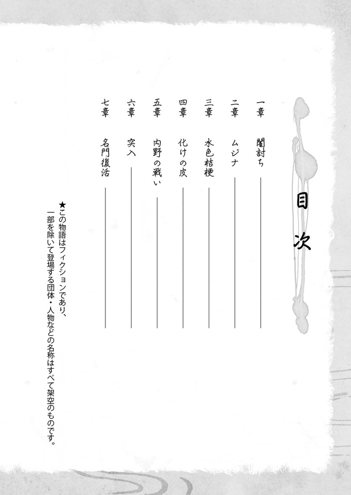
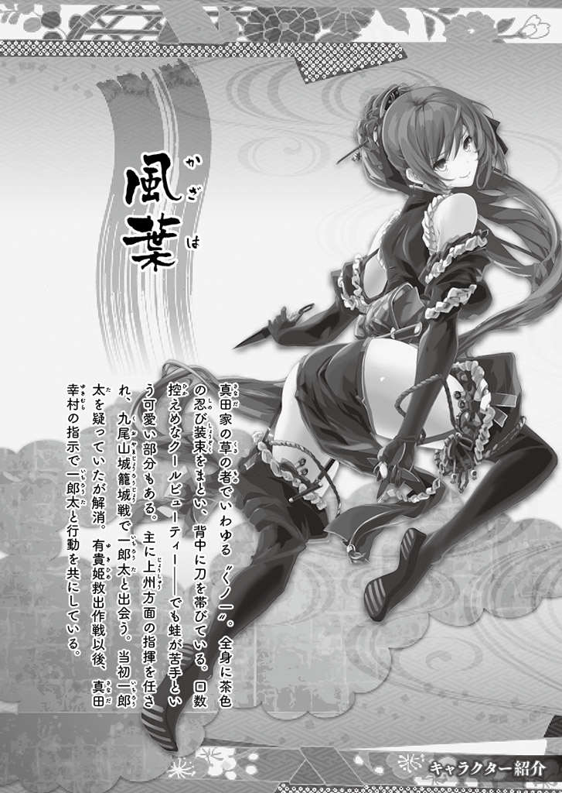
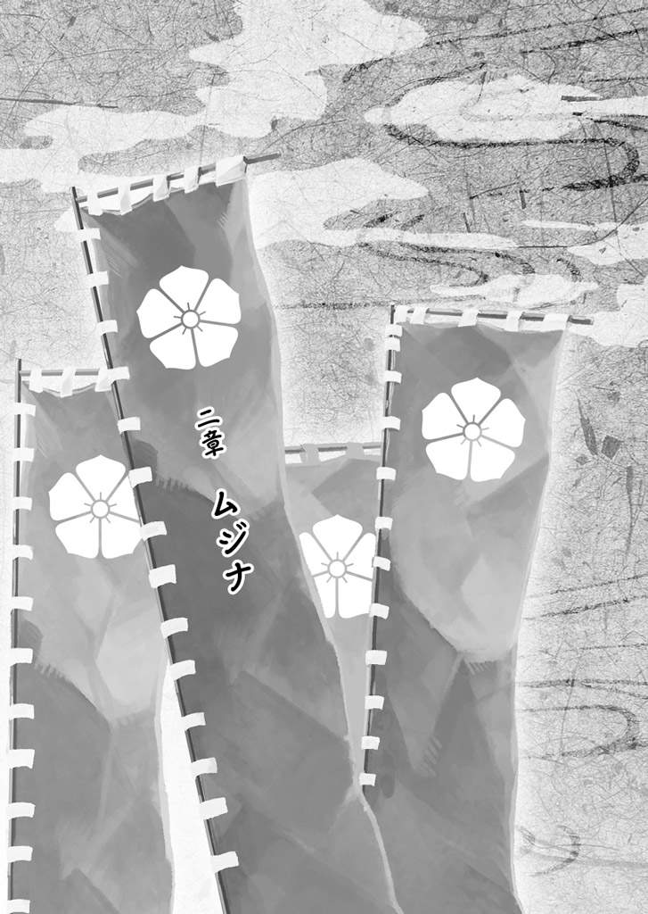

| 桜ノ杜ぶんこ 戦国ぼっち8 | |
| 瀧津孝 | |
| (2015) | |
桜ノ杜ぶんこ
戦国ぼっち８
Protect Kyoto from the evil !!
瀧津 孝


一章 闇討ち
「近 衛 家は、高 杉 様とお連れの皆様を、この邸内にて人知れず亡き者にしようとしております！」
左 大 臣 ・近 衛 信 輔 の屋敷の厠 で用を足そうとしていた俺に、風 葉 があまりにも衝 撃 的な情報を告げた。
そんなバカなことって、あるだろうか!? さっきまであんなに親しく、心中を率直に語ってくれていたはずの信 輔 が、本当にだまし討ちを？
雅 ......つまりは麗 を巡って、大きなわだかまりが渦巻いているものの、信 輔 と力を合わせて都を騒がす魔物〝鬼 火 猩々 〟を討ち、不思議な癒やしの力を持つ巫 女 ・十 六 夜 を救出しようと誓ったばかりなのに！
何が何やら、全く理解できない......。
俺は、高 杉 一 郎 太 。現代の東京に住む戦国オタクの高校二年生......だったんだけど、ひょんなことから戦国時代にタイムスリップしてしまった。
時の天下人・羽 柴 秀 吉 の旗本に取り立てられ、名目上 は俺の〝家来〟になった有 貴 姫 、りよ、沙 希 の三人、そして真 田 家のくノ一・風 葉 、新しく旅の仲間に加わった巫 女 見習いのちびっこ・雀 憐 を伴 って、当時は日本最大の都市として繁栄していた京の都に入っている。
秀 吉 から、〝鬼 火 猩々 〟を退治し、行方不明となった十 六 夜 の生死を確かめるよう命じられた俺たちは、左 大 臣 という朝 廷 の要職にありながら武士に憧れ、自らの手で〝鬼 火 猩々 〟を倒そうと意気込む若者・近 衛 信 輔 と知り合い、屋敷に招かれた。
そしてこの一つ屋根の下には、信 輔 に窮 地 を救われ、行動を共にしている麗 がいた！
いや、今は記憶を失い、俺たちの顔や名前も思い出せない彼女は、〝雅 〟と名付けられ、西洋の騎士の衣装に身を包み、まるで他人みたいに相対している。しかも、雅 と信 輔 の間には、相当親密な感情が芽生えつつある。
まるで恋人同士みたいな二人の仲むつまじい様子を見ていると、悔しくて仕方なく、情けなくも妬 ましい感情まで沸いてくる。
実際、信 輔 は俺たちに対して、雅 を嫁に迎えたいという意思を明らかにし、〝鬼 火 猩々 〟退治の暁 には、雅 からその返事をもらうと宣言した。
俺にしてみれば、いかに人の良さそうな信 輔 とは言え、相手が記憶喪失になってるのをいいことに、勝手極まりない話だ。それなのに、抗 いもせず、むしろ好意的な表情を見せる雅 ......。
俺は、もうすっかり意気消沈し、夕 餉 に出されたご馳走にも食欲がわかず、中座して厠 に来ていた。
そして、一人別行動を取り、俺たちと合流するため近 衛 邸にやってきた風 葉 が見 聞 きしたとんでもない情報に、俺はただ愕 然 とするばかりだった。
信 輔 と、信任厚い家臣・沓 掛 盛 永 の密談を裏付けるように、風 葉 の探索ではすでに武装した浪人が二〇人近く邸内のあちこちに潜 み、俺たちが寝入るのを待って討ち入る構えだという。
それでも、俺にはまだ信じられない。
「風 葉 さん、二人は他にどんな話をしていたの？ どうして俺たちを殺さなきゃいけないのか、その理由は聞けた？ それに、この計画を主導してるのは信 輔 様なの？」
「企 てを強く信 輔 様に勧めているのは盛 永 です。信 輔 様は、相当躊 躇 しておいでだったのですが、盛 永 の言い分に押し切られて、心ならずも同意を......」
「つまり、盛 永 の主張は、信 輔 様からすれば理に適 ってるってこと？」
「盛 永 が言うには、関 白 殿 下 は、信 輔 様にとって不 倶 戴 天 の敵であり、その家臣たる高 杉 様や我らも生かしておいてはならぬ存在であると」
「何でそんな理屈になっちゃうんだよ！」
「殿 下 は、近いうちにも遠い先にも、関 白 職を信 輔 様に譲る気持ちなどさらさらなく、武家の身内による世 襲 職にしようと目 論 んでいると、盛 永 は言うのです。
奴の手の者が密かに調べたところによると、右 大 臣 ・菊 亭 晴 季 が殿 下 に近付き、〝源 平 藤 橘 （日本における貴種名族である源氏・平氏・藤原氏・橘氏）〟にならぶ第五の新しい姓を創始すれば、近 衛 家の猶 子 （義子・養子）という呪縛からも解き放たれるとしきりに献策しているとの由 」
風 葉 からそう聞かされて、はたと思い当たった。
〝関 白 相 論 〟は、秀 吉 が近 衛 家と二 条 家の争いを調停する形で一件落着したように見えているけれど、裏ではとんでもない計略が進められていたんだっけ。
秀 吉 にとっては、まさにここからが名実共に天下人となるための〝本番〟なんだ。
確かに、秀 吉 は関 白 職を信 輔 に譲ろうなんて、これっぽっちも思っていないだろうし、実際そうしなかった。
事実翌年の九月に秀 吉 は、「豊 臣 」という全く新しい姓を天皇から下 賜 （身分の高い人が身分の低い人に物を与えること）され、関 白 就任のために猶 子 となった近 衛 家とは縁もゆかりもないことを世間に宣言してしまうんだから。
その直後に秀 吉 は、朝 廷 で司法・行政・立法を司る最高国家機関・太 政 官 のトップである太 政 大 臣 にも昇り、平 安 京 以来七〇〇年以上にわたって続いた藤原氏嫡流 の五 摂 家 による摂 政 （幼少の天皇に代わって政務や儀式を行う役職）・関 白 人事は中断する。
これは五 摂 家 にとっては痛恨の一大事であり、秀 吉 を猶 子 にして関 白 職に就 かせた近 衛 家にしてみれば許し難 い裏切りでもある。
でも、秀 吉 や菊 亭 晴 季 らが練りに練ったプランは、近 衛 家の反抗や敵対を封殺する見事なものだった。
この年の一一月に高齢の正親 町 天皇から譲位され、わずか一五歳で即位した後 陽 成 天皇に対し、秀 吉 は実子がいないことを理由に新天皇の実弟・智 仁 親 王 を猶 子 にもらい受け、豊 臣 家の養子として関 白 職を継がせるという約束を成立させる。
関 白 後継者が天皇の実弟となれば、近 衛 家に反論の余地は全くない。
これを知った時の信 輔 と、信 輔 の父で秀 吉 の提案を受け入れた近 衛 前 久 の怒りと失望は想像を絶するものだったろう。
この話には、まだ続きがある。
二年後にあたる天正一七年（一五八九年）、秀 吉 の側室になった茶 々 （後の淀君）が、彼の子・鶴 松 を生む。これによって、秀 吉 のプランはさらに軌道修正が加えられた。
関 白 職を鶴 松 に継がせるため、猶 子 となっていた智 仁 親 王 を豊 臣 家から切り離し、その代わりに屋敷と知 行 地を与え、新たに八条宮という世 襲 親 王 家（代々親 王 の身分を継承できる宮家）を創設させたんだ。自分の子ができたからといって、智 仁 親 王 を決して粗略には扱っていないと強くアピールすることで、秀 吉 はどうにか天皇を納得させた。
征 夷 大 将 軍 が最高責任者を務める「幕府」とは、元々朝 廷 に反抗する異民族を攻め討つよう命じられた征討軍の陣営、つまり指揮官用陣幕の場所を意味している。
日本で律令制が始まった飛鳥時代以来、政治は天皇を長とする朝 廷 が取り仕切っていたんだけれど、武士の台頭によって「国内が戦さで乱れているから、臨時に武家が政治を担当する」という理屈によって鎌倉幕府や室 町 幕府は朝 廷 から実権を取り上げた。
でも秀 吉 は、関 白 職を豊 臣 家による世 襲 制とし、征 夷 大 将 軍 に代わる武家の棟 梁 としても機能させることで、朝 廷 が武家と公 家 をまとめて管理、支配する体制を構築しようとした。
こうして、歴史上かつてない統治システムを具現化した豊 臣 政権が確立されていく。
そしてこれこそが、〝関 白 相 論 〟を踏み台にして秀 吉 が画 策 した大いなる野望だった。
それにしても、今の段階で秀 吉 と菊 亭 晴 季 が水面下で進めている謀議をあぶり出した盛 永 の諜 報 網 の実力には舌を巻く。
俺たちを闇討ちにしようという理屈も、近 衛 家の忠実な家臣として信 輔 を思ってのことと考えれば、ある意味筋も通ってる。
が、それを俺たちがすんなり受け入れる訳にはいかない。
「いかがなされました？ 大事ありませぬか？」
あんまり長く厠 の中に閉じ籠もっていたから、外で待ってる近 衛 家の家臣が扉越しに問いかけてきた。
「あっ、すみません。大丈夫です。もうすぐ出ますから」
急いで扉に向かって答え、風 葉 に向き直る。
すっかり萎 えていた気持ちが、切迫した状況に直面していつの間 にか奮い立っている。
「とにかく、少しでも早くみんなで屋敷から出るようにする。風 葉 さん、しばらく身を潜めて、邸内を警戒してくれないか？ もし万一の時は......」
俺が善 後 策を早口で告げると、風 葉 は音もなく格子窓から離れた。
とにもかくにも我慢してた用を足し、俺は厠 から出て広間に戻った。
広間には、もう信 輔 も戻っていた。その横には、盛 永 も控えている。
「高 杉 様も参られました。宮 様 、そろそろお開きにされてはいかがですか？」
俺が席に着くと同時に、盛 永 が信 輔 に促 した。
信 輔 は、思い詰めたような暗い表情だ。
そんな彼の変化に気付き、雅 がもの思 わし気 に信 輔 を見つめる。
いよいよ仕掛けてきたか......。このまま俺たちを寝室へ誘導し、頃合いを見て襲いかかり、バッサリ、って段取りだろう。
ここはとにかく邸内での宿泊を避け、強引にでも帰らせてもらうのが一番だ。
信 輔 は、というと......。
「うむ、そうじゃの......」
煮え切らない様子で、口ごもっている。
信 輔 は、盛 永 の入れ知恵にまだちゃんと納得はしていないんだ！
「宮 様 、お客人はどなたも相当お疲れのご様子。お部屋でゆっくり休んでいただきましょうぞ」
「うむ......それは、そうだが......」
俺が二人の会話に口を挟んで帰らせてもらおうとした時、雀 憐 が「美味かった〜〜〜！」と無邪気な嘆 声 を漏らした。
見ると、目の前にあった山のような料理は、全部きれいに平らげてある。
その言葉に、信 輔 が助け船をもらったかのようにすぐ反応した。
「雀 憐 、それほど美味かったか？」
「うん！ 都のほんまもんの料理っちゅうのは、こんなに美味いもんなんやな〜。どの料理も、生まれて初めて食べるもんばっかり！ 見た目にもごっつい綺 麗 やし、一体どうやったらこんな手の込んだ料理を作れるんやろ〜って、感心してしもた。こんな料理ばっかりやったら、まだなんぼでもお腹に入るわ〜！」
「おお、おお！ 嬉しいことを言うではないか。盛 永 、台所の料理人を呼んで参れ」
「はあ？ 今、ここにでございますか？」
「当たり前だ。確か、鷹 司 家から立派なコイが贈答に届いていたはず。あれを、この場で刺身にさせよ」
「はあ......」
盛 永 は、渋々といった表情で出て行き、程なく一人の料理人を下座に連れてきた。
「あやめと申します。よろしゅうお見知りおきのほどを」
俺たちに向かって手を付いて挨拶したのは、何と若い女の料理人だった。
細身で背丈が一六〇センチくらいはありそうだから、この時代の女性の平均身長よりかなり高い方だ。
室 町 時代には現在の日本料理の基礎ができあがり、俺がタイムスリップした安土桃山時代に入ると、料理にはいろんな流派ができてくる。また、接待料理は平安貴族の社交儀礼としても発達したから、支配階級が身に付けるべき教養として庖丁（料理に関する作法や調理法）が弓術や蹴鞠と並んで挙げられていたともいう。
そんな訳で、この時代の料理人と言えば、男性であるのが常識だったはずだ。
「女性......の方なんですね」
思わずそうつぶやいた俺に、女性陣も一様にうなずく。
「おなごが料理人で驚いたか？ あやめは、盛 永 の推薦で召し抱えることになったのだが、わしも初めて目通りを許した折は、おなごが果たしてまともな料理を作れるのか半信半疑だった。
されど、いざ台所に立たせてみると、作る料理がどれもこれも格別に美味い。聞くと、父親が越 前 （福井県北部）・朝 倉 氏の料理頭の一人であったという。
代々朝 倉 氏は京文化を愛し、拠点とした一 乗 谷 は、織 田 信 長 公に滅ぼされるまで〝北ノ京〟とも呼ばれるほど栄華を極めていた。
左 様 な朝 倉 氏が雇うた料理頭であるからには、腕は一流。あやめは、京料理にも通じていた父から幼い頃より厳しい薫 陶 を受けてきたらしい。
しかるに、我が父の代から近 衛 の家に仕えておる料理人の腕は今ひとつでのう。故 に、盛 永 の進言を聞き入れて、台所方の女中ごとそっくり入れ替えた。
これまでは客を呼んで料理でもてなすのが少々ためらわれたが、今では堂々と振る舞える。盛 永 は、良き料理人を世話してくれた」
「勿体なきお言葉。宮 様 のお役に立てるのは、望 外 の喜びにございます」
すかさず、盛 永 が頭を下げる。如 才 のない奴だ。
「まあ、わらわの城でも、台所の差配をしておるのはおなごであったがのう......」
「姫様、言っちゃ悪いが、田舎の小大名家と都の左 大 臣 家を同列にしちゃマズイだろう」
「誰が田舎じゃ！ そもそも釣った魚をすぐに焼くか、さばくかしてしか食さぬ海賊には、台所方などという職分もないであろう！」
「水軍を侮 ってもらっちゃ困る！ あたしたちにだって......」
「ちょっとちょっと、こんなとこで口喧嘩しない！」
俺が止めなかったら、有 貴 姫 と沙 希 はこの言い合いを延々とやってるんだろうな。
「あやめ、この者らはわしと共に〝鬼 火 猩々 〟退治に挑む、言わば朋 輩 だ。景気付けに、そなたの包丁さばきを披露し、今 宵 の宴 を締め括 る膳とせよ。そこの端に座っておる巫 女 見習いの雀 憐 も、そなたの料理を絶賛しておったぞ」
冗談めかして信 輔 が指した雀 憐 に、あやめが微笑みかける。
二〇代の後半くらいだろうか。ちょっと下ぶくれの丸顔が、笑うと愛 嬌 たっぷりになる。
「まあ、可愛らしい巫 女 さんやこと。誉めてくれて、おおきに」
「そやかて、ほんまに美味しかったんやもん！」
「嬉しいわあ。それにしても、大人の皆さんに混じって、〝鬼 火 猩々 〟退治やなんて......まだ小さいのに偉おすなあ。夜中に光って人を襲う魔物みたいな恐ろしいもん直 に見たら、わてなんかひっくり返ってしまうやろに......。
雀 憐 さんはそんな目に遭うても、こないに毅 然 としたはる。わても負けんよう、精 々 腕によりをかけて料理せんと笑われますな」
そう言って袂 から紐 を取り出したあやめは、手際よく袖 をタスキがけにした。
台所の女中たちが、体長八〇センチはあろうかという大きなコイを乗せたまな板をあやめの前に置く。
あやめは、右手に包丁、左手に真 魚 箸 を持ち、魚に手を触れることなく見事な手際で身を三枚におろし、刺身の大きさに切っていく。
介添えする女中たちが、小皿に刺身を取り分け、俺たちの前に置いていった。
「皿には酢味噌も乗せてますさかい、それを付けてお召し上がりやす」
あやめに言われたとおりにして、いち早く箸を取った雀 憐 が、破 顔 する。
「美味ーーーーーーい！」
俺は生まれて初めてコイの刺身を食べたんだけど、なかなかいける。
「少し泥臭くないか？ あたしは......海の魚の方が好きだな」
「おらも......海......」
信 輔 やあやめに聞こえないよう小声でひそひそやってる沙 希 とりよは、それほどでもないようだ。
「ん？ どうした？ おなごたちの口には合わぬか？」
沙 希 とりよの反応がイマイチで気になるのか、信 輔 が声を掛ける。
「左 様 なことはありませぬ」
刺身の皿を置いて答えたのは、有 貴 姫 だ。
「結構なお味ですし、我らの目の前での見事な包丁さばきにも引き込まれましたが、斯 様 な趣向で右に出る者がないのは、高 杉 殿なのです」
おいおい、こんなとこで何を言い出すんだよ、有 貴 姫 は。
「まことか、高 杉 ？」
信 輔 が、興味津々といった風に俺を見る。
「まことでございます」
俺の代わりに、一も二もなく有 貴 姫 が応じる。
「上野 （群馬県）の地で初めて出会うて以来、わらわは見たことも聞いたこともない、異国の技としか思えぬ処 方 箋 と手さばきで、摩 訶 不思議な料理の数々を作ってこられたのが高 杉 殿。しかも、そのことごとくが、えも言われぬほどの美味なのでございます！
いかなる窮 地 に陥 ろうとも、高 杉 殿の料理を一口食せば百人力を得られ、それ故に我ら一行は危難を切り抜けてきたと言えましょう」
どこまで大 袈 裟 に褒 めちぎるんだよ〜。
信 輔 は感心して腕を組み、雅 もこれまでとはちょっと違う、俺に対する微 かな好奇心をにじませたような視線を向けた。
「ならば、高 杉 、わしも是非その摩 訶 不思議な料理を味おうてみたいぞ。この座の余興に、披露してくれぬか？」
「ええっ!? 今、俺の料理をですか？」
「宮 様 、ご無理を仰 せになっては、この方々もお困りになりましょう」
盛 永 が、さも俺たちを気遣っているように思わせる言葉で異論を唱える。
こいつの腹は、少しでも早く俺たちを寝かし付け、無防備になったところを襲うってことだ。その手には乗らない。
なら、信 輔 の申し出を受けて時間稼ぎするのも、悪くはないかもしれない。
「じゃあ、信 輔 様、どんな食材があるのか、台所を見せてもらえますか？」
「おお、受けてくれるか！」
笑顔の中に、ホッとした感情も混じり合ったように見える信 輔 とは対照的に、盛 永 は苦 虫 をかみつぶしたような表情だ。
「一 郎 太 って、料理もできるんか？」
雀 憐 が、目を丸くして女の子たちに尋ねる。
「高 杉 殿は何でもできる殿 御 なのじゃ。此 度 はいかなる料理が飛び出すのか、楽しみでたまらぬ！」
「雀 憐 は高 杉 氏の料理、初めてだろ？ 口にすれば、ほっぺが落ちてしまうぞ」
「日 の本 一......旦那様の...手料理！」
「あても、あても！」
こっちの気も知らずに、女の子たちは大はしゃぎしている。
それはともかく、事態をどう動かせるか......出たとこ勝負だ！
信 輔 に先導され、俺たちは屋敷の台所へと案内された。
左 大 臣 家の台所とあって結構広く、大部分が土間ではあるけれど、畳だと二〇畳以上あるだろう。
ここで、あやめを筆頭に計六人の台所方女中が家中の朝夕の食事を作り、客が来れば豪勢なもてなし料理に腕を振るう。
「高 杉 、ここにある材料は、差し障りのある物以外は、どれでも思うままに使うが良い。あやめ、高 杉 に何があるか教えてやってくれ」
「はい。では高 杉 様。今 宵 のお膳で、めぼしい材料は全部使てしまいましたさかい、あんまり残ってへんのですが......」
あやめが俺の隣に来て、置いてある食材を一つ一つ説明する。
ダイコン、カブ、ネギ、サトイモ、ゴボウ、ホウレンソウ......野菜は結構たくさんある。
肉類は......干しイワシ......勝手口に吊るしてある一羽のカモ......たったこれだけ？
後は、玄米と梅干しとダイコンの漬け物か......。
調味料は、塩、もろみ醤油、味噌、酢。
さすがに日本最大の都市として食文化も進んでいるらしく、エゴマ油は灯火用ではなく、揚げ物用に保存されている。
「どうだ、わしも食ったことのないような美味いものは作れそうか？」
「はあ......」
これだけの材料じゃ、信 輔 が期待する〝摩 訶 不思議な料理〟なんてとても作れない。
他に何か使えそうな物はないだろうかと台所を見回すと、隅にある大きな樽 が目に留まった。直径は俺の身長以上ありそうな、木の樽 だ。
「あれは、何です？」
「海の魚のために設 えた生 け簀 ですわ。海のない京の都で魚て言うたら、川魚ばっかりですやろ？ 海からは、干物か塩でしめたしょっぱい魚くらいしか入ってきまへん。
そやから、大坂の漁師に頼んで、海で獲れたハモやらグジ（アマダイ）やらアジやらを海水の入った樽 に入れて、木 津 川 経由で送ってもろてるんどす。で、ここに着いたらすぐこの生 け簀 へ入れ替えて、泳がしてますの。
川魚だけやのうて、宮 様 にいつでも新鮮な海のお魚を食していただけるよう。そやけど、今はイワシとタコとカレイくらいしか残ってまへん」
確かに、樽 からは微 かに潮の香りが漂ってきてるみたいだ。
「へえ〜。でも、見せてくださいよ。生きてるんでしょ？」
俺が樽 に近付こうとすると、あやめは申し訳なさそうに行く手を塞 いだ。
「それはご遠慮を。魚は夜、寝てますさかい、樽 の蓋 を急に開けたら、びっくりしてしまいます。魚も生きもんやから、不安にさせたり、緊張させたりしたら、身が細うなって美味しゅうなくなるんどす」
「はあ......」
言われてみれば、確かにそうなのかもしれない。となると、生の魚は使えないってことか。これじゃ、作れる料理なんて、かなり限られてくるぞ。
そうこうしていると、女中の一人が布に何かをくるんで信 輔 に見せている。
「これ、もう捨ててもよろしおすやろか？」
「ああ、もう堅くて食えんからな。捨ててくれ」
古くなった食い物？
俺は気になって二人に近付いた。
女中が手に持つ布の中には......野球ボールくらいの大きさの茶色い球体が五つ。
でも、ボールじゃない。まさか、これって！
「パンじゃないですか！」
俺は驚いて、その一つをつい手に取った。確かに、丸く焼かれたパンだ。
初めてパンを見た有 貴 姫 、りよ、沙 希 は、これが人の食べ物なんだろうかとチンプンカンプンといった表情で首をひねっている。
「うげーーーっ！ そんなもん、ほんまに食べられるんか？ どっからどう見ても、汚いお手玉やで」
雀 憐 も、顔をしかめた。
「これは、小麦粉を主体にして作られてる南 蛮 人の主食なんだよ。ってことは、ひょっとしてフロイスさんから？」
俺の問い掛けに、信 輔 がニコリとうなずいた。
「高 杉 は何でもよう知っておるのう。ただ、南 蛮 寺では『パオ』と呼んでおったが。
あの寺にはパオを焼く窯 があってな、数日前にフロイスがくれたのだ。暇な折に食おうと、台所に置いていたらこんなになってしもうての」
信 輔 が、両手でパンを二つ取り上げ、叩き合わせると、コンコンといかにも堅そうな音がした。
「これでは、無理に食おうとしても、歯を痛めかねんからな。捨てるよりほかあるまい」
「そうですね。そうなっちゃうと、もうパン粉にするくらいしか......」
ここまで言って、閃いた。あれなら、作れるかも！
生卵も欲しいところだけど、パン粉がその代役を果たしてくれるはず。
俺の顔つきの変化に、女の子たちが鋭く気付いた。
「高 杉 殿、何か良い料理の案が浮かんだのじゃな？」
「おっ、来た来た！ 高 杉 氏の仰天料理の実演が始まるのか!? 」
「やった！......旦那様」
俺は、女の子たちに微笑みを返し、信 輔 を見た。
「説明を受けた物は、自由に使ってもいいんですね？」
「無論だ」
「なら、あやめさん、勝手口に吊ってあるカモをさばいて、ミンチに......えっと、包丁で細かく、粘り気が出るまで細かく叩いてください」
「承知いたしました」
あやめは、配下の女中たちにテキパキと指示して、早速カモの調理に取りかかる。
俺は野菜の中からネギを選び、菜切り包丁を借りてみじん切りを始める。
「手伝う......おらも！」
「わらわも、何かできることはないか？」
「高 杉 氏、あたしも！ と大きな口は叩けないんだが、やる気だけは誰よりもあるぞ！」
手伝ってくれるのはありがたいんだけど......有 貴 姫 はお城の深 窓 育ちで食べるのが専門だし、沙 希 は以前「武人は台所になど立たぬ」なんて言ってたくらいだから、全然当てにできない。
りよは、上 州 （群馬県＝上野 国）の山小屋で父親の茂 平 と一緒に暮らしてた時、食事の世話だってしてたんだろうからこの中では一番頼りにはなるはずなんだけど、包丁を使ったまともな料理なんてしたことなかったんじゃ......。
となると、できることは相当限られてくるなぁ。三人にできそうなのは......。
「えーっと、それじゃ、そのパンを全部細かく裂いて、粉状にほぐしてくれるかな？ パンを細かい粉にするんだ」
「おやすい御用じゃ！」
「それなら、あたしにもできそうだな」
「やる！......粉作り！」
「あても、あても、みんなと一緒に！ 何かわからへんけど、ごっつう楽しそうや！」
雀 憐 も加えて女の子たち四人は、女中からパンを受け取り、俺と同じ調理台でパン粉作りに勤 しむ。
背の低い雀 憐 は、自分で台所にあった踏み台を探してきて、それに乗っかっている。
いつもなら、ここに麗 も加わってるはずなんだけど......。
雅 は、信 輔 の隣に寄り添い、無表情に俺たちを見ているだけだ。
「できた！.........一番」
しばらくすると、りよが大きな声を出した。
集中力が欠かせない弓の名手でもあるせいか、彼女の一心不乱な作業の早さと正確さは、他の女の子たちを圧倒していた。
五個あったうちの二個をりよが担当し、パン粉は細かくサラサラ、パラパラに仕上がっている。
「だから......一番 の家臣！......おらが......旦那様の！......」
「おいおい、りよ殿、パンの粉とやらを作る早さで家臣の上下を決めるなんて、誰も言ってないぞ！」
「沙 希 の言うとおりじゃ！ そもそもお前は、〝付き人 家臣〟で満足と言うていたではないか！」
「言ってない！......満足......」
「みんな、おしゃべりしてるから、手が止まっているよ！」
俺に促 されて、有 貴 姫 と沙 希 は仕方なくパン粉作りを続ける。
雀 憐 は、結構堅くなってしまってるパンとの格闘に懸命で、この論争に加わる余裕はないようだ。
「手が空いたりよさんには......ダイコンおろしでもやってもらおうか」
「やる！......どこに下ろす？......ダイコン......」
間 髪 を入れず、両手にダイコンを持ったりよは、土間の地面をあちこち見ている。
「あの......ダイコンを下に置くんじゃなくて、ほら、あそこにあるおろし器でダイコンを摺 りおろすんだよ」
台所には、竹を加工して小さな突起をたくさん付けたおろし器があった。
俺は一本のダイコンを切り分け、それぞれ包丁で縦に数ミリの切れ目を入れ、そこに指を入れて、手でむく。
この方法だと、巻紙をほどくみたいにして包丁で薄く長く切る〝かつらむき〟みたいな日本料理の技術を使わなくても、簡単にダイコンの皮をむける。
「すごい......旦那様......」
「また何とも不可思議な術で、皮がむけるものじゃな〜」
「見てみろよ、つるんとキレイにむけてるぞ」
驚いてるのは女の子たちだけでなく、信 輔 や雅 も同じように目を丸くしている。
「高 杉 様、これはまたどないな技なんどす？」
カモの下ごしらえを終えたあやめが、俺を見て思わずうなった。
「ダイコンの皮と実の間にはわずかな隙間があってね、そこに指を入れれば簡単にむけるんですよ。ネットで料理法を調べてたら、偶然そんな書き込みを見つけちゃって......」
「ねっと......て、何どす？」
「あわわ、ネットじゃなくって......えーっと、そう、『えっと』って言っただけなんで、あんまり気にしないでください。いろんな料理法について書かれてる書類みたいな物から、この方法を引き出してさ」
「へえ......そうなんどすか」
危ない危ない。うっかりしてると、つい現代語がポロリと出てしまう。
「それより、あやめさん、大根おろしを代わりに作ってもらえませんか？」
手にしたダイコンとおろし器を交互に見つめ、りよがずーっと悩んでいる。
ダイコンおろしを知らないんだから、おろし方だって知らないのは当然だ。
俺が、間違ってた。
有 貴 姫 、沙 希 、雀 憐 のパン粉作りも完了し、これで必要な具材は全部そろった。
パン粉に、カモの挽き肉、みじん切りのネギを混ぜ、塩を少々入れてこねる。
「あてにもやらせて！ あてにも！」
そばやうどんの生地をつぶしては丸め、混ぜ合わせては伸ばすような動作が面白いのか、雀 憐 がせがむ。
「じゃあ、半分に分けて渡すから、ちゃんとこねるんだぞ」
「うん、わかった！ 一 郎 太 ！」
こういう時の返事は、ホントに調子いいんだ。
「されど、これで如 何 様 なる食べ物ができるのじゃ？」
「よもや、ネチョネチョしてるこれをそのまま食うとか？ ちょっと気持ち悪いぞ」
「お団子？......丸めて......」
「生では食べないよ。りよさんは、ちょい惜しい。お団子よりはもう少し大きく、手 の平 大 の楕 円 形にするんだよ」
俺がひょいと横を見ると......案の定だ。
雀 憐 の奴、生地を粘土細工の代わりみたいにして人形をいくつも作って遊んでる。
「食べ物で、そんなことしない！」
俺が生地を取り上げると、雀 憐 は「何すんねん！ こらっ、返せ！」と手を伸ばした。
「食べ物を粗末にする悪い子には、触らせなーい！」
ぴしゃりと俺が言うと、雀 憐 はぷーっとふくれっ面をした。
雀 憐 の分の生地を、改めてこね直す。すっかり二度手間だ。手 の平 大 の成形は、コツがいるから俺一人でやる。
適量を手に取り、両手でキャッチボールをする要領で投げながら作ると、中の空気が抜けてうまく仕上がる。
雀 憐 がそれを見て、ひょいと生地をつまみ取り、同じようにマネをした。少しは反省しているかと、しょうがないから俺は見て見ない振りをする。
結果は......手加減せずにやるもんだから、生地があちこちに飛び散って、調理台を囲むみんなに降りかかった。
「こりゃ、雀 憐 、何をする！」
「あたしと同じで、こいつ、料理の才能は全くなしだな〜」
「おしまい！......お手伝い！」
りよに踏み台から強制的に下ろされ、調理台から少し離れた場所に立たされた雀 憐 は不服そうだ。
「底ができるだけ平たい鉄の鍋はありませんか？」
「それならば、これでいかがでしょう」
あやめが出してきた三個の鉄鍋は、楕 円 形に作った生地を数個同時に置けそうなちょうど良い大きさだった。
「竈 の火を貸してください」
大きな台所だから、竈 は五つもある。大人数の宴会では、これらがフル回転して料理が作られていくんだろう。
竈 の火はまだ消されていなかったから、俺は三つの鍋の底にエゴマ油を少し垂らし、火に掛けた。
後は、生地を鍋に乗せ、焦げ付かさないよう両面適度に焼けば、完成する。
ジューッ！ という音と共に、肉の焼けるいい香りが、台所に広がっていく。
「何とも食欲をそそられる香りではないか」
信 輔 に話しかけられた雅 の表情が、微妙に強 ばったような気がした。
「はい......」
俺にはこの時、雅 の眼 差 しが焦点を失ったかのように見えたのだが、しゃもじ片手に鍋の中の焼き具合を確かめながら、ちらちら目を向けてるだけだから、はっきりとはわからない。
「金網などではなく、鍋で直 に焼くとは、恐れ入りました。これもやはり、南 蛮 の調理法なのでしょうか？」
あやめは、生 真 面 目 な料理人らしく、俺の一 挙 手 一 投 足 をも見逃すまいと目を皿にしつつ感心することしきりだ。
「まあ、南 蛮 料理と言えば、そうなのかな〜」
俺が作っているのは............そう！ ハンバーグだ。
これって、中世後期のドイツで流行した、生肉をみじん切りにして塩やオリーブオイルや薬味を混ぜて味付けした料理、タルタルステーキを原形にしてるらしいから、南 蛮 料理と言えなくもない。
台所にいる人数分の皿に、ほぼ同時に焼き上がったハンバーグを乗せ、あやめが作ってくれたダイコンおろしと、ネットリしたもろみ醤油を添える。
「さあ、冷めないうちに。ダイコンおろしともろみ醤油を付けて、早く食べてください」
「よし、ならばこの場で、みなと共に食うか。無礼講だ。座れ、座れ！」
台所の板間に信 輔 がどかりと腰を下ろし、雅 も、女の子たちも正座する。
身分を意識して、あやめや女中たちは少し離れた隅 に着座した。
信 輔 は、置かれた皿に早速箸を伸ばし、一切れ口に入れると同時に目をカッと見開いた。
「これは......何と未知なる美味！」
一口食べた有 貴 姫 、りよ、沙 希 も、うっとりと幸せそうな顔になる。
「ほんまにほっぺたが落ちそうや〜！ 一 郎 太 、この料理、何て言う名前なんや？」
雀 憐 は、そう尋ねながら、俺の方は見ずにニコニコとがっついている。
「これは、和風おろしハンバーグ。ホントは牛肉とかタマネギを使いたかったんだけど、カモ肉とネギで代用したんだ。
ハンバーグのタネの〝つなぎ〟には、ニワトリの生卵も使うんだよ。でも、〝つなぎ〟役はパン粉だけでもできるかと思って、やってみた。信 輔 様が堅くなったパンを見せてくれてなかったら、この料理は思い付かなかっただろうな」
あやめはいちいちうなずきつつ、俺の言葉を一言一句漏らすまいと、襟 元 に挟んでいた半紙を取り出して筆で書き留めている。熱心だよな〜。
と、別の方向から視線を感じて、俺はそっちへ向き直った。
雅 が、口元に箸を付けたまま、俺を見ている。
目が合うと、彼女は途端に視線をそらし、再びハンバーグを食べ始めた。
何だ？ 彼女は、俺に何か言いたかったのか？
「いかがでございます、信 輔 様。高 杉 殿の料理の腕前は、人後に落ちますまい？」
有 貴 姫 にツッコミを入れられ、あっと言う間 にハンバーグを平らげた信 輔 が満足そうに俺を見た。
「いや、まさしく。摩 訶 不思議な美味とは、よくぞ言うた。南 蛮 料理でありながら、我ら日 の本 の者が食うて、いささかの違和感もない。さしものあやめも、今 宵 の高 杉 の料理は大いに勉強になったのではないか？」
「はい、高 杉 様には、何 卒 他の南 蛮 料理についてもご教授をお願いしたいもんどす」
「うむ、それが良い。高 杉 、明日の朝 餉 も南 蛮 料理でどうだ？ どうせ今 宵 はこの屋敷に泊まって......」
ここまで言って、陽気にしゃべっていた信 輔 の顔が突然曇った。
信 輔 は、それまですっかり忘れていたんだろう。今夜、寝入った俺たちを闇討ちするという陰 謀 を。
でもこのリアクションは、彼が俺たちを進んで殺そうなんて思ってないことを意味してるはずだ。
「いかがなされました？」
雅 が心配そうに、信 輔 の顔をのぞき込む。
「いや、何でもない......」
「信 輔 様」
俺は、今が押し切るチャンスだと思った。
「俺たち、いつでもお屋敷にお邪魔して、あやめさんにも料理を教えます。でも、今日のところはこれで失礼して、二 条 第 に戻ろうと思うんですが」
「高 杉 殿、このお屋敷に泊まらせていただくのではなかったのか？」
「あたしは、ここで厄介になった方がいいと思うぞ。もう随分夜も更けてるし」
「疲れてる......雀 憐 も......」
俺が急に帰ると言い出したから、女の子たちはいぶかしげだ。
雀 憐 も、広間でのごちそうと、ここでのハンバーグを完食して眠くなってきたのか、目が少しトロンとしている。
「されど......」
信 輔 の胸の内は、揺らいでいるようだ。
「風 葉 さんが戻ってきて、二 条 第 で俺たちをずっと待っててくれてるかもしれないじゃないか。俺たちは、風 葉 さんからの報告も、できるだけ早く聞かなくちゃいけない。だろ？」
咄 嗟 に風 葉 を言い訳に使ったものの、女の子たちの説得材料としては効果的だった。
有 貴 姫 、りよ、沙 希 はお互いに目 配 せした後、俺にコクリとした。
「ということなので、信 輔 様、今日のところは、どうか！」
俺は語気を強めた。
眉 間 にしわを寄せ、ひとしきり考え込んでいた信 輔 は、口元を緩 めた。
「......そうだな。今 宵 は、二 条 第 に帰る方が良いか」
「信 輔 様！」
彼は、俺たちを助けようとしてくれている。
俺は、思わず信 輔 に頭を下げた。
「されば、急ぐがよかろう。ぐずぐずしておれば、外はいよいよ冷えてくる」
信 輔 が先に立って広間へと引き返し、俺たちも後に続いた。
取り敢えず、これで一安心だ。
広間に戻り、置いていたそれぞれの持ち物を取ろうとして、俺たちは「？」となった。
武器がない。
座っていた場所にあるはずの、俺の杖 、有 貴 姫 の薙 刀 、沙 希 のやがらもがら、りよの半 弓 。部屋のどこにも見当たらない。
「あの、信 輔 様、俺たちの武器は......」
「如 何 したことか......わしにも、わからぬ」
そこへ、盛 永 が恭 しく入ってきた。
「皆様の得 物 でしたら、もう寝室へと運ばせていただきました。案内いたしますゆえ、どうぞ銘 々 のお部屋へおいでくだされ」
「そんな勝手なことされちゃ、困ります！」
俺の抗議に、盛 永 は平然としている。
「差し出がましいことをして、お許しを。なれど、当屋敷にお泊まりいただく客人への心遣いから、良かれと思うて運んだまで。そう目くじらを立ててくださるな」
心遣いなんてこれっぽっちも持ってないくせに、ふてぶてしい奴だ。
「それはそうかもしれませんが、どっちにしろ、今日はここで失礼し、二 条 第 へ帰らせてもらいます。ですから、俺たちの武器を返してください」
「何を仰 せか。もうご宿泊の用意は全て調っておる」
「お手間をかけたのは申し訳ないですが、二 条 第 には俺たちを待ってる人もいます。それに、お暇させていただくお許しは、信 輔 様からも頂戴しています」
「宮 様 ！」
盛 永 が、険 しい目で信 輔 を見た。
「うむ......わしは......」
「宮 様 はお優しいゆえ、左 様 に申されたであろうが、それを良いことに思い上がりおって！ そなたたちから見れば、左 大 臣 たる宮 様 は雲の上の存在ぞ！ その尊いお言葉に、逆らうとはどういう了 見 か！ 如 何 に関 白 殿 下 の直 臣 と言えど、家臣の分際でかかる無礼は不 敬 の罪！ 近 衛 家中の我らが許してはおかぬ！」
盛 永 の怒声が呼び水となって、周囲の襖 が一斉に開け放たれ、浪人風の男たち一〇人以上が俺たちを取り巻いた。
広間の一方は、中庭に面した回 廊 になっていて、庭にも一〇人近い浪人が駆け付けてくる。もう逃げられない。
「そんな理屈、無茶苦茶じゃないか！」
「左 大 臣 家の面 目 を潰されては、如 何 に些 細 なことであろうと捨て置けぬ。近 衛 家は、公 卿 とは言え、武家の家風を重んじておる。不 埒 者は刀にかけて、成敗することになろう」
盛 永 の言葉に、浪人たちが刀の柄 に手を掛ける。
まずい！
とんでもなくまずい！
武器を取り上げて丸腰にしたうえ、俺たちが大人しく寝室に向かわないなら、この場で斬ろうってつもりか！
騒動を聞きつけ、諸 大 夫 の針 小 路 長 正 が血 相 を変えてやってくる。
「待て待て！ これは何の騒ぎや！」
「老いぼれは口を出すな！ 左 大 臣 家に無礼を働く輩 を不 敬 の罪で誅 するのだ！」
盛 永 に一喝され、その場に固まった長 正 を、浪人たちが無理矢理後ろへ押しやる。
「どっちが無礼だ！ あたしたちにこんな手荒をするお前たちの方が、よっぽど無礼だぞ！ この間抜け野郎！」
「かかる言いがかりをつけて、我らを害しようなどと、関 白 殿 下 のお耳に入ればタダではすまぬと思え！」
「引っ込め...キツネ顔......！」
沙 希 、有 貴 姫 、りよが盛 永 を罵 りつつ、雀 憐 を抱き寄せる。
「いくら言っても無駄だよ。不 敬 の罪とか何とかは、あくまでも口実。どっちにしろ、この屋敷内で起こったことは公 にされず、俺たちを闇から闇に葬 るつもりだ」
「「「「！」」」」
俺の言葉に、女の子たちが瞠 目 する。
「信 輔 様、どうか止めさせてください！ こんなの、信 輔 様の本意じゃないんでしょ？ 信 輔 様！」
俺に問い詰められ、信 輔 は苦 渋 をにじませ盛 永 を見る。
「盛 永 、やはりわしは斯 様 な振る舞いをしてまで......」
「いいえ、これも近 衛 家の、宮 様 の御 為 。腹をくくりなされ！」
「されど......」
緊迫したやり取りをする信 輔 と盛 永 を、雅 がハラハラしながら交互に見る。
「宮 様 、雅 殿、お下がりくださいませ。危のうございます」
盛 永 が、腕を伸ばして二人を後ろへ下げる。
武器がなければ、抵抗のしようがない。それは、有 貴 姫 、りよ、沙 希 も同様だ。
身を守る防具もなく取り囲まれ、もう観念するしかないってのか......。
でも、雀 憐 はまだ子供だ。俺は、雀 憐 の両肩をつかんだ。
「この子は、雀 憐 だけは逃がしてやってくれ。俺たちと一緒に、幼子まで殺す必要はないだろ？」
「残念だが、この場におる者はみな同罪だ。悪く思うな。その代わり、苦しまずに済むよう、皆一刀であの世へ送ってやる」
盛 永 が、憎たらしい笑みを浮かべ、ひらりと刀を抜く。
同時に、浪人たちも一斉に抜刀した。
もう、為 す術 がない。
俺の正面に立つ盛 永 が、自分の目の高さで刃を上にして、刀を水平に持つ独特の構えに入った。
これは......霞 の構え？
杖 道 の稽古に通ってた時、古武道の戦い方を調べてて目にした記憶がある。
本来は敵の両目を狙って斬り払う構えで、目潰しをされると霞 がかかったように見えなくなることから、こんな名称が付けられたと言われている。
でも、真横に薙がれた刀が頭を直撃したら......当然即死だ。
屋内では、無闇に刀を上段に振りかぶると、天井や梁 に突き刺さって自在に使えなくなるのを想定しての構えだろう。
周りを囲む浪人たちは、柄 を握る左拳をへその位置に、剣先を俺たちの喉 元 に付けるオーソドックスな中段の構えでじりっと詰め寄る。
俺が雀 憐 を後ろにやると、有 貴 姫 、りよ、沙 希 もお互い背を向けて円陣を組み、彼女を輪の中心にして庇 う。
盛 永 が、大きく息を吸って斬り込んでこようとした、その刹 那 ！
屋敷の中が、急に騒がしくなってきた。
この騒々しさは、一人や二人じゃない。かなり大勢の人間？
近 衛 家に、そんなにたくさんの家人がいただろうか？ ここにいる浪人たちは別として、正式な家来は一〇人か二〇人くらいのはずだ。
「どこだ、どこだ！」
「左 府 様はご無事なのか！」
そんな風に聞こえる怒声が、どんどん近付いてくる。
やがて、手に手に松 明 を持つ一団が中庭になだれ込んできた。
これは、京都所 司 代 の役人たち！
中庭の浪人たちも突然の闖 入 者に面食らい、彼らに道を譲る格好で後 退 る。
彼らを率いている甲 冑 姿の武士が、広間に向かって誰かを探す素 振 りを見せた。
「左 府 様はいずこに？ いずこにおわします？」
「わしはここだ。これは一体、如 何 したことか？」
信 輔 が、回 廊 に進み出る。
「我らは、京都所 司 代 の手の者にございます！ 左 府 様のお屋敷にて、〝鬼 火 猩々 〟が出現したとの報を受け、急ぎ罷 り越しました！ かの魔物はどこにおるのですか？」
「〝鬼 火 猩々 〟が、我が屋敷にじゃと......？」
事態を呑み込めず、信 輔 が言いよどんでいると、広間にいる浪人たちをすり抜けて、風 葉 が音も立てずに俺の目の前に現れた。
「高 杉 様、遅うなりました。取り急ぎ、段取りの如 く！」
間に合った！
厠 で風 葉 に言い含めておいた万一の時の策......それは、上 京 エリアの周囲で警戒にあたっている京都所 司 代 の役人に「近 衛 家で〝鬼 火 猩々 〟が出た」と訴え出て、大勢で邸内に乱入させることだった。
そうすれば、どさくさに紛 れて脱出できるだろうから。
魔物が出現した後なら、役人たちは安心して大人数で現場に駆け付けてくるとにらんでたんだけど、思ったとおりだ。
門を閉ざす横木の閂 は、あらかじめ外しておくよう風 葉 に頼んでおいたから、雪崩 を打って邸内に突入できたらしい。
「〝鬼 火 猩々 〟は、すでに姿をくらましました！ でも、どこかに潜んでいる恐れもあるので、邸内をくまなくお調べください！」
俺が広間から声を張り上げると、京都所 司 代 の武士が気付いて嬉しそうな表情を見せた。
「おおっ、忍 び目 付 の高 杉 様！ こちらにもお越しでしたか！ お役目ご苦労に存ずる！ ご助言、かたじけない！」
昨晩、実際に〝鬼 火 猩々 〟が出た現場で、俺たちを事情聴取した役人の組 頭 だ。
こうなると、俄 然 こっちはやりやすくなる。
組 頭 の指図で、役人たちは探索のため何組かに分かれて邸内に散らばった。
ざっと見て、屋敷に入ってきた役人の数は一〇〇人を超えるだろう。
屋敷の外にも、相当数が控えているはずだ。盛 永 たちも、これ以上乱暴はできない。
悔しそうに歯ぎしりをしつつ、盛 永 が刀を鞘 に収めた。
配下の浪人たちも、それを見て倣 う。
信 輔 が、そして雅 も、瞳に安 堵 の色をにじませて俺を見た。
そこへ、両脇に俺たちの杖 、薙 刀 、やがらもがら、半 弓 を抱えた長 正 が、よたよたとやってきた。
「別室に置いてあった皆様の得 物 を、取って参りました。謝って済むことやあらしませんが、非礼の段、平に、平にお許しくだされ」
「針 小 路 さんが謝ることじゃ......」
俺は杖 を受け取り、知らんぷりをしている盛 永 に強い眼 差 しを向けた。
見返してきた盛 永 の視線とぶつかり、火花が散る。
俺は、奴から顔を背 け、気を取り直して女の子たちに微笑んだ。
「二 条 第 へ戻ろう」
「「「「え〜〜〜!? 」」」」
女の子たちは、全員不服そうな顔をする。
「あやつを、このままにしておくのか？ 我らをさしたる理由もなく、殺 めようとしたのじゃぞ」
盛 永 をにらみつける有 貴 姫 に、りよ、沙 希 、雀 憐 もうんうんと同意を示す。
俺だって、奴を許せない。
でも、風 葉 が聞いた盛 永 と信 輔 の会話から察するに、この裏にはまだ俺たちも知り得ない大きな企 みが潜んでいるに違いない。
「いや、今日はひとまず 引き揚 げるんだ！」
俺が決然と言ったから、女の子たちも無念そうに従った。
俺たちは信 輔 に一礼してから、役人たちが右 往 左 往 する邸内を抜けて外に出て行く。
雅 は、信 輔 に寄り添いつつ、不安そうな面持ちで俺たちを見送っていた。
もちろん、盛 永 たちをこのまま野放しにしておくつもりなんて全然ない。このお返しは、必ずさせてもらう！
俺は心にそう誓い、近 衛 邸を後にした。

二章 ムジナ
俺は二 条 第 へ戻る道すがら、風 葉 が近 衛 家で密かに聞き込んだ信 輔 と盛 永 の密談について有 貴 姫 、りよ、沙 希 に、そして風 葉 には邸内での出来事や白 龍 神社での事件を残らず話して聞かせた。
「なれど、なれど、わらわはやはり納得がいかぬ！ あの盛 永 め〜〜〜！」
「丸腰のあたしたちを、しかも幼い雀 憐 までも手に掛けようとは、あのような男は武士の風上にも置けないぞ！」
「引っ捕まえる！......旦那様？」
三人の怒りは、まだ収まらない。
一日の間に何度も死の恐怖に直面して、雀 憐 は余程疲れたんだろう。風 葉 に背負われると、人心地がついたのかすぐに寝入ってしまった。
「みんなの気持ちはわかるし、俺だってはらわたが煮えくり返ってるさ。でも、京都所 司 代 の役人に訴え出たって、どうにもならない」
「何 故 じゃ？ 役人どもの到来があと少し遅れておれば、我らは今頃あの世じゃぞ！」
「盛 永 の奴、不 敬 の罪で誅 するって俺たちに言ってたよね。役人たちにも同じ理由で言い訳するに決まってる」
「高 杉 氏の主 は、関 白 じゃないか！ 左 大 臣 よりも、関 白 の方が偉いはずだろ！ 関 白 の旗本の言い分が、そんなに容 易 く無視されるだろうか？」
「いくら主 が関 白 でも、俺はあくまで家臣。しかも、旗本って言ったって、一番下っ端の旗本だよ。左 大 臣 家の言い分と天秤にかけられて、どっちに重みがあるかなんて火を見るより明らかじゃないか。
俺たちが理由もなく殺されそうになったと訴えても、左 大 臣 家が『それは違う』『不 敬 の罪だ』と言い張れば、京都所 司 代 ではもうどうしようもなくなっちゃう。
近 衛 邸という言わば密室の中の出来事で、公平な証言をしてくれる第三者だっていないんだ」
「われが軒下で聞き耳を立てていた際、盛 永 は、殿 下 を〝不 倶 戴 天 の敵〟と申しました。故 に、その家臣たる高 杉 様の一行も生かしてはおけぬ、とも。これは、関 白 殿 下 への謀 反 の意志に他なりませぬ。
それを聞けば京都所 司 代 とて、あの場で近 衛 家をそのまま放置してはおかなんだのでは？」
「ああ、でもそれは......気を悪くしないでほしいんだけど、風 葉 さんが聞いただけで、目に見える、相手に突き付けられる証拠がない。京都所 司 代 がいくら問い質 しても、知らぬ存ぜぬで押し通されてしまえば、結局手も足も出せないよ」
風 葉 は首を垂れ、大きく溜 息 をつく。
「ない？......どうしようも......泣き寝入り......？」
りよが、釈然としない表情で俺に訴えかける。
「いいや、今すぐどうこうできないだけで、泣き寝入りなんてしないさ。盛 永 が口にした謀 反 を臭わす関 白 殿 下 への敵対心と、〝鬼 火 猩々 〟の事件は、どうも奥の方で繋がってるような気がするんだ。殿 下 を敵に回すとなれば、盛 永 の企 みは相当大きくて、根深いものじゃないだろうか。
それに、殿 下 の旗本である俺たちを殺そうとするなんて、相手によほどの思 惑 や決意がなければできない。
さっきの出来事を俺たちが殿 下 に報告すれば、確かな裏付けがない限り大坂では直接手出しができないにしても、近 衛 家に対しては厳重な監視や内偵が京都所 司 代 にも命じられるはず。盛 永 だって、そこのところはわかってるだろう。
そうなっても大きな支障にはならないくらい、奴らの企 みはもう最終段階に入ってるのかも......。なら、奴らは動き出すはずだよ。時を置かずに」
「されば、盛 永 から目を離す訳にはいきませぬな？」
「うん。風 葉 さんには申し訳ないけど、二 条 第 で少し体を休めて、夜が明けたら近 衛 邸に引き返して見張ってくれない？ 盛 永 が外出するようなら、尾行して、あいつが何をするか、どんな人物と会っているかを探ってほしい」
「お任せくだされ。われは、疲れてなどおりませぬ。それより、皆様の命が危ないという大事な場面で、白 龍 神社に続いて近 衛 邸と、一度ならず二度までもお側に侍 れなんだのが、悔やまれまする」
「何言ってるの。風 葉 さんが別行動を取ってくれたお陰で奴らの陰 謀 を知れたし、俺たちは近 衛 家で危機一髪のところを命拾いしたんじゃないか。盛 永 たちも、まさか役人が大勢で屋敷に押し入ってくるとは思わなかっただろう」
「高 杉 様が台所で料理に取りかかっておられる際、広間では盛 永 たちが密かに皆様の得 物 を一まとめにし、別室に隠しているのを隠れて見たものですから、もはや猶 予 はならぬと、役人を呼びに急ぎ外へ出た次第。高 杉 様の思 惑 、見事的中です」
「それは風 葉 さんが、うまく機を見計らって行動してくれたからさ。それより、真 田 家の忍び宿では、水 乃 さんとかいう人とはちゃんと会えたの？」
「それが、あいにくご不在で。水 乃 様は、京の忍び宿の組 頭 を務め、上 方 方面の諜 報 活動を取り仕切っておられる多忙な身。
居合わせた草の者の話によると、数日前に紀 伊 （和歌山県）へ向かわれたとの由 。かの国は、関 白 殿 下 の軍勢によって制圧されたものの、地侍の中にはまだ不穏な動きを見せておる者も少なくないとのことで、自らの目で状況を見極めようとのご所存かと。
さりながら、高 杉 様にご依頼されていた物は、忍び宿にございました。宿に詰めておる草の者の了解を受け、二 条 第 に持ち帰っております」
「良かった！ あれがあれば！」
「何じゃ？ 何じゃ？ 高 杉 殿が風 葉 に依頼した物とは？」
有 貴 姫 だけじゃなく、沙 希 やりよも興味津々といった体 で俺の顔色を窺 っている。
「〝鬼 火 猩々 〟の正体を、うまくすれば見極められるかもしれない道具さ」
「な、何と！ 正体ということは......あれは正真正銘の魔物ではないじゃと？」
「じゃあ、あの魔物は、人の手によるからくり？ 高 杉 氏、何だよ、その道具って？」
「見たい！......見せて！」
「それは、二 条 第 に着いてからのお楽しみ！ さあ、急ごう。それに、夜が明けるまで、少しでも体を休めておかないと。朝起きたら、風 葉 さんとは別行動を取って、調べなくちゃいけないこともいろいろあるし」
調べること。
そうだ、沓 掛 盛 永 という男は、都を騒がす〝鬼 火 猩々 〟と何らかの関わりを持ち、とてつもなく大きな悪巧みを巡らしているように思えてならない。
奴の素 性 を、一刻も早く明らかにしなくては。
激動の一日は終わった。
けれど、俺たちに降りかかる試練はこれからが本番だった──。
二 条 第 に用意されている宿泊用の屋敷で、俺たちはそれぞれの寝室に行くのも面倒になり、広間で横になると着替えもせず全員すぐ寝入ってしまった。
スズメの鳴き声で目を覚ますと、雀 憐 の隣で寝たはずの風 葉 はもういなかった。
まだ夜の明けきらない暗い時分から、近 衛 家を見張るために出て行ったんだろう。
いつの間 にかこっちに転がってきて、俺を囲むように眠っている有 貴 姫 、りよ、沙 希 も起き出した。
まずは、二 条 第 に来て以来、俺たちの世話役を命じられている福 住 源 之 丞 に確認したいことがあったのだが、所 司 代 の役人に尋ねると、今日の午前中は立ち寄り先があって、出 仕 は午後からになっていた。
それなら、前 田 玄 以 に便 宜 を図ってもらい、別の役人の協力を仰ごうとしたら、玄 以 や所 司 代 の重役たちは、朝からずっと重要な会議が入ってるらしく、すぐには面会できないという。
こうなると、京都所 司 代 での用事は、後回しにするしかない。
俺たちは、まず下 京 の南 蛮 寺に向かった。
とにかく、今のコスプレみたいな衣装を着替えておかないと、いくら南 蛮 文化に馴染みのある都だからといって、ものを尋ねるにしても面識のない住民からはいかがわしい人間に思われそうだ。
俺と沙 希 とりよは、すぐに着替えたんだけど、有 貴 姫 と雀 憐 はどこで手間を掛けてるのか、女の子用にフロイスが宛 がってくれた別室からなかなか出てこない。
「ところで、フロイスさん、今の近 衛 家の家政を差配している沓 掛 盛 永 という人物をご存じですか？」
「ノブスケサマガ、ヒトツキホドマエ、メシカカエラレタ、オサムライサマデスネ。デモ、ワタシハ、オメニカカッタコトガナイシ、ヨクハゾンジマセン。ノブスケサマノオハナシデハ、ケンノウデ（剣の腕）ガタチ、トテモタヨリニナルオカタ、トノコトデシタ」
「日本史」執筆のために、都でいろんな情報収集をしているはずのフロイスでも、公 卿 の新人家 司 （家 政 を掌 る職員）の素 性 までは知らないか......。
「下 京 に、中条流 の剣術道場があると聞いたんですが、どこにあるかわかりますか？」
「チュウジョウリュウ......ソレナラ、トミヤマイッサイセンセイノ、ドウジョウデショウ。アヤノコウジ（綾 小 路 ）・アブラノコウジ（油小 路 ）ヲ、ニシ（西）ニハイッタトコロ。コノテラカラハ、セイナン（西南）ヘ、ハッチョウ（八町＝約八七〇メートル）ホドデス」
フロイスはこんな町道場の場所までちゃんと把握している。彼の頭の中に入ってる日本や京に関する知識は相当なものと言えるだろう。
それでも「沓 掛 盛 永 」というワードは、フロイスの脳内辞書をもってしても検索でほとんど引っ掛かってこない。
沓 掛 盛 永 ......ミステリアスな存在だ。
そのうち、有 貴 姫 と雀 憐 もようやく着替えを済ませて別室から出てきた。
「やはり、普段着慣れた物の方が楽じゃのう」
昨晩、有 貴 姫 も俺たち同様、南 蛮 衣装を着たまま寝てしまった。
窮屈で苦しいコルセットからようやく解放されて、表情が晴れ晴れとしている。
「あては南 蛮 衣装の方が楽やったで。巫 女 の衣装は、着こなすのが大変なんや」
ませたことを言ってる雀 憐 だけど、幼い見かけや年齢には関係なく、女子ってのはいつだっておしゃれを気にする生き物なんだよな。
あっ、それを言うと、あまり外見に執着しない沙 希 とりよが女子じゃないみたいだけど、彼女らは彼女らでまた独特な可愛い面があって、迫ってこられるとドキドキするし、ついその気になってしまいそうな気分にも......って、バカ！ こんなところで、俺は何を妄想しているんだ！
ついついニヤけた俺の顔を、雀 憐 がじーっとのぞき込んでいる。
「一 郎 太 、ひょっとして何かいやらしい想像してたんとちゃうやろな？」
「んな訳ないだろ！ さあ、全員がそろったのなら、もう行くよ、みんな！」
図星を指された俺は、ごまかしついでにみんなの背中を押し、玄関へと追い立てた。
俺たちはフロイスに礼を言い、南 蛮 寺を後にした。
向かうは、信 輔 が盛 永 と出会ったという中条流 の道場だ。
フロイスが教えてくれた「綾 小 路 ・油小 路 を西 入 る」......とは、洛 中 を南北に貫く綾 小 路 通りと、東西に走る油小 路 通りの交差点を西へ行ったところ、という意味だ。
現代にも綿々と引き継がれている京都らしい住所表示法で、これなら行きたい地点をピンポイントで探し当てられる。
下 京 エリアの中央西寄りの場所に、富 山 一 斎 という剣客が開いている道場があった。
稽古場では、武士だけでなく商人や職人の入門者も含めて三〇人近くが木刀を振るっている。活気があって、結構人気があるようだ。
一 斎 は大柄で、立派なあごひげを蓄えた五〇がらみの陽気な男だった。
道場を訪ねた俺たちが〝鬼 火 猩々 〟追討の命を受けた秀 吉 の旗本であると聞いて、一 斎 は応接用の小ぎれいな部屋に通してくれた。
「当道場に関わりのある腕利きの剣士ですかな？」
いきなり盛 永 に絞り込んで素 性 調査を始めて、もし一 斎 が奴らの仲間だった時には警戒されてしまう。
だから、俺たちは〝鬼 火 猩々 〟退治の協力を得られそうな在野の人材を探していて、一 斎 の道場に所属する熟練の剣術使いを教えてもらいに来た、という触れ込みにした。
「富 山 先生の道場は、都でも指折りと聞いています。優秀な門下の方々が、さぞたくさんおられると思いまして......」
相手を持ち上げるのも、決して忘れていない。
「ほんまに強そうなおっちゃんや。見かけだけは......」
「こりゃ！」
調子に乗って勝手なことを言い出そうとする雀 憐 の口を有 貴 姫 が塞ぎ、ニッコリとその場を取り繕 う。
「中条流 と言えば、南北朝（時代）の御 代 から伝わる由緒正しき剣術。それを今日まで脈々と伝え、流派の名声を洛 中 洛 外 に轟かせておいでなのは、一 重 に富 山 殿がおわすゆえじゃと、都人の噂がわらわの耳にまで入っておりますぞ」
「いやいや、それほどでも」
一 斎 の機嫌は上々だ。
歯の浮くでたらめの追従をしている有 貴 姫 を、沙 希 とりよが呆れたようなジト目で見ている。
「されど、殿 下 がいよいよ魔物退治に本腰を入れられると聞いて、安 堵 いたした。お上の悪口は言いたくないが、京都所 司 代 の面々ではやはり手に余ろう。
当道場には、拙 者 の他に四天王、つまり師範代を任せる四名の高弟が常時控えており申す。殿 下 のご下命あらば、我らはいつでも合 力 を惜しみませんぞ」
「それは頼もしい限りです」
俺はここで一呼吸置き、本論に入った。
「ところで、今は近 衛 家に仕えておられる沓 掛 盛 永 さんも、こちらの道場の出身で、剣の腕を見込まれて仕官が叶ったとか」
「おお、沓 掛 氏でござるか。あの御 仁 も、剣の腕では四天王に匹敵、いや彼の者たちを上回るかもしれませんのう。しかし、我が道場の生え抜きとは言えませぬ」
「と言うと、沓 掛 さんが道場に在籍していたのは、そんなに長くないと？」
「道場に通っておったのは、一年かそこらではなかったかのう？ 近 衛 家に仕えてからは、左 府 様共々とんとご無沙 汰 しておるし。恐らく、近 衛 家の邸内で、沓 掛 氏が左 府 様を直接指 南 しているのであろう」
「信 輔 様は、以前からこの道場に通っておられたのですか？」
「拙 者 がこの地で道場を開いて、もう一五年になるが、左 府 様の入門は元 服 された八年前でござる。
よもや公 卿 のご子弟が、町道場の門下に入るとは思いもよらなんだが、左 府 様は練習熱心で、剣の筋もなかなか良い。もう少し通うてくだされていれば、皆伝の印 可 も授けられるものを」
「でも、沓 掛 さんをある意味、剣の専属の師として召し抱えるなんて、お二人は余程気が合ったんでしょうね？」
「拙 者 や四天王といえども、己の日々の修練と稽古を積まねばならぬゆえ、弟子たちに付ききりで教授はできぬ。
それで、門下生の中では突出して腕の優れておった沓 掛 氏が昨年以来、道場内では左 府 様の側を片時も離れず、懇切丁寧に、時には厳しく指導をしていた。そうこうするうちに、固い情義が結ばれたのでありましょう」
「沓 掛 さんは、道場に通っておられた時は浪人だったんでしょうが、それほど剣の達人ということなら、以前はどこかの大名家に仕えていたんですか？」
「う〜む、前は丹 波 （主に京都府中部、兵庫県北東部）の赤 井 家の一族に仕えていたというが、長い間浪々の身となって諸国を巡っていたようでござる。無口で、あまり身の上話をせぬ御 仁 であったゆえ、拙 者 もそれ以上はよく存じておらぬ」
赤 井 家と言えば、かつて一時は丹 波 で最大の勢力を誇った戦国武将・赤 井 直 正 が有名だ。
直 正 は、〝悪右衛門〟とか〝丹 波 の赤鬼〟なんていうあだ名を付けられるほど勇猛で知られたんだけど、五〇歳で病死してから赤 井 家は衰退し、織 田 信 長 に屈服する。
「今は近 衛 家のお屋敷内にお住まいでしょうが、それまではどこに住んでおられたんでしょう？ 道場で、信 輔 様のほかに、仲良くされていた方はおられませんか？」
「油小 路 通りを南へずっと進み、五 条 大 路 を越え、下 京 からは少し出た場所に庵 を構えて、畑を耕しながら糊 口 を凌 いでいると言うていたが、詳しい場所までは知らぬのう。
沓 掛 氏は、剣の稽古こそ並外れて熱心だったが、道場で気心の知れた仲間をとうとう作らなんだ。いつも最後の一人になるまで居残って技の錬 磨 に励んでおったから、この道場の門下で、庵 を訪ねた者もおらぬはず。
そのようなお人が、左 府 様とは妙に気が合うたのか、トントン拍子に仕官という運びにまでなり、拙 者 もいささか驚いておる......というか、沓 掛 氏についてやたら詳しくお聞きになりますな？」
盛 永 についてばかりやけにしつこく聞いたもんだから、素直に答えていた一 斎 もとうとう不審げな顔をした。
「あの、その......沓 掛 さんの剣の腕については、上 京 の公 家 の間でも随分評判で、噂話をあちこちで聞くんですが、実際にそのお手並みを拝見する機会がなかったもんですから、つい気になってしまって......」
「はあ......左 様 でござるか」
何とか取り繕 い、俺たちは一 斎 の道場を辞去した。
一 斎 から、盛 永 に関するこれ以上の情報は得られないだろう。
それにしても、過去の経歴があまりハッキリしない点は、引っ掛かる。
「何だか、怪しい臭いがぷんぷんするな。あの、盛 永 って奴には」
「沙 希 に同感じゃ。高 杉 殿、次に向かうのは、言わずもがな......」
「庵 ！......南......下 京 の......」
「ああ、行ってみよう。盛 永 が住んでた場所の周りなら、あいつについてもっといろんなことを知ってる人がいるかもしれない」
俺たちは、油小 路 通りを南下した。
五 条 大 路 は、下 京 エリアの最南端にあたる東西のラインで、堀と土塀で区画されている。
ここを越えた先にあるのは、荒れ地と畑と寺院......それに点在する掘っ建て小屋だ。
こんな場所に、盛 永 は住んでいたのか......。
俺たちは、目に見える範囲の掘っ建て小屋を一軒一軒片っ端から訪ねて行った。
と言っても、人が住んでる家 屋 は全部で六〇軒くらい。
概 ね農夫や浮浪者が単身か家族で暮らしていて、留守の場合は近くの畑で農作業をしている。
彼ら全員から話を聞くのは、結局三時間くらいかかった。
そして不思議なことには、誰一人として盛 永 らしき人相や風体の人物を知っていたり、見かけたりしてはいないのだった。
「もう、どうなってんだ？ 奴が住んでたのは、まだずっと南の方なのか？」
沙 希 が、地面に突き立てたやがらもがらにもたれ掛かりながらこぼした。
「これでもかなりの範囲を調べてるから、もっと南なんて、一 斎 さんが言ってた『堀を越えて、下 京 からは少し出た場所』には当てはまらないよ」
「ウソ......ついた？......ヒゲおやじ......道場の......」
「いやいや、道場の誰かに聞けばすぐバレるようなウソ、つかないんじゃないかな」
「ってことは、高 杉 氏!? 」
「ああ、ウソをついてたのは、盛 永 ってことになる」
「されば、あの男は一体何 処 に住んでおったというのじゃ？」
「キツネみたいな顔しとるさかい、穴の中と違うか？」
「左 様 な訳がなかろう！ あれでも一応、あやつは人ぞ。まことの獣でもあるまいし、穴などと。童 はこれじゃから......」
「童 とちゃうわい！ 有 貴 姫 の〝でか乳〟！」
「で、で、で、で、でか乳じゃと！！！」
雀 憐 につかみ掛かろうとする有貴姫と、彼女にアカンベーをしてる雀 憐 との間に入って仲裁する俺は、「でもさ」と二人だけでなく、りよと沙 希 にも目を向けた。
「雀 憐 が言ってることも、あながち間違ってはいないかもしれないよ」
「そやろ、一 郎 太 ！ どや、見たか！」
俺の考えてる中身をちゃんとわかって威張ってるとは全然思えないけど、雀 憐 はほらねという顔でみんなを見返した。
「高 杉 殿、それは如 何 なる？」
有 貴 姫 だけじゃく、りよや沙 希 も不思議そうに俺を見る。
「〝同じ穴のムジナ〟って、ことわざがあるじゃないか。その〝穴〟さ。盛 永 が根城にしてたのは、他人に知られちゃまずい場所ってことだ。こうなりゃ、怪しいなんてもんじゃない。奴と〝鬼 火 猩々 〟は、ホントにムジナなのかもしれないよ」
「「「「！」」」」
あんぐりと口を開けた女の子たちを促 し、俺は洛 中 へと足を向けた。
盛 永 が単なる秀 吉 嫌いの小悪人じゃないという予感は、確信になりつつある。
でも今のところ、奴の素 性 に繋がるはっきりした情報は何一つ得られていない。
沓 掛 盛 永 ......奴の正体は何なのか。どうにかして突き止めなければ──。
三章 水色桔梗
俺たちは、一旦二 条 第 に戻った。
もう昼を過ぎているから、福 住 源 之 丞 も出 仕 しているだろうと思って京都所 司 代 の役所を訪ねると、源 之 丞 だけでなく、長官である前 田 玄 以 までもが揃って俺たちの帰りを首を長くして待っていた。
「おお、高 杉 殿！ 昨夜、近 衛 様の邸宅に〝鬼 火 猩々 〟が現れた折には、そこもともちょうど居合わせていたとのこと。大変ご苦労にござった。朝からその件の報告を受け、重役たちとの談合で大わらわでしてな」
俺たちを応接間に通すなり、玄 以 が弱り切った顔でこぼした。
近 衛 邸の事件は、京都所 司 代 に洛中警戒態勢の抜本的改善を促 す契機となった。
玄 以 と重臣たちとの間では活発な討議が行われたらしく、源 之 丞 の傍 らには、右 筆 （文書や記録の執筆係）が午前中に記した分厚い議事録が、山積みされた〝鬼 火 猩々 〟関連の資料と一緒に置かれている。
「とうとう、左 大 臣 家にまで危険が及んでしまい申した。しかも、これまで屋外ばかりに現れていた〝鬼 火 猩々 〟が、此 度 は屋敷の中にまで浸入を......。
左 府 様の身に危害が加えられなんだのは不幸中の幸い。これもみな、高 杉 殿のご一行がいてくださったからこそと、現場に向こうた組 頭 からは報告が来ております」
顔見知りになったあの組 頭 が、都合よく誤解してくれて、玄 以 たちの間で俺たちの株はさらに上がってるようだ。
「あの......これにはいろいろ事情がありまして......」
「さもありましょう。されど、忍 び目 付 としてのお役目柄、此 度 の騒ぎは殿 下 にもご注 進 なさろう？ そのみぎり、何 卒 穏便に計らっていただきたいのです。
殿 下 は、朝 廷 を何より重んじ、帝 や公 卿 の皆様にはひとかたならぬ敬意をはらっておられます。しかるに〝鬼 火 猩々 〟を討ち取るどころか、昨夜の如 き失態に立ち至り、所 司 代 の面 目 は丸潰れでござる」
玄 以 は、俺たちが所 司 代 の不利になるような報告を秀 吉 にしないか、恐れているらしい。
「前 田 様、俺たちは何も都での出来事を逐一殿 下 に報告する訳じゃないんです。それはご安心ください」
そう聞かされ、玄 以 は相当安 堵 したようだった。
ただし、京都所 司 代 は俺たちが正体不明の敵と対峙するうえで、大きな頼りになる後援者であり、戦力だ。
近 衛 家で実際に何があったかは、彼らにも知っておいてもらわないと......。
「それよりも、昨夜の件については、お二人のお耳に是非とも入れておかなければいけない話があるんです。それも、ごく内密に」
姿勢を正し、真顔になった俺に、玄 以 と、隣の源 之 丞 が何事かとにじり寄った。
下 京 で出会い、親しくなった信 輔 が独自に〝鬼 火 猩々 〟退治を画 策 していること。
彼の元には、記憶を失った仲間の三 好 麗 が身を寄せていること。
近 衛 家の家 司 である沓 掛 盛 永 は秀 吉 を敵視し、信 輔 をそそのかして昨夜の近 衛 邸で自分たちを闇討ちにしようとしたこと。
そのため〝鬼 火 猩々 〟が出たというウソの通報で所 司 代 の役人たちを呼び、難を逃れたということ。
これらを全て聞き終えた時、玄 以 と源 之 丞 の驚きようといったらなかった。
「ですから、近 衛 邸に〝鬼 火 猩々 〟は現れていないんです。皆さんを騒がしてしまって、本当に申し訳ありません」
「高 杉 殿、頭を上げてくだされ。これは......一大事じゃ。洛 中 の警戒態勢をどうこうするなどと、頭を悩ましておる場合ではござらぬ。
あろうことか、左 府 様が殿 下 にご謀 反 を......それがまことなら、我らは如 何 すればよいのであろう。左 大 臣 家に対してとなれば、京都所 司 代 がうかつに手は出せぬ」
「前 田 様、しかし、近 衛 邸での出来事は、天下をひっくり返そうとする直接的な反乱行動ではありません。しかも、その企 てに信 輔 様は積極的には加わっておられないのです。
あくまで事を強引に運ぼうとしたのは、盛 永 と、近 衛 家に出入りする浪人の一派。その証拠に、信 輔 様は邸内で俺たちを助けよう、逃がそうとしてくれたんですから」
「されど、左 大 臣 家の家 司 が、殿 下 の旗本たる忍 び目 付 の命を狙うなど、とても捨て置ける事態ではありませんぞ。急ぎ、大坂にご報告申し上げて、対処せねば」
「お待ちください。それよりも、この事件の本質は別にあります」
「別、とは？」
「盛 永 は、〝鬼 火 猩々 〟を天の意志と言ったんです。魔物が現れるのは、殿 下 の政治が間違っていて、多くの民を苦しめているからだと。〝鬼 火 猩々 〟を討つのは、天に逆らうことだと。
魔物の出現を正当化して庇 い、それどころか後押しするように俺たちを闇討ちしようとした盛 永 の行動を見ていると、奴は陰で〝鬼 火 猩々 〟と通じているように思えて仕方ないんです」
「人が、魔物と結 託 したですと！」
「まだきちんと証明はできませんが、俺はあの〝鬼 火 猩々 〟が本物の魔物だとは考えていません」
「魔物でなければ、あやつの正体は一体全体何なのですか？」
「それはいずれ必ず、暴 いてみせます。その前に、これまでの〝鬼 火 猩々 〟の行動をもっと詳しく確認させてください。福 住 さん、下 京 で十 六 夜 さんの一行が襲われるよりも以前、上 京 ではどんな人たちが被害に遭ったんですか？」
「は、はい、しばしお待ちを」
源 之 丞 は、山のように積み上げていた資料をかき分けつつ、手際よく分類し、俺たちの前へ時系列に並べ直した。
「最初の犠牲者は、公 家 の白 河 時 通 と、護衛の青侍 の二名。次いで、公 家 ・藤谷家の諸 大 夫 、公 家 ・山 階 家の諸 大 夫 、京都所 司 代 の重役・松 山 新 右衛 門 、公 家 ・安 居 院 家の諸 大 夫 、公 家 ・犬 養 忠 輔 の青侍 、そして、最後は公 家 の弓 削 常 典 が襲われ、常 典 は逃げおおせて手負いはなかったのですが、従 僕 の提 灯 持ちと太刀持ちの二名が命を落としました。
ちなみに、一昨日上 京 にて遭難したのは、高 杉 殿もご存じとは思いますが、内 裏 警備の組 頭 ・大 石 政 文 にございます」
「この人たちに共通していることはありませんか？」
「共通と言われましても......襲われた公 家 の面々は、いずれも位 階 が三位以上の公 卿 ではなく、四位以下の堂 上 家 （天皇の日常生活の場である殿 上 間 に昇殿できる家柄）と地 下 家 （昇殿が許されない家柄）で、位 階 も官職もまちまち。武家である松 山 様と大 石 殿とは面識がなく、公 家 の方々との交流もほとんどありませぬ」
「うーん......とすれば......公 家 の人たちは、朝 廷 の中でも、殿 下 と特別親しくしていたんじゃありませんか？」
俺にそう言われて、源 之 丞 だけでなく玄 以 もピンと来たようだった。
「確かに、高 杉 殿の言うとおりじゃ。これらの御 仁 はいずれも、殿 下 にとって朝 廷 における心強い理解者。度々大坂まで殿 下 を訪ねに来られ、朝 廷 内での大小様々な出来事を事細かく耳打ちしてくださる良きお味方にござる」
「なら、襲われた公 家 たちはみんな、殿 下 の強い支持者。松 山 様が属した京都所 司 代 は、殿 下 に代わって京都を統治する拠点。大 石 さんは、内 裏 警備の責任者として殿 下 が派遣されたんですよね。
そして、十 六 夜 さんは、殿 下 の肝いりで帝 への拝 謁 が予定されていた。
つまり、これら全員の後ろ盾になっているのが、殿 下 。犠牲者の共通点は、殿 下 と近しい、または殿 下 の威勢を象徴するような人物ばかりだったんです。
だから、今の治世を否定する存在として現れた〝鬼 火 猩々 〟の標的になってしまった」
「なるほど......」
玄 以 が腕組みをして呻いた。
「盛 永 が俺たちを殺そうとしたのも、殿 下 から直々に魔物退治を命じられた忍 び目 付 だったから。盛 永 と〝鬼 火 猩々 〟は、全く同じ目的のもとに行動してるってことです。
となると、昨夜の事件で俺たちを殺し損ねた盛 永 は、事の真相が殿 下 や京都所 司 代 に通報されるのを見越して、すぐにも先手を打ってくるんじゃ......」
「先手、とは？」
玄 以 に尋ねられ、俺は答えに詰まった。
秀 吉 に対する叛 意 を知られた以上、盛 永 がじっと手をこまねいているとは思えない。
でも、奴が今度は具体的に何をやらかすかなんて、予想するのは相当難しいぞ。
......いや、ちょっと待て！
盛 永 じゃなく、〝鬼 火 猩々 〟が重ねてきた犯行の次の手を推測すれば！
「前 田 様、盛 永 と〝鬼 火 猩々 〟の行動原理が同じだとすると......盛 永 が打ってくる先手は、〝鬼 火 猩々 〟がやり残している最大の標的ってことでは？......」
「最大の標的？ 高 杉 殿は、次に誰が襲われるか、おわかりなのか？」
一座の注目が、俺に集まった。
「犯行現場が内 裏 のある上 京 に集中し、犠牲者の多くが公 家 やその家人となれば、次の標的もやはり朝 廷 の関係者じゃないでしょうか？
十 六 夜 さんの一行が下 京 で襲われたのは、宿泊場所が二 条 第 になっていて、上 京 で襲える機会がなかったからで、唯一の例外です。
これまでに襲われたのは位 階 （官僚の序列の標示）が四位以下の人たちばかりでしたが、現在殿 下 と最も近しい関係にあり、密かに朝 廷 対策まで助言してくれている三位以上の公 卿 がおられますよね？ 右 大 臣 の菊 亭 晴 季 様です」
「何と、右 府 （右 大 臣 の中国での官称）様が次に狙われるですと！ う〜〜〜む、さもありなん。
されど、忍 び目 付 とは言え、殿 下 と右 大 臣 家との密議の件までよくご存じでしたな。殿 下 の側近と所 司 代 のごく一部の者しか知らされておらぬ、極秘事項ですぞ」
「ええ、まあ、何となく......」
玄 以 はえらく感服してくれているけれど、これも一応頭の中に入ってた〝関 白 争論〟の知識の一部だ。
「されど、何でもお見通しの高 杉 殿でさえ、沓 掛 盛 永 の素 性 だけは、皆 目 突き止められぬのじゃからのう〜」
有 貴 姫 の大きなつぶやきに、玄 以 も嘆 息 を漏らす。
「所 司 代 とて、公 卿 の家政がどのようになっておるか常日頃目は光らせておるが、沓 掛 盛 永 なる人物を左 府 様が召し抱えられたのは最近のことでもあるし、素 性 についてはまだ詳しく把握できておらぬ」
「もし、詳しい経歴がわかれば、奴らの本当の目的が見えてくるような気がするんです」
「本当の目的？」
「だって、殿 下 と親しい公 家 や関係者を殺して、それでおしまいってことはないですよ。それをテコにして、何かもっと大きな謀 略 を企 ててるんじゃないでしょうか？」
それは、決して突 飛 な想像じゃない。俺と同じように感じたのか、玄 以 と源 之 丞 は不安げに顔を見合わせる。
重苦しい空気が応接間に満ち、俺はふと視線を横に移した。
俺たちの前に広げられた資料以外の〝鬼 火 猩々 〟関連書類が、部屋の片隅に積み直されている。
その横で、雀 憐 が身体を丸くし、嬉 々 として何かに絵筆を走らせていた。
よく見ると......また、人の顔の落書き！
それを、性 懲 りもなく和 綴 じされた資料の一つに描いてるぞ！
さっきから大人しくしてると思っていたら、あいつ、何てことを！
「こら、こら、こらーー！ 雀 憐 、止めないかーーーーーー！」
俺は、慌 てて雀 憐 に近付き、落書きを描いている冊子を取り上げた。
これは、今日の午前中に作られた議事録だ。
「何すんねん、一 郎 太 ！」
「何すんねん、じゃないだろ！ 何度言ったらわかるんだ！ いくら紙でも、大切に保管しなくちゃいけない大事な書類に落書きなんかしちゃダメなんだって！」
「落書きやないわい！」
「これのどこが、落書きじゃないって言うんだ？」
「あても、みんなの手助けをしよとしてるんや！」
「落書きが、どう手助けになるんだ？ そんなに言うことを聞かないのなら、今日一日、ご飯抜きにするぞ！ それでもいいのか〜？」
途端に、雀 憐 の顔色が変わる。
食い意地の張ってるこのガキンチョには、こういう言い聞かせ方が一番堪えるはずだ。
「まあまあ、高 杉 殿、そこまで言わなくても」
「あたしたちに混じってずっと難しい話を聞いてたんだ。少し退屈しただけなんだからさ」
「食べさせてあげて......ご飯......」
有 貴 姫 、沙 希 、りよが、雀 憐 との間に入って俺をなだめようとする。
彼女たちは、どうも雀 憐 には甘い。
「でもさ、雀 憐 が落書きしてたのは、重要書類だよ！ こんな絵を描いちゃったら、もう消せないじゃないか」
玄 以 や源 之 丞 の手前、このくらい叱っておかないと示しが付かない。
それでも、怒ってるだろうな〜、二人とも。
きまり悪げに俺が二人を見ると、玄 以 は硬い表情ながらも笑顔をつくって黙認の態度を示してくれた。
やっぱり元々は高僧だけあって、人ができている。
でも、源 之 丞 の方は......眉 間 にしわを寄せてる！
そりゃ、現場の人間にしてみりゃ、資料を勝手に汚されて、許せないよな〜。
「あの、福 住 さん、お怒りはごもっともなんですけど......」
俺は、正座する源 之 丞 に腰を屈 めて話しかけた。
でも彼の視線は、俺が左手で持つ議事録にじっと注 がれている。
彼が注 視 しているのは、議事録......の裏表紙に描かれている落書きだった。
「高 杉 様......この男は......」
源 之 丞 は、困惑したような顔で落書きを指差した。
俺は、改めて雀 憐 の落書きに目を落とした。
かなり上手に描かれていて、細 面 で、鋭い目つきをしたキツネ顔......って、これは盛 永 の似顔絵じゃないか！
「さいぜん（先ほど）から、近 衛 さんの屋敷にいた一番悪い奴の話、みんながしてたやろ。そやから、手近にあった紙に、あいつの憎たらしい顔をささっと描いてみたんや。どや、上手いやろ？」
性 懲 りもなく、雀 憐 が大いばりで言った。
「おおーっ、まさしくあの忌 々 しいキツネ顔じゃ！」
「ほんとにそっくりだ。この絵を見てると、昨晩を思い出して、またはらわたが煮えくりかえってきたぞ！」
「上手！......雀 憐 ！......」
その似顔絵は、女の子たちから絶賛の嵐だ。
「へへん！ わかったか、一郎太!! 」
雀 憐 が、ドヤ顔で俺を見上げる。
「というと、これは沓 掛 盛 永 なる者の似せ絵なのですか？」
この源 之 丞 のリアクションは、明らかに妙だった。
「まさか、福 住 さんは盛 永 と顔見知り......とか？」
「いや、顔見知りとか、親しい間柄ではありませぬ......。それに、拙 者 が知るこの男は、沓 掛 盛 永 ではなく......かつて明 智 光 秀 に仕えていた武者・斎 藤 九 郎 右衛 門 なのです」
「「「「「えーーーーーーーっ！！！」」」」」
あまりの衝 撃 で、俺たちは口をあんぐりとさせた。
沓 掛 盛 永 は偽名で、実は本 能 寺 の変 を起こした明 智 光 秀 の家臣だったなんて！
「どうして、福 住 さんがそれをご存じなんですか？」
「源 之 丞 は──かつて光 秀 に仕えておったのですよ」
彼の代わりに、玄 以 が答えた。
「この者は、近江 （滋賀県）・滋賀郡の郷士の家に生まれ、かの地を信 長 公より賜 った光 秀 に若くして召し抱えられた。
光 秀 が畿 内 （京の都に近い山 城 ・大 和 ・河 内 ・和泉 ・摂 津 の五か国）の軍勢の指揮を任されると、源 之 丞 は明 智 家の京屋敷で留守居役の補佐をするようにまでなりましてな。
比 叡 山 延 暦 寺 にいた拙僧が、信 長 公に招 聘 され、ご嫡 男 ・信 忠 公の側近として都で政務に就 いて以来、源 之 丞 とは度々顔を合わるようになった。
なかなか仕事のできる男ゆえ、信 忠 公に仲介をお願いし、光 秀 よりもらい受けたのが三年前。本 能 寺 の変 が起こったのは、それから三月後であったか......」
「あの折、前 田 家に仕官させていただいておらねば、拙 者 は恐らく今この世にはおりますまい」
源 之 丞 が言っているのは、その後の明 智 家の運命についてだ。
光 秀 は本 能 寺 の変 で信 長 、信 忠 親子を討ち取り、一時は天下の主導権を握ったものの、一三日後には秀 吉 との山崎の戦いで惨敗し、逃げる途中で落ち武者狩りの百姓に襲われて落命した。
逃げ延びた主な家臣たちも捕らえられて処刑されるか、あるいは自害して果て、明 智 軍は消滅する。
その渦 中 にいたなら、源 之 丞 だって決して無事では済まなかっただろう。
「沓 掛 盛 永 は、その明 智 軍の中でも最強とうたわれた斎 藤 利 三 隊に属す騎馬武者の一人。拙 者 は京の屋敷詰めで、出陣する機会はほとんどなく、盛 永 と顔を合わせたのは二、三度なれど、力自慢で、主たる利 三 様を戦さで何度も救い、光 秀 様への深い尊 崇 を常日頃口にする忠勤ぶりは、明 智 家中でもつとに知られておりました。
山崎の合戦の前後に討ち死にしたとばかり思っておりましたが、よもや名を変えて近 衛 家に仕官していたとは......」
「ふむ、拙僧も斎 藤 九 郎 右衛 門 とは面識こそないが、名前は何度か聞いたことがある。明 智 家でも指折りの剣客で、利 三 と姓が同じなのは、遠縁だからではなかったか......」
盛 永 が、明 智 家の旧 臣 。しかもそれを隠して不穏な動きを見せているとなれば、これはいよいよ裏に大きな陰 謀 が秘められていると思った方がいい。
でも、いろいろ思案する前に、俺は「雀 憐 」と向き直った。
「大声出して、ごめん。君の絵のお陰で、やっと沓 掛 盛 永 の素 性 を突き止めることができた。ありがとう」
「あてかて、ちゃんと一 郎 太 たちの役に立つやろ？ それがわかったら、もう子供扱いはせんといてな」
「そうだな。俺もちょっと早とちりしたかな......」
「そうなんや、一 郎 太 はちょっと早とちりなんやな。そそっかしいと言うか、粗 忽 者 と言うか、そやのに何でか、周りのおなごにはモテるんやから不思議やわ。
まあ多分、おなごの目から見たら、こういうおっちょこちょいなところが、心配で放っとかれへんからやろうけど、それにしても、もうちょっと一 郎 太 は気を付けた方がええわな」
雀 憐 が調子に乗ってペラペラしゃべってるのを黙って聞いていたら、俺は段々腹が立ってきた。
「ちょっと待て！ お前、どこまで話をくだらない方向へ持って行ってんだ！」
「あてが、何か間違うたこと言うてるか！」
顔を近付けてにらみ合う俺と雀 憐 の間に、有 貴 姫 たちが「まあまあ」と割り込んでくる。
「高 杉 氏も、そんなに青筋を立てずとも。盛 永 の素性を突き止められたのは、雀 憐 の手柄ではないか」
沙 希 にそう諭されると、俺ももうちょっと大人にならなくちゃと反省するしかない。
「そりゃそうだけど......すまない。大人げなかったよ。でも雀 憐 、今度から絵を描きたくなった時は、事前にちゃんと教えてくれよ」
「は〜い！」
返事はいいんだけど、ホントにちゃんと守ってくれるのか......。
やれやれといった表情で肩をすくめる俺を見て、有 貴 姫 、りよ、沙 希 がクスリと笑う。
そこへ突然、「失礼いたします」という女性の声と共に、障子が開いた。
膝をついて控えているのは、風 葉 だ。しかも、顔つきが相当に険 しい。
彼女が、近 衛 邸からここへ戻ってきたとなると......。
「風 葉 さん、中に入って......盛 永 に動きがあったの？」
玄 以 や源 之 丞 にも一礼して部屋に入った風 葉 が、真剣な眼 差 しを向けた。
「沓 掛 盛 永 は、目と鼻の先の洛 外 （都の郊外）にて、戦さ支度をしておりまする！」
開口一番、風 葉 が発した言葉に、その場の全員が戦 慄 して声を失った──。
風 葉 の話を、俺の歴史知識を交えて説明すると、こうだ。
今日、彼女は日の出前に京都所 司 代 を発ち、近 衛 邸の監視に入った。
夜が明けて、二、三時間は出入りする者もおらず、何の変化もなかったが、巳 の刻 （午前一〇時）に近くなって、裏口から一人の男が出てきた。
編み笠を深く被った武士で、顔は良く見えなかったが、その背格好から風 葉 は盛 永 だと見抜き、尾行を始めた。
盛 永 は、屋敷を出てから一 条 大路を真っ直ぐ西へ進み、とうとう上 京 を形成する堀も越えた。
上 京 エリアを出ると、途端に家 屋 はまばらとなり、荒れ地が広がって見通しが良くなる。尾行を続けるにはハイレベルのテクニックを要したらしいけど、盛 永 は堀からさらに九町（約九八〇メートル）ほど西進して姿を消した。
そこは、荒れ地ではなく、一種の廃 墟 だった。
崩れた土塀、朽ちて原形をとどめていない屋敷跡が密集しているその場所は、〝内 野 〟と呼ばれている平 安 京 の大 内 裏 跡である。
「鳴くよ（七九四）ウグイス、平 安 京 」の年号記憶法で現代人の多くが知っているように、平 安 京 は日本の首都として七九四年に京都で造営された。
京都市の中心部に位置し、東西約四・五キロ、南北約五・二キロの長方形に区画された巨大都市だ。
その北寄り、中央部に大 内 裏 が設けられた。
大 内 裏 は、平 安 京 の宮城であり、その規模は東西約一・二キロ、南北約一・四キロ。
政務や国家的儀式が行われる大 極 殿 や、天皇の住居である清 涼 殿 など多数の施設が設けられ、大きな築 地 （泥土をつき固めて作った塀）で囲まれていたという。
ところが、平安時代の末期になると度 重 なる政変や火災によって焼失し、鎌倉時代に入った一二二七年に発生した大火災で大半が焼失。それ以後は再建されず、内 野 と呼ばれる荒れ地になってしまった。
平 安 京 そのものは、東西南北に走る大 路 と小 路 によって整然と区画整理されたものの、エリアがあまりにも広大だったから、全域を宅地にはできなかった。
特に西南部は湿地帯で、温帯性マラリアも流行したから、人が住みたがらず、例外処置として農地にされるケースもあった。
その反面、上流貴族や官吏たちの屋敷は主に北東部に密集し、一般民衆は南東部に集まる傾向を生み、自然と市街地は東寄りに発展していく。
応 仁 の乱 以降、平 安 京 の大半は戦乱で焼失したけれど、元々公 家 、寺社、武家が多く集まっていた北東部は「上 京 」、商工業者や貧しい民衆が集中していた南東部は「下 京 」としてかろうじて残り、昔と比べれば都は格段に小規模となっていた。
「内 野 へと入っていった盛 永 をさらに追うと、一 際 大きな殿 舎 の廃 墟 へと行き着いたのです。そこは朽ちているとは申せ、母 屋 の一部がまだ形を留め、最近手入れをしたと見られる跡があちこちにあり、簡略な屋根まで据 えられておりました」
風 葉 の報告に、玄 以 が目をむく。
「や、屋根まで？ 内 野 の一 際 大きな廃 墟 となれば、それは大 極 殿 か、紫 宸 殿 か......そこが、人の住めるような場所に修 繕 されておると申すか！ 何たることじゃ......」
玄 以 の狼 狽 ぶりから、内 野 はノーマークだったのが察せられる。
いくら内 野 が洛 外 とは言え、京都所 司 代 としてはつかんでおかなければならない情報だったろう。
でも、驚くのはまだ早かった。
「しばらくしたらそこへ、山積みの荷にムシロを被せた荷車が一台、二台と、洛 中 の方角より続け様に何台もやってきました。すると、廃 墟 の中から盛 永 が出てきたのです......一〇〇人以上の浪人と共に」
「一〇〇人！ 盛 永 はそれほど多くの浪人を集めて、何をしようと？」
動揺する源 之 丞 に対して答えるように、風 葉 が続けた。
「荷車は八台で、ムシロの下は大きな木箱ばかり。浪人たちが木箱を地面に下ろし、蓋 を一つずつ開けていくと、中からは鉄砲や弓矢が続々......」
こうなれば、奴らが武力に訴えようとしているのは明らかだった。
「前 田 様、盛 永 たちは都で何らかの騒動を起こすつもりです」
「まさしく......」
俺に対して賛意を示した玄 以 は、改めて思案顔になった。
「されど、奴らの狙いは？ 先ほどの高 杉 殿の推察と結びつければ、右 大 臣 家ということになるのだが......一〇〇人もの大人数で、青侍 が二〇人にも満たぬであろう右 大 臣 家に討ち入りなどしようか？」
「〝鬼 火 猩々 〟の犠牲者は、天意に背 く勢力だから命を奪われた、というのが敵の筋書きです。それなら、菊 亭 様も、兵士ではなく〝鬼 火 猩々 〟に襲われなければなりません。鉄砲や弓を使って集団で動くとすれば、それとは別の企 みになるでしょう」
「それにしても、それだけ大量の得 物 、洛 中 から運び込んだとすると、果たしてどこに隠しておったのか」
「一つ、思い当たるとすれば......それは相当広い敷地で、しかも所 司 代 の役人でさえ簡単に捜索や出入りができない高貴な身分が関わっている場所」
「......左 府 （信 輔 ）様のお屋敷！ それで、盛 永 は近 衛 家に！」
「それだけが理由じゃないとは思いますが......」
「荷の中身については、まだ続きが！」
風 葉 が、俺と玄 以 との会話に割って入った。
「荷の一つからは、水色桔 梗 の家紋をあしらった、旗 指 物 が束になって出て参りました」
「「「水色桔 梗 ！」」」
女の子たちのアンテナには引っ掛からなかっただろうけど、俺、玄 以 、源 之 丞 には、それが何を意味するかすぐにわかった。
水色桔 梗 と言えば、明 智 光 秀 が使用していた家紋だ！
戦国時代に武将たちが使用した旗印の多くは白地に黒や赤や青で染められていたんだけど、水色桔 梗 のように水色地に家紋を白で抜いたものは珍しい。
「となると、内 野 にいるのは、明 智 軍の残党！ 風 葉 さん、そこに集まってるのはまだ一〇〇人くらいなんだね？」
「われが彼の地に着き、荷車がやってきた折はその程度だったのですが、それから一刻（二時間）ほど様子を見ている間に、旅姿の浪人たちが三々五々現れ、廃 墟 の中へ......。あの調子で寄せ集まっておれば、日暮れまでには、三、四〇〇人にもなろうかと」
「前 田 様、戦さに敗れ、一旦は散り散りになった明 智 の旧臣たちが集結しつつあるんです。これはどこかの屋敷や人を襲うとか、そんな限定的な騒ぎじゃなく、明 智 軍として本格的に武装蜂 起 し、都に動乱を起こそうというつもりでは」
「明 智 の旗を押し出してくるからには、盟主となっているのは一族の者なのであろうか？」
「山崎の合戦後、嫡 男 とされている光 慶 は丹 波 統治の拠点にしていた亀 山 城 で自害し、娘 婿 だったという秀 満 は近江 にあるもう一つの拠点・坂本城で光 秀 の妻子を刺し殺してから自害、別の娘 婿 とされる光 忠 も京の知 恩 院 で自害したと言われてますよね。一族は滅亡してるんじゃ？」
「いや、それは身内の主立った者だけのこと。娘 婿 は、あちこちにおりまする。
本 能 寺 の変 直後に織 田 信 孝 （織田信長の三男）様らによって殺された津 田 信 澄 殿は省いて、光 秀 に加担せなんだ細 川 忠 興 殿や筒 井 定 次 殿といった大名の方々。
それに、元々殿 下 の馬 廻 り役を務めている川 勝 秀 氏 殿と、本 能 寺 の変 後は殿 下 に臣 従 した井 戸 治 秀 殿」
「皆さん殿 下 のお味方ですよね。それ以外の子供は？」
「後は......僧籍に入った子があったかのう、源 之 丞 ？」
「はい。玄 琳 と不 立 の二人が」
「その二人は、今どこにいるんですか？」
「確か、玄 琳 は妙 心 寺 、不 立 は天 龍 寺 に入っていたかと」
「そのお寺はどこにあるんです？」
「妙 心 寺 は、上 京 の北 小 路 をずーっと西へ八町（約八七〇メートル）ほどいったところ。天 龍 寺 は、この二 条 第 より西に一里（約三・九キロ）以上の道のりでございます」
「どっちも都の郊外。馬でもあれば、すぐに行ける場所じゃないですか。それなら、この二人のどちらかを連れてきて、盟主に推 すっていうのはアリですよね」
「つまり、還 俗 （一度出家した者がもとの俗人に戻ること）させるということですな？」
玄 以 が、何度もうなずきつつ応じる。
「そうです、そうです。後継者がいない場合は、血縁を求めて一旦はお坊さんになった人を還 俗 させて家を継がせる事例はよくあるんですから」
室 町 幕府最後の将軍・足 利 義 昭 は大 和 国（奈良県）にある一 乗 院 の門跡（皇族や貴族が住職を務める特定の寺、またはその住職）だったというし、桶 狭 間 の戦いで信 長 に討たれた東海地方の大名・今 川 義 元 は四歳で仏門に入れられ、一八歳で還 俗 した。
勇将・山 中 鹿 之 助 は、毛 利 家に滅ぼされた出雲 国（島根県東部）の尼 子 家を再興させるために、京の東 福 寺 にいた一族の遺児を探し出して尼 子 勝 久 と名乗らせ、何度も合戦に挑んだんだっけ。
「風 葉 さん、内 野 の隠れ家には、頭を剃 っていて、周囲から一 目 置かれてるような人物はいなかった？」
「鉄砲や弓矢を運び入れるため、中にいた者は総動員されたと見受けましたが、それらしき人物は何 処 にも。浪人どもの指揮は、盛 永 が執 っておりました」
「なら、まだそこには連れられてきていないか......。でも、すぐに妙 心 寺 と天 龍 寺 には見張りを向かわせた方がいいですよ。盛 永 らの手下が迎えに行こうとしたり、自ら寺を抜け出そうとしたりするなら、その場で拘 束 しなくちゃ」
「承知した。源 之 丞 、妙 心 寺 と天 龍 寺 へ御 徒 組 （徒 士 で編成された隊）を送り、監視させよ！ そして、殿 下 に恨みを持つ明 智 の兵卒どもが都で蜂 起 するとなれば、真っ先に狙われるのはこの所 司 代 。速やかに二 条 第 の守りを固め、非番の兵も残らず招集するのじゃ！ 大坂の殿 下 に急使も忘れるな！」
「ははっ！」
源 之 丞 は、大急ぎで部屋から出て行く。
「しかし、盛 永 たちの狙いが、所 司 代 だけとは限りません。上 京 と下 京 の各所に火を付け、都を火の海にしようとするかも......いずれにせよ、奴らの準備が整わないうちに、内 野 の本拠地を急襲すべきです」
俺の進言に、玄 以 は素直にうなずいた。
「無論じゃ。こちらの兵力は一〇〇〇。二 条 第 の守りに一〇〇を割いても、九〇〇人は動かせる。平地と変わらぬ内 野 での戦さとなれば、相手を多めに五〇〇と見積もっても、こちらが有利。これから所 司 代 全軍の戦さ支度を整えるとなると、出陣は真夜中となりましょうが、この数で夜襲をかければ、明 智 の残党などひねりつぶせるはず」
玄 以 の作戦は間違ってはいないと思う。しかし、こっちが提案しておいて何だけど、どうも何かが......。
二 条 第 は、法華 宗 の大寺院・妙 顕 寺 跡に建てられて「妙 顕 寺 城」の別名があるように、立派な城郭だ。
通常、城攻めの場合は、守備隊の三倍以上の兵力が必要とされる。京都所 司 代 の兵力が一〇〇〇人というのは、周知の事実。盛 永 だって当然知ってるだろう。
ならば、二 条 第 を攻めるには、単純に三〇〇〇人以上の兵力が必要になる。
本 能 寺 の変 直後、光 秀 は二万人近い直属軍を率いていた。
秀 吉 に大敗した山崎の戦いで、明 智 軍の戦死者は三〇〇〇人程度だったというから、逃げ散った兵士は相当数にのぼっただろう。
だから、あと何日もかければ三〇〇〇人くらいは集まるのかもしれないが、俺たちに叛 意 を明かした盛 永 にそんな時間的余裕はないはず。
一〇〇〇人にも満たない兵力で行動を起こすとすれば、まともに二 条 第 へ攻め掛かってくるとは言い切れない......。だからこそ、都の焼き討ちという可能性が出てくるんだけれど、都を焦土にしたって、そんな少人数なら、いずれは秀 吉 の大軍に反撃されて、鎮圧されてしまうのは目に見えてる。
打上花火みたいに、単発であっけなく終わってしまうような反乱を起こす意味が、盛 永 にはあるのか？
それとも、単発では終わらない、俺たちが思いも寄らない陰 謀 がまだ巡らされているんじゃないだろうか......？
「高 杉 殿、高 杉 殿......」
考えにふけていたから、玄 以 に何度も呼ばれているのに気付かなかった。
「あっ、すいません、つい......」
「で、高 杉 殿はこれからいかがなされる？」
「俺たちは......」
有 貴 姫 、りよ、沙 希 、風 葉 、そして俺というたった五人の一団だけでは、当たり前のことながら何百人もいる盛 永 の軍勢にはまともに立ち向かえない。
そちらは、京都所 司 代 に任せておくのが良いだろう。
「菊 亭 様のお屋敷に行ってみようと思うんですが......」
そう言って、俺は女の子たちに目 配 せした。
「さもありなん！ 盛 永 めが反乱を企 てておるからと言うて、菊 亭 様が狙われずに済む訳ではないのじゃ。わらわは言うまでもなく、高 杉 殿に付いていく。何しろ、筆 頭 家臣じゃからのう」
「もう、姫様！ またしても勝手に筆 頭 などと！ 高 杉 氏の一 番 の家臣として、この村上沙 希 もどこまでもお供する！」
「守る！......旦那様と......菊 亭 様......付き人 家臣だから！」
「われは......高 杉 様の家臣ではありませぬが、元よりご一緒に！ それに、〝鬼 火 猩々 〟が現れた時のために、高 杉 様が講じられた秘策も用意してございます！」
有 貴 姫 、沙 希 、りよに少し遅れて、風 葉 も遠慮がちに名乗りを上げた。
「それそれ！ 一体どんな秘策なんか、あても早よ見たい、見たい！」
俺は、はしゃぐ雀 憐 の両肩をつかみ、しゃがんで顔を突き合わせた。
「雀 憐 ......」
「止めても無駄やで！」
雀 憐 が、俺の機先を制した。留守番を命じられるのは、先刻承知だったんだろう。
「でも、今度こそ、ホントに危険なんだ。もし〝鬼 火 猩々 〟と〝かまいたち〟が出てくれば、俺たちは命がけで戦わなくちゃいけない。
もし正体を暴けたとしても、相手は滅法強いだろう。俺たちは、負けるかもしれない。死闘が繰り広げられれば、君を守ることだってできなくなるんだ」
「あんな......有 貴 姫 や沙 希 やりよが、一 郎 太 の随一の家臣やて言うてるように、あても十 六 夜 様の一番弟子なんや。
十 六 夜 様を救うためやったら、あては命なんかいらへんのや。十 六 夜 様の生死や居場所を確かめる術 が〝鬼 火 猩々 〟退治にあるんやったら、あてもその場におらなあかんのや！
......もしまた二 条 第 に残されても、必ず抜け出して、一 郎 太 の後を追うさかい、好きにしたらええやん！」
不退転の決意、とでも言うんだろうか。両手の拳 を握りしめ、唇をかんで立つ幼い少女からは、そんな強い意志がはっきりと見て取れた。
これじゃ、言い聞かせるのは無理だ。
「じゃあ......俺たちの言うことを聞いて、決して危ないマネはしないと約束するなら」
俺がそう言った途端、雀 憐 は弾けるような笑顔になった。
「うん！ 言うこと聞く！ 天地神明に誓って！」
俺たちは、二 条 第 で準備を整え、右 大 臣 ・菊 亭 晴 季 の屋敷へと向かった。
玄 以 の話によると、太 政 官 の各大臣の朝 廷 での勤務時間は午前中で、重要案件がない限り、昼過ぎには帰宅するという。
それなら、晴 季 はもう屋敷にいるはずだ。
俺の予感が当たっているなら、〝鬼 火 猩々 〟との決戦は刻一刻と迫っていた。
右 大 臣 ・菊 亭 晴 季 の屋敷は、上 京 と下 京 を結ぶ室 町 小 路 を上がり（北進し）、上 京 エリアを東西に走る正親 町 小 路 を東へ五〇メートルほど進んだ場所にあった。
屋敷は、下 京 に密集する小さな商家や職家なんかより相当大きい。でも、近 衛 邸と比べると、その四分の一くらいの敷地面積しかない。
菊 亭 邸から東南方向の斜め向かいには、天皇の居住の場である内 裏 が建っていた。
菊 亭 家は、今 出 川 家とも言う。
藤原氏嫡流 で公 家 の家格の頂点に立ち、近 衛 家も含まれる五 摂 家 に次いで、太 政 大 臣 になれる家格の清 華 家 （久 我 ・三 条 ・西 園 寺 ・徳 大 寺 ・花 山 院 ・大 炊 御 門 ・今 出 川 ）に入っている。
藤原四家の一つである藤原北家・西 園 寺 家の庶流（宗家ないし本家より別れた系統）で、鎌倉時代末期、太 政 大 臣 ・西 園 寺 実 兼 の四男・兼 季 が、邸宅とする今 出 川 殿から名字をとった。
また、この邸宅には兼 季 が愛した菊が数多く植えられ、季節になると見事な景観を呈 したことから、菊 亭 の名字も併せて使うようになったという。
朝 廷 の最高機関である太 政 官 において、右 大 臣 は、常設ではない最高職の太 政 大 臣 、実質的な行政最高責任者の左 大 臣 と合わせて「三 台 星 」とも呼ばれる重職だ。
当時、晴 季 は四七歳。脂が乗り切って野心があり、朝 廷 工作にも長けていたから、秀 吉 に重宝され、フィクサーのような存在になったんだろう。
老 獪 な晴 季 から見れば、まだ二〇歳そこそこの信 輔 は御 しやすいお坊ちゃま公 卿 だったに違いない。実際、晴 季 は秀 吉 を日本初の武家関 白 に就任させる陰の功労者となり、この後は信 輔 をカヤの外に置いて武家関 白 制の世 襲 化へ向けて暗躍していく。
風 葉 の助言で、俺たちは極力目立たないよう回り道しながら屋敷に近付き、勝手口を叩いた。
〝鬼 火 猩々 〟の次の標的が晴 季 なのであれば、出入りに使う正門は、敵に見張られているかもしれないからだ。
門前で家人に、俺たちの身分を告げ、事実とはちょっと違うけど、秀 吉 から命じられた緊急の要件なので晴 季 にすぐ取り次いでほしいと要請したら、ほとんど待たず邸内に入れてもらえた。
近 衛 邸と同じように、菊 亭 家の屋敷も所々が傷み、決して小ぎれいとは言えない。公 家 の窮 乏 ぶりは、どこも変わらないようだ。
それでも、応接間だけは、時々秀 吉 も密談のために足を運んでくるせいか、飛び抜けて綺 麗 に整えられていた。畳も真っさらだ。
俺からすると、冷淡でずる賢く、トリッキーな公 卿 というイメージがすごく強かった晴 季 なんだけど、〝鬼 火 猩々 〟に命を狙われていると聞かされた時の仰天ぶりと怯 え方は度を超していた。
「まろの命が、〝鬼 火 猩々 〟に！」
そう叫ぶなり、まるで子供みたいに膝を抱えて部屋の隅に移動し、「くわばらくわばら......神様仏様、何 卒 お助けを〜〜〜」などとつぶやきながらガタガタ震えている。
この時代、武力を持たず、綿々と引き継いできた権威や格式だけを頼りに生きてきた公 家 とは、これほどに臆病な人種なんだろうか。
それからすると、未来を自分の手で切り開こうと、恐れることなく魔物に挑もうとしている信 輔 の姿は、とても潔 くて、好感を持てる。
「右 府 様！」
一応敬称でもって呼び掛けた俺は、身を乗り出した。
「もう猶 予 はありません。〝鬼 火 猩々 〟の魔手からお救いするために、俺たちには策があります。何 卒 お聞き届けくださいませんか？」
「策やて？ そんなもん、ほんまにあるんか？ そら、襲われた公 家 本人はたまたまほとんど無事やったとは言うても、護衛や従 僕 はぎょうさん殺されとるやないか。まろに危害が及ばんと、保証などできるもんかいな」
晴 季 は真っ青な顔で文句を付ける。
「ですから、その危険な現場から離れていただく策です。これには、殿 下 のお墨付きもいただいています」
このくらいは話を盛っておかないと、ラチが明きそうにない。
「殿 下 のお墨付きも......ほんまに、ほんまやろな......」
晴 季 が用心深い目つきで、ようやく俺に膝を寄せてきた。
彼の了解さえ得られれば、後はすぐに準備するだけだ。
日暮れは近い──。
四章 化けの皮
日没と同時に、菊 亭 邸の正門が開け放たれ、大きな提 灯 が掲 げられた。
これは、貴人の夜間出入りがあると、外に向けてアピールするためだ。外っていうのは、もちろん〝鬼 火 猩々 〟とその仲間たちに向けてである。
戌 の刻 （午後八時頃）になって、一台の輿 が正門から外に出た。
屋根を含めて乗用者を囲う屋形は、全て黒の漆 塗りで、三枚のカエデの葉をモチーフにした「三つ楓」の家紋が四方に金箔で押されている。
「三つ楓」紋は、菊 亭 家の家紋だ。
輿 は肩で担ぐタイプではなく、屋形を乗せる二本の棒である轅 を、手を下げた腰の位置で持つ手 輿 。
本来は、天皇が内 裏 の中を移動する時に用いる略式の乗り物だったんだけど、時代を経るにつれ、上級貴族や僧侶が外出時に牛 車 （牛に牽 引 させる貴族の乗り物）の代わりとして使うようになった。
そして、この手 輿 を前と後ろで担いでいるのが、沙 希 と俺。
輿 には誰も乗っていないんだけど、こんなにでかい乗り物をたった二人で担ぐのはかなりの重労働だ。
力仕事だから、唯一の男子である俺が抜ける訳にはいかない。あと一人は、女の子たちの中で一番の力持ちだろうという満場一致の結論で、沙 希 が選ばれた。
先頭には提 灯 を下げる風 葉 、輿 の横には薙 刀 を携えた有 貴 姫 が護衛役を装っている。
四人とも、手 輿 を担ぐ力 者 と従 僕 に見せかけるため、菊 亭 家で白の水 干 （丸襟で背縫いのない庶民の衣裳）を借りて着用した。
つまりこの輿 は、〝鬼 火 猩々 〟をおびき出すための囮 という仕掛けだ。
近距離での戦闘になった場合、半 弓 を持つりよは不利なので、輿 から一〇メートル以上後ろに離れて付いてきてもらうことにした。
雀 憐 も、りよと一緒にいる。
二人は変装する必要がないから、普段着のままだ。
俺たちは菊 亭 邸から室 町 小 路 を南進し、上 京 エリアから下 京 エリアの最南端にあたる五 条 大 路 に突き当たったら西に向かい、下 京 エリアの西南部に隣接する大寺院・本 國 寺 を目指す段取りにしている。
本 國 寺 は、日蓮宗の大本山であり、菊 亭 家の菩 提 寺 にあたる。
この寺は、かつて織 田 信 長 の後援によって上洛を果たした室 町 幕府第一五代将軍・足 利 義 昭 が仮 御 所 とし、一五六九年の本 國 寺 の変が勃発した場所としても知られる。
信 長 が、わずかな守備兵を置いて当時の本拠地だった美 濃 国（岐 阜 県南部）へ帰った隙を突き、都を追われていた有力武将連合・三 好 三人衆（三 好 長 逸 ・三 好 政 康 ・岩 成 友 通 ）が本 國 寺 を襲撃する。
この時、寺の警護を任されていたのが、明 智 光 秀 だ。
光 秀 は、防衛施設としては不備の多い寺で、わずかな手勢しか持たない圧倒的不利な情勢にもかかわらず、大いに奮戦して敵の侵入を許さなかった。
この結果、急を聞いた信 長 の援軍が駆け付け、三 好 三人衆を撃破。義 昭 は、九死に一生を得た。
信 長 は、堅固な城郭の必要性を痛感し、義 昭 のための二 条 御 所 建築を決断。本 國 寺 にあった建物を解体し、二 条 御 所 の資材として流用したという。
菊 亭 家の菩 提 寺 が、こんな風に光 秀 と関わっているのも、何かの因縁かもしれない。
俺たちが目的地をこの寺に選んだのはそれだけじゃなく、菊 亭 邸からは四キロ以上ある行程でもあり、ゆっくり時間をかけて歩いてるうちに、〝鬼 火 猩々 〟が現れてくれるかもしれないと期待したからだ。
真っ暗な室 町 小 路 を進み、右へ曲がれば二 条 第 がある二 条 大 路 も過ぎた。
今夜も空には厚い雲が広がっていて、月は出ていない。
下 京 エリアに入り、東西ラインの押 小 路 、三 条 坊 門 小 路 、姉 小 路 ときて、もうすぐ三 条 大 路 とクロスするポイントに着く。
菊 亭 邸を出てから、もう一時間近くになる。
腕がひどくしびれてきてるから、ここらでちょっと休憩したいところだ。
「沙 希 さん、腕は大丈夫？」
「あたしは平気だぞ！」
後ろに向かって話しかけると、見込みに反して元気な声が返ってきた。
そりゃ、女の子とは言え、水軍の副将格として常日頃体を鍛えてきたんだろうから、俺とは体力が違うことくらいわかってはいたけど......。
これじゃ、俺の口から休憩したいなんて言い出しにくい。
「されど、公 家 とはあのようなものなのかのう」
結構へたばってきてるのが何となく察せられそうなのに、有 貴 姫 が屈託なく語りかけてくる。
「あのようとは？」
「〝鬼 火 猩々 〟が目の前に現れた訳でもないのに、あの怯えようといったら。男のくせに情けない！」
「まあ、そりゃそうだけど、あの人たちは、戦うことを義務付けられた武士とは、根本的に違うんだから」
「それにしても、じゃ！ 元来日 の本 は、朝 廷 によって政 が行われてきたのであろう？ それが、腰抜けの小心者ばかり集まっておるようでは、天下のご政道を武家が肩代わりせねばならぬのも致し方あるまい」
「公 家 っていうのは、臆病な生き物なんだろうね......臆病......!? 」
何か、この事件の背後に潜む謎を解く、大きなヒントを得た感覚がした。
公 家 は〝臆病〟だ。
自ら武力を持たないため、強い者には媚 びへつらい、そいつが一旦没落したと見るや、すぐ新たな有力者に付き......政争の中心地で権力者が二転三転する京の都では、それを繰り返して生き延びてきた。
戦国時代もそうだし、二七〇年近く大きな内戦が起こらなかった江戸時代を経て、再び動乱の世となった幕末でも、多くの公 家 たちは佐 幕 派と尊 王 攘 夷 派を天秤にかけ、明治維新後は政府内有力者である薩長土肥（倒幕に功績のあった薩 摩 、長州 、土 佐 、肥 前 の四藩）勢力の間を行ったり来たりして保身に努めたんだった。
そんな公 家 たちの〝習性〟を、〝鬼 火 猩々 〟が利用しようとしているんだとしたら......。
もうちょっとで考えがまとまりそうだった時、前をあまりよく見ていなかった俺は、急に立ち止まった風 葉 にぶつかった。
「ごめん、風 葉 さん。どうしたの？」
輿 を止めた俺は、提 灯 を持っていない左手で彼女が指している方向に視線を移し、びくっとなった。
室 町 小 路 と三 条 大 路 の交差点を少し南へ越えたあたりに、青白く光る人のような姿が浮かび上がっていた。
交差点のやや北側にいる俺たちとの距離は、約二〇メートル。
「いきなり止まって、どうしたんだ？ 高 杉 氏！」
前方が見えない沙 希 から、声が飛ぶ。
「沙 希 さん、〝鬼 火 猩々 〟だ！ 輿 を下ろすよ！」
「わかった！」
屋形の中には、俺と沙 希 と風 葉 の武器を入れている。
やがらもがらを引き抜いて前に出てきた沙 希 が、前方の〝鬼 火 猩々 〟を見るなり恐怖で固まった。
隣にいる有 貴 姫 も、さっきから薙 刀 を握って突っ立ったままだ。
俺は自分の杖 と、風 葉 の忍び刀を屋形から引っ張り出し、彼女の背中を突いた。
「高 杉 様............」
風 葉 までもが、金縛りを掛けられたようになって〝鬼 火 猩々 〟から視線を外せず、刀を取れない。
そりゃ、いくら俺が口で「〝鬼 火 猩々 〟は魔物じゃないかもしれない」と言ったって、それをきちんと目の前で証明できてはいない。
女の子たちにしてみればまだ半信半疑で、近代の人間とは比べ物にならないほど強い魔物への恐怖心を払 拭 できないままなのは当然だ。
でも、このまま全員が気圧 されたままじゃマズイ。特に風 葉 には、これから一働きしてもらわなくちゃいけないのに。
「風 葉 さん、しっかりして！ ヘビににらまれたカエルみたいになってちゃいけない！」
「カエル!? 」
俺の発した言葉の中の「カエル」だけに反応して、風 葉 は血 相 を変えて振り向いた。
「どこに？ どこにカエルがいるのですか！ 高 杉 様！」
「えっ？ それはもののたとえで......カエルなんて、どこにもいないんだけど......」
「高 杉 様！ 斯 様 な折にお戯 れはいい加減にしてくださいませ！」
憤然と詰め寄ろうとした風 葉 は、俺の顔を見て頼まれていた役目を思い出したのか、はたと手を打った。
「そうでした！ あれを用意せねば！」
風 葉 は、提 灯 を俺に渡し、代わりに忍び刀を受け取ってから大 慌 てで屋形の中に潜り込む。
そう言えば、日向国 （宮崎県）に潜入した時、風 葉 はカエルに飛び付かれてパニックになってたな。どうしてそんなにカエルが嫌いなのかはわからないんだけど、とにかく自分を取り戻してくれて良かった。
俺と風 葉 の珍妙なやり取りで緊張が解けたのか、有 貴 姫 と沙 希 はおのおのの武器を〝鬼 火 猩々 〟に向け構え直した。
「ケケケケ......ケケケケケ............」
あの甲高く、不気味な笑い声が闇の中でこだました。
その直後、横の筋である三 条 大 路 から人が走ってくる足音が聞こえてきた。
俺たちの真ん前に滑り込むようにして駆けてきた二人が、〝鬼 火 猩々 〟に向けて腰の刀を抜いた。
一人は武士の平服姿、もう一人は西洋の中世騎士風で、ツバが広くて、大きな白い羽根飾りの付いた帽子を被っている。
「信 輔 様！ 雅 さん！」
二人が、刀を前に向けたまま振り向いた。雅 は、四条河原で斬り落とされた仮面をもう付けてはいない。
「おのれ、よくも我らの前に平気でのこのこと！ またもや罠にかけようという所存ではあるまいな！」
「あたしたちを屋敷であんな目に遭わせたんだ！ 何を考えてるかわからないぞ！」
有 貴 姫 と沙 希 が、薙 刀 とやがらもがらの切っ先を二人に向けた。
「違います！」
これに、雅 が言い返した。
「信 輔 様は、あなた方を殺 めようと思ってお屋敷に招いたのではないのです。心底、高 杉 様や皆様をお信じになられ、共に戦おうと！ されど、沓 掛 が勝手にあのように卑劣な小細工を仕掛け......」
「何を言うか！ あのキツネ顔は、いずれにせよ近 衛 家の家臣であろうが！ 家臣が勝手な振る舞いをするようなら、主 たるものそれを止めさせ、厳罰に処すのがまことではないか！ それをせなんだというのは、キツネ顔の偽 計 を暗に認めたのと同じこと！」
有 貴 姫 に一 喝 され、雅 が反論しようとするのを、信 輔 が手で制した。
「雅 、もうよい。かの姫が申すことは、一々もっともじゃ」
「されど......」
信 輔 は雅 に向かって首を横に振り、俺を見た。
「高 杉 、許せ。わしが、甘すぎたのだ。──一年前、町道場で師範代同様の扱いを受けていた盛 永 と出会い、以来奴はわしに付きっきりで懇切丁寧に、そして厳しく剣技を叩き込んだ。左 大 臣 としてではなく、一人の剣士として扱うてくれた。
不断の稽古の甲斐あって、わずか一年の間に、わしの剣の腕は著 しく向上した。わしは盛 永 に心から感謝し、絶大な信頼を寄せるようになり、近 衛 家への招 聘 を決めた。わしにとって、剣の腕を磨くことこそが、他の何よりも優先された。
盛 永 は家臣ではあるが、わしにとっては剣の師でもあったのだ。師に対して、弟子は逆らえぬ。次第に家政は盛 永 に任せきりとなってしまい、見知らぬ浪人が屋敷に出入りするようにも。そして昨夜は、とうとうあのような思いも寄らぬ事態に......。
盛 永 には、盛 永 の言い分がある。わしのため、お家のためという忠義心から出た行為なのだと説かれれば、師の言葉を即座にははね付けられぬ。
なれどあれからじっくりと頭を冷やし、疑念がわいた。関 白 殿 下 に逆らい、お前たちの命を奪うのが、果たして正義なのかと。今、わしがやらねばならぬのは、罪もない人々を次々と殺 める魔物を討つことではないのかと」
「信 輔 様、よく言ってくださいました。それに......盛 永 という男は明 智 光 秀 の旧 臣 だったことをご存じでしたか？」
「よもや、それはまことか!? 」
「本当です。しかも、奴は近 衛 家を隠れ蓑 にし、武器を揃え、都で謀 反 を起こそうと企 んでいるんですよ。洛 外 の隠れ家では、もう相当数の旧 臣 が集まっています」
「盛 永 は、そのためにわしに近付いたというのか!! 」
「恐らく......信 輔 様、俺たちの共通の敵は、〝鬼 火 猩々 〟であり、盛 永 でもあるんです！」
「そうであったか......」
「ケケケケケ......近 衛 信 輔 ......」
俺と信 輔 との間に、改めて絆が結ばれようとするのを、〝鬼 火 猩々 〟が邪魔をした。
「余は魔物にあらず......この世が悪の支配者によって乱れていくのを正すため、天の意志で降臨した神霊である......考え違いをいたすでない......」
甲高く、耳障りな声が、信 輔 にだけ語りかける。
「お前の家臣が申したとおり......羽 柴 秀 吉 は......もはや公 家 に関 白 職を譲ることはない......それはまことだ......近 衛 家は騙されたのだ......斯 様 な不義が許されようか？......怒れ！......何 故 怒らぬ！」
信 輔 の体が揺れ、わずかながら動揺が走ったのを感じさせる。
「朝 廷 を武家で牛 耳 り......公 家 をないがしろにしようとする天下人など......この日 の本 に不要であろう......まずは......悪人・秀 吉 の手先たる......目の前の者どもを誅 するがよい......それが......お前の使命なのだぞ......さあ、やれ！」
それでも信 輔 は、まだ〝鬼 火 猩々 〟に刀を向け続ける。
「近 衛 信 輔 ......余が現世の存在でなく......天の力を具現化する身であると......まだわからぬのか？......わからぬならば......見せてやろう......それっ」
合図と共に、〝鬼 火 猩々 〟の背後から、今度は六本の刃が出現した。
〝かまいたち〟だ！ 宙に浮いた刃は、舞うように円運動をしている。
信 輔 も雅 も、眼前に展開している恐ろしい光景に圧倒され、剣尖がわずかに下がった。
有 貴 姫 と沙 希 は、どうにか怖さを堪えようと、柄 を持つ両手を何度も握り直して気力を保とうとしている。
「近 衛 信 輔 .........天に逆らうというならば......お前から誅 することになろうぞ!! 」
〝鬼 火 猩々 〟の言葉に従うように、〝かまいたち〟が徐々に前進を始めた。
シュッ！ ビシッ！
鋭い音がして、俺の持っていた提 灯 の火袋（提 灯 の本体部分）が落ちた。と同時に、左手で持ち、肩に乗せていた杖 に何かが当たったのを感じた。
ちょうど、心臓の辺り。杖 の柄に十字手裏剣が突き立っている。
提 灯 に命中したのも、同じ十字手裏剣だろう。持ち手の先端部をもがれ、地面に落ちた火袋は一旦強く燃え、急速に炎を弱めていく。
ごく近くをほんのりと照らすだけの照明ではあったけれど、これで周囲はほぼ真っ暗となってしまった。
提 灯 の明かりを反射させていた〝かまいたち〟の刃も、すこぶる見えづらい。それが奴らの狙いだ。提 灯 を持っている俺をまず最初に倒し、周りを暗くすること。
やはり、そうだったのか！ 俺はここで、〝かまいたち〟の正体に確証を得た。
その六本の刃が、舞いながらじわじわと迫ってくる。
こうなれば、もう戦うしかない。
俺は、杖 を刀と同じように握り、杖 先 を相手の目に向ける「右 本 手 の構 え」を取り、信 輔 と雅 の間に入り、さらに一歩踏み込む。
俺の決意を見て取った信 輔 が、そして雅 が、気を取り直して刀を中段に構える。
有 貴 姫 と沙 希 もまなじりを決し、左右に分かれて俺たち三人の横に並び出た。
〝かまいたち〟との距離は、もう七、八メートルくらいになっている。
こいつらとまともに戦うためには、風 葉 の細工が必要なのに。間に合わないのか......俺が後方の屋形に潜り込んだ風 葉 に声を掛けようとした、その時！
「高 杉 様、場所を開けてくださいませーーー！」
背中越しに聞こえてきた風 葉 の大声を待ってましたとばかり、俺はひょいと斜め後ろに跳んでスペースを空けた。
ビシビシビシビシ！
異様な音を発しつつ、風 葉 が右脇に抱えて持ってきた物を見た全員が、目を丸くした。
それは、長さが一メートル以上、直径が一五センチくらいの竹筒だった。
その先端から赤い火花が、三〇センチ以上先まで飛び散っている。
消防士が消防ホースを持つような格好のまま、風 葉 が竹筒の先端を〝かまいたち〟に向けた。
ビシャビシャビシャビシューーーーー！
突然、轟音を発して火花が大きく噴出した。
刃の舞が止まる。
〝かまいたち〟にも届くほどの火花は、同時に俺たちの前方を明るく照らした。
「「「「「！！！」」」」」
そこで映し出された光景に、信 輔 、雅 、有 貴 姫 、沙 希 、そして火花を吹き付けている風 葉 までもが目を疑った。
六つの刃が宙に浮いている......のではなく、六振りの刀を、頭のてっぺんから手の先、つま先まで、真っ黒な装束で包み、目の部分だけをわずかに開けている六人の人間が持っている。
やっぱり、思ったとおりだった。
「何と......」
「わたしが太刀打ちしたのも、こやつら......」
信 輔 と雅 が、唖 然 として口走った。
真夜中でも無数の電飾や街灯で昼間みたいに明るい街中を知る俺には驚きだったんだけれど、戦国時代ではどんなに大きな城下町や集落だって、夜になれば真っ暗けになって何も見えなくなる。
夜道の安全のために街道沿いや湊 に常夜灯が設けられるのは、江戸時代になってからだ。
だから夜に黒い衣装を着込めば、誰でも闇の中に溶け込めてしまう。
これまで襲われた人たちは、夜目も利 かず、訳のわからないうちに囲まれて、一斉に斬りかかられてしまったんだろう。
ひょっとしたら、トリックは案外単純かもしれないと想像した俺は、風 葉 が京の忍び宿へ行くと聞いて、この〝取 火 方 〟が使えるんじゃないかと思い付いた。
忍者は、困難な作戦を遂行するために、忍び刀や手裏剣以外にもいろんな武器を使った。
火を使う火術も、忍者には必須の戦闘方法で、夜襲や火攻めを行う時に利用されたのが、取 火 方 だ。
俺も本で読んだだけの知識だったけど、竹筒の中に鉄粉と火薬を仕込み、火花を敵に吹き付けて攻撃する。
火花は猛烈な勢いで出るだろうから、これは照明にも転用できるはず。もし、忍び宿に取 火 方 が備えられているのなら、持ってきてほしいと風 葉 に依頼した。それが、運良く手に入ったってことだ。
それにしても、この火花の勢いは凄まじい。俺がイメージしてた大きさの二、三倍はある。二 条 第 で初めてこれを風 葉 に見せてもらった時は、こんな特大サイズの取 火 方 もあるのかと、舌を巻いた。
どんなことでも、ネットや本だけで知ったつもりになってちゃいけない。できるのならば、こうやって実物もきちんと見ておかないと。
六人の黒装束は刀を上段、中段、右脇と様々に構えたものの、激しい火花に押されて、一歩も前に踏み出せない。
「あれを見よ、どれも人ではないか！ 斯 様 な子供だましで、たばかられておったとは、無念じゃ！」
「〝かまいたち〟が妖怪でも化け物でもないのなら、もう怖い者なしだぞ！」
有 貴 姫 と沙 希 の雄叫びを聞くやいなや、黒装束は二手に分かれた。
ほとんど足音を立てずに素早く移動するこの様子は、忍者と見て間違いない。
火花を避けて左右に散った黒装束が、ついに突進してきた。
風 葉 が竹筒を垂直に立て、噴き出し花火のようにすると、俺たちを中心に、一二メートルはある室 町 小 路 の道幅全体が明るく照らされた。
俺、有 貴 姫 、沙 希 、風 葉 、信 輔 、雅 ......刃を交える味方は六人。敵も六人。
一対一のぶつかり合いになった。
相手は、全員剣の手練れだ。剣技に心 得 のある信 輔 と雅 でさえ、苦戦している。
長柄武器を持つ有 貴 姫 と沙 希 は、敵が敏捷に体を移動させ、刃をかわして何度も接近しようと試みるので、牽 制 に追われて防戦一方になっている。
長柄武器はリーチが長い分、刀より有利だが、小回りが利かないため接近されると危険だ。
風 葉 は、左手で取 火 方 を支え、右手の忍び刀で、巧みに斬り掛かる敵を防いでいる。
そして、この中では一番武術に劣る俺が、明らかなことだけど最も悪戦苦闘していた。
何しろ、俺に向かってきた相手も、すばしっこくて、絶えず動き回りながら斬り込んでくる。
敵が前に踏み込んでくるタイミングと、刀の動きとを見切り、杖 で受け止める。
結局俺も、攻めに転じるきっかけをなかなか得られない。
りよは半 弓 を構え、斬り合いをしている俺たちからは距離を取りつつも、道の真ん中に出てきている。が、どの敵もちょこまかと動いているうえ、接近戦で敵味方がくるくると位置を変えるため、的を絞れない。
そんなりよの腰に抱き付いて、雀 憐 が戦いを見守っている。
このままじゃ、いつかは疲れから隙ができて、斬られてしまう。
どうにかしなければ......敵と一定距離を置いて対峙できるような障害物はないだろうか......敵の攻撃をかわしている最中、俺の視界の端に輿のシルエットが入った。
あれが使えるんじゃ！
俺は、敵に背を向け、輿 に向かって走る。
敵は、言うまでもなく追いかけてくる。
俺は、輿 の周りをぐるぐると回った。
敵も、同じようにぐるぐると追う。
全力で走ってるから、相当にバテてきた。でも、敵は全く疲れていそうにない。
追いつかれる！
ここで、いい考えが頭に浮かんだ。
追いつかれて構わないんだ！
何周もした後、俺は急停止し、杖 尻 を持つ右手を思い切り後ろに振った。
黒 檀 でできた俺の杖 は、長さが四尺（約一二〇センチ）以上ある。
通常の刀は、三尺（約九〇センチ）前後だから、杖 の方が間合いを広く取れる。
刀の間合いに慣れている敵は、いきなり顔面を横薙ぎで襲ってきた杖 に驚いただろう。
それでも、飛び抜けた運動神経を持つ敵は、顔を後ろに反らしてぎりぎりかわし、さらに一歩下がった。
俺は振り返って杖 を「右 本 手 の構 え」で、相手の顔面に突きつけた。
俺が肩で息をしているほどではないけれど、相手も一旦刀を上段に構え、息を整えているようだ。
静止した、このほんのわずかな時間でも、りよにとっては十分だった。
ピシューーーーーーーー！
敵の背中に、りよの放った矢が突き立った。
「うっ......」
小さなうめき声をあげた敵は、ガクンと膝を折り、そのままうつ伏せに倒れた。
「やったーーー！ なんちゅうすごい腕前なんや、りよの弓は！」
雀 憐 が、ぴょんぴょん跳ねながら歓声を上げる。
これで、拮 抗 していた戦力バランスが崩れた！
俺が助っ人に入れるから、戦いは有利になるはず......と思っていたら、風 葉 の持つ取 火 方 の火花が段々弱くなり、周囲が暗くなってきた。
俺が本の図解で見たタイプよりずっと大きな取 火 方 ではある、しかし、火花は一〇分も二〇分も持ちはしないようだ。
「高 杉 様......こちらへ！」
俺と戦っていた敵が倒れたのを、雀 憐 の声援で知ったのか、風 葉 が助けを求めた。
「わかった！ すぐ行く！」
俺は、猛然とダッシュした。
俺の接近に気付いた敵が、一瞬こちらを向いた間隙を縫って、風 葉 は取 火 方 を離し、相手に躍りかかりざま、忍び刀を突き入れた。
さっきからずっと取 火 方 を離さずに戦っていたんだから、敵はまさか風 葉 が飛び掛かってくるとは思わなかったんだろう。
敵は防ぐ間もなく、風 葉 の忍び刀で胸を深々と刺された。
風 葉 と入れ違う格好で、俺は横に傾いていく取 火 方 を受け止めた。
敵にとどめを刺した風 葉 が、時を移さず戻ってくる。
「高 杉 様、この取 火 方 はもうすぐ消えてしまいまする。まだ屋形の中に予備の一本がありますゆえ、われはそれに火を付けて参ります。この筒が燃え尽きるまでの間は、倒さず持っていてくださいませ！」
そう言い残して、風 葉 は再び屋形の中に入っていく。
これじゃ、まだ誰の助っ人にもなれない。
信 輔 、雅 、有 貴 姫 、沙 希 は、一進一退の激闘を繰り広げている。
ああ、焦れったい......。
四人の中では、信 輔 が劣勢だ。
疲労してきているのか、体の動きにキレがなくなっている。
しかも、信 輔 の相手は、六人の敵の中でも一番強そうだというのが、太刀ゆきの速さを見ていて俺にもわかる。
信 輔 の上半身を目掛けて右に左にと斬りつけていた敵の刀が、一転して向きを下に変え、足を狙った。
この斬撃を、信 輔 はとうとう防げなかった。
「うわっ！」
左足を斬られ、信 輔 は転倒する。
「信 輔 様！」
彼の窮 地 に気付いた雅 が、自分の相手に向かって大きく刀を旋回させ、後ろに飛び退かせた......と見るや反転し、信 輔 に最後の一撃を加えようとしていた敵に斬り掛かった。
それを察知した敵は、ひょいとかわして雅 に刀を向ける。
地面に尻餅をついている信 輔 は、斬られた場所に左手を当て、右手に持った刀を上げて戦意を見せてはいるが、あれじゃあまともには刀は振るえない。
「信 輔 様、大事ありませぬか！」
彼を庇 うように立ち塞がった雅 が、敵に視線を合わせたまま尋ねた。
彼女の衣服は、大きく膨らんでいる袖 口 がぼろぼろになり、上着の裾 が破れて所々ひらひらしている。
激しい斬り合いの中で、敵の刃をぎりぎりのところで何度もかわしたんだろう。
衣服はあちこち斬られているものの、ケガはしていないようだ。
「不覚を取った......」
「立てまするか？」
そう聞かれて、信 輔 は一旦立ち上がろうとした。しかし、左足では踏ん張れず、再び地面に尻を打ち付けた。
「刀を支えにすれば立てるであろうが、それではもはや戦えぬ。相手は手強い。二人を同時に相手にしてはならぬ！ 雅 、わしには構うな！ わしから離れて戦え！」
「そうはいきませぬ！」
雅 の前には、最初から戦っていた相手も加わり、二人の黒装束が対峙している。
その一人が打ちかかってきたのを、雅 は刀で受け止めた。
その機を捉 えて、もう一人が刀を下からすくい上げるように斬り付けた。
雅 は、その一閃をうまくかわしはした。が、帽子のツバはスパッと斬られ、頭から弾き跳んだ。
雅 がわずかに気を取られた虚を突いて、もう一人が刀を横に薙ぐ。
ビシッ！
刀が、雅 の赤い上着に垂れる白いレースを斬り裂いた。
雅 の反射神経が直撃をどうにか免 れさせたけど、これ以上はもう見ていられない。助けにいかなくちゃ！
りよの傍らにいる雀 憐 が、思いあまって地面に落ちている石を拾い、敵に向かっていこうとした。それに気付いたりよが、慌てて雀 憐 の着物の襟 をつかみ、引き止める。
「離せ、離せ、あてもあいつらやっつけに行く！」
「ダメ！......危ない！......」
りよは、暴れる雀 憐 を自分の後ろに引っ張り込む。
「高 杉 様、お待たせいたしました！」
風 葉 が新たな取 火 方 を抱えてきたのを見て、俺はすぐに飛び出した。
左手には杖 、右手には......先端がもう線香花火みたいになってる最初の取 火 方 を逆手に持ち上げている。
急速に暗くなっていた周囲が、また明るくなった。
雅 の相手二人は、今度は一斉に斬り掛かろうと足並みを揃えて詰め寄りつつある。
間に合ってくれ！
俺は走りながら、渾 身 の力を込め、槍投げの要領で取 火 方 を敵の一人に向けてぶん投げた。
「当たれ！！！」
火事場のバカ力だろうか。言葉には力が宿るという言 霊 の威力だろうか。たまたまか。投 擲 された取 火 方 は、真っ直ぐ敵に向かって飛んだ。
ガシッ！
首のすぐ下を取 火 方 に直撃された敵の一人が、大きくつんのめって雅 の前に出た。
バランスを崩したこの敵を、雅 が素早く斬り下ろす。
「グエッ！」
袈 裟 懸けに斬られた敵は、地面に転がる。
俺は、止まることなくもう一人の敵に向かって迫り、突きを仕掛けた。
それを難なく避け、相手は俺に真っ向から正面斬りを浴びせようとした。
俺は、杖 を頭上に構えて防ぐ。
その一方で、雅 がこの敵に対して距離を詰め、胴を横一文字に斬り払った。
「お......のれ......」
敵はそれ以上の言葉を発することはできず、崩れ落ちた。
「麗 ......いや、雅 さん......ありがとう......」
「何 故 斯 様 な無茶をなさるのです！」
俺の礼を無視して、雅 は本気で怒っている。
「なぜって、それは君が三 好 麗 だから......君はいつでも俺を、命がけで助けてくれたんだ」
「何度言えば気が済むのです！ 私は三 好 麗 など知りませぬ！」
「君にその記憶がなくても、君は三 好 麗 以外の何者でもないんだよ！ だから、俺は君を守らなくちゃいけないんだ！ 失われた記憶だって、思い出させてみせる！ きっと、俺が！」
一生懸命な俺の勢いにのまれ、雅 は言葉を詰まらせた。
これまで、いくつもの修羅場で似たようなシチュエーションを経験してきた。
雅 は、麗 は、思い出してくれないのか？
雅 の口元が微 かに動いた。
記憶の糸をたぐろうとしているように見える。
「ううっ......」
後ろから聞こえた信 輔 のうめき声が、雅 をハッと我に返した。
「信 輔 様！」
雅 は大急ぎで信 輔 の元に駆け寄る。
やりきれない思いが、胸をかきむしる。
そんな感傷に浸ってる場合じゃない！ 有 貴 姫 と沙 希 はまだ戦っている。
俺は、一番近くにいる沙 希 の敵に突っ込む。
取 火 方 の方にチラッと目を遣ると、敵が減ったため支え役をりよと雀 憐 に任せた風 葉 が、有 貴 姫 の敵に猛然と斬り掛かっていた。
俺の繰り出す杖 を刀で受けた敵の胸を、沙 希 のやがらもがらが貫 いた。
ほとんど同じ瞬間に、有 貴 姫 の薙 刀 と風 葉 の忍び刀で前後から斬り付けられた最後の黒装束が倒れた。
相当激しい打ち合いを続けたせいで、有 貴 姫 と沙 希 は腰を屈 めてぜいぜい言っている。
やっとのことで、六人の敵を全員倒した。
そして、残るは......〝鬼 火 猩々 〟ただ一人！
戦っているうちに、俺たちは室 町 小 路 と三 条 大 路 の交差点まで出てきていた。
一〇メートルほど前方には、青白く光る奴が、じっとこちらを見ている。
最後の一戦に臨むべく、俺と風 葉 は自然と横に並んで立ち、〝鬼 火 猩々 〟に向き合った。
それを見て、有 貴 姫 と沙 希 も背を伸ばし、俺たちと並んで仁王立ちになる。
「ケケケケケ......余に逆らうとは......天を恐れぬ不届き者め......いずれ必ず......天 誅 が下るであろう......」
「何じゃと？ よもや逃げる気ではあるまいな？」
「卑怯者！ あたしたちと尋常に戦え！」
有 貴 姫 も沙 希 も、魔物に対する恐怖心はすっかり消えてなくなっている。
〝かまいたち〟の正体が人だったとわかり、〝鬼 火 猩々 〟もどうやら人知を超えた存在じゃないらしいとわかってきたようだ。
「ケケケ......いずれまたまみえよう......その折こそ......お前たちの命をもらう......ケケケケケ............」
そう言うと、〝鬼 火 猩々 〟は両手を大きく広げ、体をひねった。
するとまたもや、青白く光る体が一瞬で消えてなくなった。
「りよさん、その竹筒をすぐこっちに持ってきて！ 早く！」
俺が後ろを向いて叫ぶと、りよは「うん！」と取 火 方 を抱えて立ち上がり、こっちに走ってきた。
俺も一緒に筒を持ち、上を向いている先端部を真ん前、たった今まで〝鬼 火 猩々 〟が立っていた場所に向けた。
勢いよく噴射する火花が、黒っぽい人影を照らし出した。
「風 葉 さん、あいつに手裏剣を！」
「はい！」
と答えるなり、風 葉 は懐 に忍ばせていた棒手裏剣を取り出し、機敏な動作で投げつけた。
「うぐっ！」
押し殺した悲鳴が聞こえ、黒い影の肩口に棒手裏剣が突き刺さった。
「捕まえるぞ！」
俺に続いて、風 葉 、有 貴 姫 、沙 希 が駆け向かった。
黒い影が立っていた場所まで来ると、もうどこにもいなく、コートのような黒っぽい毛皮と、血の付いた棒手裏剣が一本落ちていた。
追いついてきたりよが、取 火 方 の火花をさらに遠くへ向けたけれど、やはり姿は見当たらなかった。
「何と逃げ足の速い奴じゃ！」
「風 葉 殿の棒手裏剣は、確かに当たっていたのにな〜」
「肝 心 要 の親玉を取り逃がすとは......急所に当てられなんだ、われの不手際にございます......われはやはり、忍び失格......高 杉 様の足手まといになるばかりにて......」
またいつもの極端にネガティブな癖で、自害しようと忍び刀の柄 に手を掛ける風 葉 を、俺は慌 てて押し止める。
「ちょっと、待ってよ！ 風 葉 さんがいなけりゃ、取 火 方 で魔物の化けの皮ははがせなかったんだよ！ それに、一番危険な実行部隊はこうやって倒せたじゃないか！ 俺たちの誰か一人でも欠けてたら、今頃どうなっていたか」
「はあ......ん？ 実行部隊......でございますか？ この〝かまいたち〟を装っていた者どもが実行部隊？ ならば、〝鬼 火 猩々 〟は何なのです？」
「実行部隊」という言葉が気になったようで、風 葉 は柄 から手を離し、慎 ましくも好奇の目で俺を見る。
こうやって、説得すればすぐに自害を思い止まってくれるのは、ありがたいところだ。
ちょくちょく飛び出すエキセントリックな行動と合わせて、どっちも風 葉 の案外純朴な性格の賜 物 なのかもしれない。
「〝鬼 火 猩々 〟は、言ってみれば、脅かし役さ。実際に、人を襲う役目を担ってたのが〝かまいたち〟の連中なんだ」
「脅かし役て、なんで〝鬼 火 猩々 〟は戦われへんのんや？」
いつの間 にか、雀 憐 も輪に加わっている。
「ここに落ちてる毛皮みたいな衣裳を調べれば、わかるさ」
「この衣裳のう......」
有 貴 姫 が地面のそれを手に取ろうとしゃがむなり、「おえっ！」とのけ反 った。
「どうしたんだ姫様？ この毛皮みたいなのが、どうかしたのか？」
今度は沙 希 が身を低くして手を伸ばした途端、跳びあがった。
「臭い〜〜〜〜〜！ 何だ、この臭いは？」
二人のあまりのリアクションに驚いて、雀 憐 が風 葉 の足に抱き付く。
確かに、ここに立っているだけで、生臭い嫌な臭いがぷーんと漂ってきている。
りよが、背中に掛けた矢筒から一本の矢を取り出し、片手で鼻をつまみながら毛皮の端をめくると、青白く光る部分が見えた。やっぱり、蛍光塗料みたいだけれど......。
俺は、その光る部分を指で触った。
指の腹にどろりとした液体が付き、細かな微粒子が青白く光っている。
現代で市販してる蛍光塗料じゃない。じゃあ、これは一体何なんだ？
俺は息を止めてこの毛皮を持ち上げ、裏返しにした。丈は、一・六メートルくらいあるから、俺の身長よりは少し短い。
この着物はリバーシブルのフード付きコートのようになっていて、表側は黒く染められており、裏側は全面が青白い光を放っている。
フードの部分は、何かの獣の顔のようだ。
かなり恐ろしい顔つきで、近くで見てもクマやゴリラじゃないのがわかる。
「オオカミ？......ない...見たこと......こんな大きいの」
「そうか、これはニホンオオカミの毛皮なんだね？ それも、とてつもなく大物の」
俺はある意味感動して、教えてくれたりよに興奮気味に言った。
だって、現代の日本ではとっくにいなくなった絶滅種じゃないか。ごくたまに、目撃情報とかが報告されてたけど、いまだに確認はされていない。
「ニホン......オオカミ？......」
「ああ......あの......日 の本 のオオカミって意味でね。そんなことより、これが、〝鬼 火 猩々 〟のからくりさ。現れる時はこの光る側を着て、消える時には裏返しにすれば、そして着ている人間も黒装束になっていれば、闇の中で消えたように見えるって仕掛けだね。
月が出ていない今夜みたいな条件なら、効果はよりてきめんだ。
そうは言っても、あんまり近くで見られると、毛皮をまとってるのがバレてしまう。こんなのを着込んでたら、戦うのも不自由だし。で、相手と一定の距離を保って、怖がらせるだけの役目を担当してたんだ。
〝かまいたち〟も、黒装束の人間が同じ要領で魔法のように見せかけてたんだけど、こっちは黒い鞘 から刀を出し入れするだけで済むから、動きやすい。近付いた相手は必ず殺すようにして、遠目に見て逃げた人間はそのまま生かした。
目撃者はこいつらを魔物だと信じ、そう証言し、あっと言う間 に恐ろしい噂が洛 中 に広まってしまったんだ」
俺の説明に、女の子たちは「ふ〜む」と思わず唸 った。
「されど、高 杉 殿はよく魔物の正体がわかったものじゃのう。それ故 、風 葉 にこの竹筒を持ってくるよう頼んだのであろう？」
「有 貴 姫 様が、その手掛かりをくれたんじゃないか」
「えっ？ わらわが？ いつ？」
「白 龍 神社へ向かう途中、瀬戸内で遭遇した〝幽霊船〟の話をみんなでしてたじゃない。あの正体も、人の仕 業 だったんだって、言ったのは有 貴 姫 様でしょ。
必ず夜に現れるっていう共通点が引っ掛かって、闇をうまく利用した偽装の方法を思い起こしてるうち、海だけじゃなく、陸でも可能なんじゃないかって、ね。
ただ、この蛍光塗料だけは、どうやって作ったのか、まだわからないんだけど......」
「ふふん、そうであろう、そうであろう！ どうじゃ、沙 希 、りよ。高 杉 殿に一番役に立っておるわらわこそが、筆頭 家臣なのじゃと、これで認めたか？」
「認める訳ないだろ。そもそも、平安の御 代 に現れた妖怪が人の仕 業 かもしれないって話を引き出したのは、あたしだぞ！ あたしが高 杉 氏としてた話の流れに、姫様はたまたま乗っかっただけじゃないか」
「たまたま......姫様......」
「何を言うか！ わらわが〝幽霊船〟の事案に思いが至ったことに大きな意味があるのであろうが！」
いつもの口争いが始まって、ふと横を見ると、すぐ側に信 輔 と雅 が立っているのに気付いた。
〝鬼 火 猩々 〟のトリックに関する説明を、ずっと聞いていたようだ。
信 輔 は、左足の太ももに雅 の衣服を切り裂いて作った包帯を巻き、彼女の肩を貸りてようやく立っていた。
「高 杉 、先ほどから聞いておったが、お主の推断、見事であったぞ」
信 輔 は時折痛みに顔を歪 めながらも、俺に対して感心することしきりだ。
「信 輔 様、おケガの具合はどうなんですか？」
「うむ、浅くはないが、心配するほどでもなかろう。雅 がこうして、うまく手当してくれたからな」
信 輔 が雅 に顔を向けて微笑むと、彼女も同様に優しい微笑みを返した。
すると、信 輔 が借りている雅 の肩を、ぐっと自分の方に強く寄せる。
雅 はそれに逆らいもしない。
何じゃこりゃ！ 公園でいちゃいちゃ他人に見せつけてる、うっとうしいカップルそのものじゃないか！
うぐ〜〜〜っ！ こんな光景、見たくない！
「高 杉 殿」
俺の肩に手を掛けたのは、有 貴 姫 だった。
「現実に目を背 けてはならぬのう。麗 のことは、もうすっぱりと諦めて、わらわとの祝言をいつにするのかを考える方が、余程前向きじゃと思うが」
「し、祝言って！ 有 貴 姫 様！」
あたふたする俺の腕を、今度は沙 希 がぐいと引っ張る。
「する訳ないだろ、高 杉 氏が！ 麗 殿のことは置いといて、姫様は早く上 州 の山ん中に帰って、本当のお相手と祝言をあげなくちゃいけないんじゃないのか！」
「沙 希 の方こそ、瀬戸内の村上武 吉 様の元に帰った方がよかろう！ 先方では、お前を実の娘のように可愛がり、養女にして然 るべき相手に嫁がせようとも考えておられたのではないか。早う帰ってやらぬか」
「余計なお世話だ！ それにあたしは、これからずっと高 杉 氏をお守りしつつ行動を共にすると武 吉 様に宣言し、お許しも頂戴している！」
俺を挟んで有 貴 姫 と沙 希 がにらみ合ってる横で、今度はりよが抱き付いてきた。
「姫様と沙 希 様......いても...いなくても......ずっと一緒......おらは......」
「こりゃ、りよ！ 一人、物分かりの良い子を売り込みおって！」
「りよ殿！ ちゃっかり高 杉 氏にくっついて！ 離れるんだ！」
「やだ！.........売り込んでない！......」
三人のもみ合いを見て、風 葉 がやれやれといった風に苦笑する。
「何や、またおなご同士の醜い争いが始まってしもうたなぁ〜。そやけど、ほんまに、この一 郎 太 のどこがそんなにええんやろ〜。どこにでもいそうな、平々凡々なおのこやで〜」
大人びた口調で腕組みした雀 憐 が、チラッと俺を見る。
「ほっとけ。ガキンチョ」
あんまり腹が立つから口にした「ガキンチョ」という言葉に、雀 憐 はカチンと来た。
「ガキンチョて言うたな！ 一 郎 太 よりずーっと美男子で、朝 廷 の偉い人で、おっきいお屋敷に住んでて、剣の心 得 もあるおのこを選んどる雅 の方が、よっぽどまともやないか！」
雅 が信 輔 様を選んだ？ 過去形？ 過去完了形？
どっちにしろ、心にグサッと来て、俺は知らず知らずのうち、視線を雅 に向けていた。
すると彼女は、有 貴 姫 、沙 希 、りよの口げんかを食い入るように、じーっと見つめていた。
面白がって見ているんじゃなく、真剣な眼 差 しで見ている。
隣の信 輔 もそれに気付き、困惑したようだった。
彼は、雅 の肩を揺すって自分に振り向かせてから、ゆっくり俺に近付いてきた。
「高 杉 、〝鬼 火 猩々 〟のからくりはわかった。で、これからどうする？」
そうだ、まだ確認しないといけないことがある。
予備の取 火 方 の火花もすっかり消えてしまったので、俺は屋形の中に入れておいた真竹の松 明 を取り出し、風 葉 が常備している携帯用の火種で火を灯した。
俺は一番近くに倒れている黒装束の横にしゃがみ、顔の覆面をはいだ。
壮年の男だ。
「信 輔 様、この男に見覚えは？」
信 輔 は、雅 に支えられながら、遺体に顔を近付ける。
「こやつは......」
「知ってる人ですか？」
「言葉を交わしたことはない。されど、わしの屋敷に出入りしている浪人の一人にそっくりじゃ」
倒れている六人の顔を見終えた信 輔 は、その全員が盛 永 の口利きで近 衛 邸に出入りしている浪人であると認めた。
有 貴 姫 たちもとっくに口論を止め、俺と信 輔 を囲んで耳を傾けている。
「これは......どういうことなのだ......」
「信 輔 様、これではっきりしました。盛 永 と〝鬼 火 猩々 〟は、裏でつながっていたんです」
「！！！」
「盛 永 は、信 輔 様に関 白 殿 下 との決別を勧めたんでしょ？ 信 輔 様にとって、殿 下 は不 倶 戴 天 の敵。だから、その家臣である俺たちも生かしておいてはいけない、と」
「何 故 、それを？」
「えっ、それは、俺たちは忍 び目 付 なんですから......。そんなことより話を戻すと、都を騒がす〝鬼 火 猩々 〟は天の意志として、殿 下 の悪政を正すために現れた存在なのだと、左 大 臣 であるあなたに信じ込ませ、さらには味方に付けることによって、盛 永 は都でこれから起こす反乱を有利に運ぼうとしたんです」
「反乱じゃと？ では、そこに転がっておる六人以外にもわしの屋敷に出入りしていた浪人たちが？ 盛 永 は、そのために、わしに近付いたと......」
「盛 永 の本当の名前は、斎 藤 九 郎 右衛 門 。信 輔 様が敬愛する織 田 信 長 公を本 能 寺 で討った、明 智 光 秀 の旧 臣 とわかりました。浪人たちの多くも、かつて明 智 軍に属していた者なのでしょう」
「光 秀 の旧 臣 ？ わしはこともあろうに、恩人であり、尊敬する信 長 公の仇 を近 衛 家の家臣に......わしの屋敷がそのような輩 に利用されていようとは......」
あまりの悔しさと怒りに、信 輔 は眉をしかめ、歯がみした。
「奴らの本拠地になっているのは、洛 外 の内 野 です。かつての内 裏 の廃 墟 跡に、大勢の浪人たちが集結しつつあります。
信 輔 様の屋敷は、洛 中 における情報収集拠点、そして武器の隠し場所、さらには洛 中 を混乱させ、警備にあたる所 司 代 の兵士を疲労困 憊 させる目的を負った〝鬼 火 猩々 〟の根城に使われたんでしょう」
「では、〝鬼 火 猩々 〟が盛 永 なのか？」
「それは違うかと......これを見てください」
俺は松 明 を風 葉 に預け、〝鬼 火 猩々 〟に扮 装 するために使われた毛皮をもう一度両手に持って広げた。
また例の異臭がぷぅ〜んと周囲に広がり、みんなが一斉に苦しげな顔をした。
「かなり大きいオオカミの毛皮のようですが、たとえば俺なんかがこれを羽織ったら、足がスネの辺りまで見えちゃいます。それって、ちょっと不格好ですよね。盛 永 の背丈は、俺とそれほど変わりません」
「では、盛 永 よりも少し背の低い浪人だな。そのくらいの背の者はざらにおるし、屋敷に何人も出入りしていたように思うが......面 容 までは思い出せぬ」
「ですけど、奴らももう観念しなくちゃならないでしょう。京都所 司 代 が、兵力の大半を投じて、今夜のうちに内 野 の本拠地を急襲する手はずになっていますから」
「そうであったか......昨夜、お主らが、そして所 司 代 の者らが屋敷を引き上げた後、わしは盛 永 と二人きりになって長いこと議論した。
忍 び目 付 のお主なら、とっくに存じておることなのかもしれぬが、盛 永 はどこから左 様 な沙 汰 を仕入れてきたのか、殿 下 と菊 亭 殿とが密かに策 謀 し、〝源 平 藤 橘 〟以外の新たな姓を創始して、殿 下 の息のかかった跡継ぎに関 白 職を代々継承させようとする動きがあると言いおった。少なからず、驚いた。
されどな、それがウソであれ、まことであれ、わしがやるべきことは、殿 下 に反 旗 を翻 すことではない。
朝 廷 が力を取り戻し、再び親政（天皇自身が行う政治）が実施される日が来るよう、公 卿 たる者も文武共に実力を備えること。それしかないのだ。
そのために、わしは自らの手で〝鬼 火 猩々 〟を倒さねばならぬ。そう、盛 永 に言い切った。奴はもうわしに何も異議を唱えず、夜が明けてから屋敷を出て行った......」
「それで、今晩も〝鬼 火 猩々 〟を討とうと、雅 さんを連れて......」
「もはや、わしの気持ちを真にわかり、付いてきてくれるのは、雅 しかおらぬ」
信 輔 が雅 に顔を向け、目を細めると、彼女も同じく口元を緩 めうなずいた。
あぁ......もうこの二人の間に入り込む余地は、俺には全くないんだろうか。
暗たんたる気持ちが広がっていく中、遠くから異様な物音が聞こえてきた。
パカッパカッパカッパカッ......ザッザッザッザッ......。
俺たちがやってきた室 町 小 路 の北の方角から、真っ直ぐこっちに。
やがてそれは、騎馬と足 軽 の一隊が小走りしてたてる足音だとわかった。
先頭に、松 明 を持った二人の足 軽 がいて、その後を騎馬隊、そして足 軽 隊が続いてくる。
俺たちを視認した先頭の足 軽 が「前に人が！」と叫んだため、一隊は停止した。
「何者か！」
松 明 を持つ足 軽 のすぐ後ろにいる騎馬の武者が、荒々しく尋ねた。
「関 白 殿 下 の忍 び目 付 、高 杉 一 郎 太 です！」
俺は、風 葉 から渡された松 明 で自分の顔を照らし、大声で返事した。
すると、何頭かの後ろにいた騎馬武者が、ゆっくりと前に出てきた。
「高 杉 様、このような場所においででしたか！ 源 之 丞 です！」
「福 住 さん、この部隊は、いよいよ？」
「左 様 。出陣の支度が整いましたゆえ、全軍これより内 野 に参ります」
馬から下りた甲 冑 姿の源 之 丞 が、戦さを前に少し興奮しているのか、覇気に満ちた声で答えた。
「でも、方向が全然違うんですけど」
内 野 は二 条 第 の西北方向にあるはずなのに、源 之 丞 たちは南に進んでいる。
「いいえ、我らは二五〇の兵力でこれより三 条 大 路 を西に取り、大きく迂回して内 野 の西側に布陣する予定。
前 田 様は本体四〇〇を率い、二 条 第 からは最も近い内 野 の南側へ。さらに、我らと同じもう一つの別働隊二五〇が、室 町 小 路 を北へ行き、一条大 路 を西に曲がって内 野 の北東角に。全隊の布陣が完了次第、三方より一斉に攻め掛かる手はずにて」
「北からは攻めないんですか？」
「敵の隠れ家の北側は、がれきの障害物が非常に多く、大人数で、しかも夜に突入するのは適しませぬ」
「なるほど。その経路になると、福 住 さんの隊が一番距離があって、時間がかかりますね」
「おっしゃるとおり。それゆえ、他の二隊はまだ二 条 第 の中なのですが、我らは先んじて出陣した次第。それで、高 杉 様、そのお姿はまたいかなる仕 儀 で？ 〝鬼 火 猩々 〟はいかが相成ったのですか？ 地面に倒れている者たちは？」
地面には黒装束のいかにも怪しい人間が複数倒れ、俺や女の子たちはいつもと違う真っ白の水 干 を着てるんだから、源 之 丞 の疑問はもっともだ。
「〝鬼 火 猩々 〟は、〝かまいたち〟共々、信 輔 様と一緒に正体を暴 き、〝かまいたち〟の方はご覧のとおり退治したのですが、〝鬼 火 猩々 〟は逃がしてしまって......」
「ここに倒れておる者共が〝かまいたち〟なのでござるか！ しかも、左 府 様もご一緒とは！」
源 之 丞 は、傍 らに信 輔 が立っているのを知って驚き、深々と礼をした。
「これから盛 永 たちを討つというのなら、俺たちも連れて行ってもらえませんか？ 詳細は追い追いお話しします」
「無論でござる。是非ともご同道くだされ」
源 之 丞 の快 諾 を得て、俺は信 輔 を振り返った。
「信 輔 様は、そのケガでは......」
「いいや、どうあっても、わしは行かねばならぬ。近 衛 家とわしの屋敷が賊に利用されたのを見過ごしたまま、おめおめと引き下がれようか！ 賊の最期を、必ずこの目で見届ける。たとえ、這ってでも、わしは付いていくぞ！」
信 輔 の決心は、揺るぎそうにない。
「わかりました。行きましょう......でも、その足で戦うのは無理です。俺たちと一緒に、現場で戦いを見守ると、約束してください」
「......致し方あるまい」
信 輔 は、渋々それを承知した。
敵に勝る兵力で奇襲された盛 永 たちの反乱部隊は、たちまち鎮圧されると思っていた。
だから、俺たちは後方で戦闘の成り行きを見守るだけのつもりだった。
まさかその後の戦闘が、あんなとんでもない展開になるとは想像もつかなかった──。
五章 内野の戦い
源 之 丞 の部隊に合流するため、俺、有 貴 姫 、沙 希 、風 葉 の四人は、屋形の中に入れておいたそれぞれの元の衣裳に急いで着替えた。
俺は、小 袖 と袴 の上に、胴 丸 と草 摺 。有 貴 姫 は、派手な小 袖 と袴 の上に軽めの女具足。沙 希 は、鎧下着と袴 の上に水軍用の胴 丸 と草 摺 。風 葉 は、茶色の忍び装束。
有 貴 姫 と沙 希 が屋形の中を使ったから、俺は外で着替えるしかない。
風 葉 の場合は、俺たちが着替えようとする前に、いつのまにか忍び装束をきちんとまとっていた。
どこでどんな風に着替えたのか......毎度のことながら不思議だ。
足を負傷してる信 輔 のために、源 之 丞 が自分の馬を提供し、俺たちと一緒に徒歩で行軍した。
敵に気付かれず奇襲を成功させるために、夜間は目立たないよう灯火の数を最小限に抑えなければならない。
それで、先頭の二名の足 軽 だけに松 明 を持たせ、他の兵士はその灯りだけを頼りに夜道を進んだ。
三 条 大 路 を西進し、南北に走る西洞 院 大 路 まで来ると、そこが下 京 エリアの西の外郭ラインだ。
堀を越えて左の方角、つまり南には荒地の中に焼け落ちて見る影もなくなった本 能 寺 の跡があるはずなんだけど、真っ暗で何も見えない。
さらに西へ進み、小川くらいの大きさの堀川の橋を渡って、千本通りを二キロほど北上すると、源 之 丞 隊の布陣予定場所に到着した。
小さな林の中を本営として、俺たちは床 几 を充てがわれ、ひと息ついた。
信 輔 は、傷が結構痛むのか、努めて平静を装ってはいても、額 にはじっとりと脂汗がにじんでいる。
隊の中に僧体の医者が従軍していて、信 輔 の傷を診察した。
「傷は骨にまでは達しておらぬが、相当に深い。安静にしておらねばなりませぬ。動けば血が止まらぬようになり、命にも関わりますぞ」
「ここまで来て、ただ見ているだけとは......」
医者の見立てが、信 輔 には気に入らないようだ。
「信 輔 様、お医者さんの言うことは必ず守ってくださいよ。後のことは、俺たちに任せて。雅 さん、信 輔 様をお願いします」
「お任せを」
俺に向かってうなずいた雅 は、医者に膏 薬 を塗られ、新しい布を巻かれた信 輔 の左太ももに優しく手を置いた。
「高 杉 様、攻めかかる段取りをご説明いたします」
源 之 丞 は細い木の枝を手に取り、地面に簡単な地図を描いた。
「風 葉 殿が知らせてくださった場所には、こちらからもすぐに内偵を出し、旧内 裏 の常 寧 殿 があった所が隠れ家らしいと特定いたしました」
「常 寧 殿 ですか？」
「旧内 裏 の北側に配置されていた後 宮 、つまり皇后が住んでおられた建物ですな。その七殿五舎の中でも、中央に位置し、中心的な殿 舎 とされていたのが常 寧 殿 。
旧内 裏 にあった建物の大半は焼け崩れておりますが、この常 寧 殿 だけは柱の一部が形を留めており、賊どもはこれに手を加えて人が住め、糧 秣 （兵士と馬の食料）や得 物 を蓄える場所にしているようでござる」
「それで、どのようにして攻めるんです？」
「子 の刻 （午前零時）を期して、本隊より火矢を射かけ、炎に包まれていぶし出されてくる賊どもを一斉に押し包み、殲 滅 。これで、一網打尽となりましょう」
「そうですか......うまくいけばいいんですけど......」
相手は、旧明 智 軍の中でも名前を知られた武将だ。〝かまいたち〟役の連中もかなりの剣の遣い手だった。
俺を除いては一騎当千の顔ぶれが揃ってる味方が、あんなに手こずったんだから。何とは無しに、一 抹 の不安を感じる。
「ご心配なさいますな。ずっと張り付いておった内偵からの沙 汰 によると、集まってきておるのは、予想どおり三〇〇程度。我が方は、その三倍ですからな。
妙 心 寺 と天 龍 寺 におる光 秀 様の子らですが、玄 琳 と不 立 いずれも密かに寺を抜け出そうとしたため、手の者がこれを捕らえております。調べに対し、やはり斎 藤 九 郎 右衛 門 に誘われ、内 野 へ出向くつもりだったと。総大将がおらねば、士気も高まらんでしょう。
高 杉 様も、この場で腰を落ち着けてご見 聞 なさいませ。拙 者 もこれが久しぶりに三度目の戦さ場ではありますが、まず楽勝でござろう」
そう言って、源 之 丞 はカラカラと笑った。
彼は上司の前 田 玄 以 と同じく優れた文官なんだろうけど、どうも優れた武官とは言えなさそうだ。それだけに、取り越し苦労とは思いながら、つい心配してしまう。
俺たちが所定の場所についてから、約三〇分。源 之 丞 の説明を聞き終わった直後、配下の兵士たちに戦闘準備の命令が下された。
そう言えば、風 葉 がいつの間 にかどこかに消えてしまっている。彼女のことだ、きっと何か意味があってのことなんだろう。
源 之 丞 隊は、松 明 を消し、ゆっくりと東へ前進を始める。
真っ暗だから、前進は容易じゃない。
内 野 の中は、あちこちに焼けて崩壊した建物の残 骸 が障害物のように盛り上がり、出っ張り、行く手を遮 っている。
後 宮 の西側に配置されていた弘 徽 殿 跡らしき場所までたどり着くのに、随分かかった。
弘 徽 殿 跡から約二〇メートル先に、内 野 の中で、唯一まともな建築物がある。敵の本拠地と目される常 寧 殿 跡だ。
建物の隙間と思われるあちこちから、内部の明かりが漏れている。中には、確かに人がいそうだ。
「そろそろ始まると思うのですが......」
源 之 丞 が、常 寧 殿 跡の南側にあたる承香殿 跡を遠望した。
前 田 玄 以 の本隊も、そのあたりまで進出してきているはずだった。もちろん、いくら目を凝らしても、何も見えない。
しかし一呼吸置いて、その同じ方向、五〇メートルほど先で、いくつもの小さな火がぽつぽつと点滅するのが見えた。
ピシュ、ピシュ、ピシューーーーーーーーーーーー！！！
まるで火の玉が一斉に地上から飛び出したように、数十本の火矢が大きな放物線を描いて同じ方向へと飛んだ。
常 寧 殿 跡の宙空に、その大半の火矢が突き刺さった。
闇の中に、建物のシルエットがうっすらと浮かび上がる。
殿 舎 と呼べるような、大きく美しいデザインの建築物ではない。
東西の横幅三〇メートルくらいの平屋建てに、平らな板屋根が乗っかっているみたいだ。
火矢は、その屋根に突き立っている。
ピシュ、ピシュ、ピシュ、ピシューーーーーーーーーーーー！！！
ほんの少しの間をおいて、二斉射目が放たれた。
今度は、屋根だけでなく、その下の壁面にも何本かが命中する。
三斉射目は、その多くが壁面に吸い込まれた。
これほど多くの火矢を撃ち込まれれば、この時代の木造建築物ならたちまち炎に包まれる......はずだった。
でも、火矢の炎はいつまで経っても、燃え広がる気配を見せない。
闇の一定空間の中に、数多くの炎が点在したままだ。
これでは、中の敵をいぶし出すなんて、できない。
「これは、如 何 なる次第......内偵からの話では、燃え残っていた柱や床を基軸に、板の壁と屋根を張り付けたあばら屋同然の住 処 と聞き及んでおったが......」
源 之 丞 が、信じられないといった風にこの光景を凝視した。
これ......もしかして......。
「福 住 さん、敵は屋根や壁の板を、〝木 慢 〟に取り付ける大楯みたいにしてるんじゃ？」
「木 慢 ......城攻めに使うあの？」
そうとしか考えられない。
木 慢 は、鉄棒みたいな形の木製フレームを乗せた四輪の台に、大楯を吊した攻城戦用の移動式防御壁だ。
鉄砲などの強力な武器に対する防具なら、この時代は竹を束ねて縄で縛った竹束が大いに利用された。
平安時代や鎌倉時代に使用された木製の楯では、鉄砲の弾丸を防げない。
でも、竹は頑丈だ。束にすれば、火縄銃程度の弾丸は貫通することができなかった。
しかも、材料に使う竹は、国内のどこでも比較的簡単に調達できたから、多くの戦国大名が城攻めに使った。
しかし、最大の欠点は、火に弱いこと。
俺が上 州 の九 尾 山 城 にタイムスリップして籠城戦に加わった時も、敵の北 条 軍は竹束を前面に出して攻め寄せてきた。それを、火矢や焙 烙 玉 で撃退したんだっけ。
それで木 慢 の話に戻ると、この大楯は、木製の楯の裏に牛革が張り付けられており、火矢を射られても燃えないのが大きな特徴だった。
つまり敵は、屋根や壁に使っている板の裏に、ウシか何かの革を張って、防火対策を施してるんじゃないかってことだ。
板製の楯に鉄板を張り付けた鉄楯なら、弾丸も火矢も簡単に跳ね返してしまうんだけれど、実戦に登場するのは戦国時代も末期に入ってからで、コストがかかるうえ、重くて機動力に劣るからそれほど普及はしなかった。
敵は、都の中で騒ぎを起こそうとしてるはず。大した防御力のない内 野 に立て籠 もって戦おうなんて、考えてないだろう。
でも、万一隠れ家を突き止められ、攻められた時の用心に守りを固めるためだけなら、大きな板で周りを囲ったり、屋根に乗せたりするのが手っ取り早い。その板の裏が、革張りになってたとしてもおかしくはない。
大量の火矢が撃ち込まれているというのに、隠れ家は静まりかえり、人の動きが感じられない。中に奴らはいるはずなのに......。
部隊の兵士に、動揺が走る。
そのうち、本隊から前 田 玄 以 の伝令が、源 之 丞 を探し求めて、俺たちがいる分営に転がり込んできた。
「前 田 様からのご指示にございます！ 敵をいぶし出す策は困難ゆえ、本隊の鉄砲組による射撃を合図に、三隊同時に攻めかかるべし、と！」
「左 様 か......相わかり申したと、前 田 様にお伝えせよ！」
「ははっ！」
源 之 丞 の返事を受けて、伝令が本隊へとって返す。
「では、福 住 様、我らもしかるべく」
側にいた三人の武将が、源 之 丞 に一礼し、待機している兵士たちの前に出て行く。
源 之 丞 はこの左翼別働隊の責任者として部隊の最後尾に構え、実際の戦闘指揮は彼ら三人が先頭に立って行うようだ。
「敵の様子もわからないのに、突き入れるのか？」
「何やら良からぬことが起こりそうな気がするのう」
横で聞いていた沙 希 と有 貴 姫 のつぶやきには、俺も同感だ。
「福 住 さん、この別働隊に鉄砲はありませんよね。鉄砲隊がいるのは本隊だけなんですか？」
「いかにも。本隊には五〇の鉄砲組がおります。弓組も同数ゆえ、四〇〇のうち、攻めかかるのは三〇〇。左右の別働隊を合わせて七〇〇以上で攻めるのです。力押しで、何とかなりましょう」
「でも、相手はこんな臨時の隠れ家に、火矢への防御まで施しているほどの連中です。鉄砲の射撃をたった一度加えただけで、突撃するのは少し不用心に思えるのですが......」
ダダダーーーーーーーン！！！
俺が源 之 丞 にまだ話している最中、本隊にある五〇挺の鉄砲が一斉に火を噴いた。
同じ場所から、「ウオーーーッ！」と鬨 の声があがり、それを合図に源 之 丞 隊の大半も突撃を開始した。
こうなれば、もう運を天に任せるよりほかない。
源 之 丞 は、護衛の兵士三〇人に周りを固めさせ、最後尾をゆっくりと進み出したので、俺たちもやむなく行動を共にする。
離れていく自分の隊の兵士たちに、分営の位置がわかるよう、源 之 丞 は護衛兵に改めて松 明 の火を灯させた。
敵の隠れ家に向けて、火矢は断続的に射られていた。燃え広がりはしないんだけど、矢の先端に巻き付けられた油紙の火が、まるでクリスマスツリーの電飾みたいに灯り、建物の周囲をほんのりと照らしている。
東西南の三方から突っ込んでいく京都所 司 代 の兵士たちが、一〇メートルくらいにまで接近した。
ダダダダダーーーーーーーーーーーーン！！！
突如として、隠れ家の板壁の隙間という隙間から、一斉に火花が散った。
それは、所 司 代 側よりも、はるかに大きな鉄砲の斉射音だった。
先頭を走っていた何十人もの兵士が、悲鳴を上げてバタバタと倒れる。
この音の響きから想像して、敵は味方の倍、一〇〇挺くらいの鉄砲を備えていそうだ。
ビシュー！ ビシュシュシューーーーーーー！！
直後、今度は鉄砲に代わって大量の弓矢が味方に対して降り注ぐ。
矢に射抜かれて倒れる兵士が続出し、突入しようとする味方の勢いが、一気に鈍る。
ダダダダダーーーーーーーーーーーーン！！！
すると、隠れ家から再び鉄砲の一斉射撃が三方に浴びせられた。
弓矢は間断なく飛んでくる。
予想もしない猛烈な反撃に、兵士たちはパニックに陥 った。
ある者は瓦 礫 に身を隠し、ある者は地面に伏せ、進撃は完全にストップした。
......不安的中だ。
「おい、これはちょっとまずいんじゃないか？ 相手は、相当な数の鉄砲と弓を調達しているぞ」
「うむ、沙 希 の申すとおりじゃ。鉄砲も弓も、それぞれ一〇〇はありそうな。むやみに突っ込めば、ますます損害が出よう」
「不利......味方......」
女の子たちが、思わず不安を口にする。
雅 と、彼女に肩を貸してもらっている信 輔 も愕 然 とした表情で、死傷者続出の凄 惨 な光景をただ見つめている。
思いも寄らない展開にぼーっと立ちつくしている源 之 丞 の元へ、徒 歩 侍 （馬上の資格がない徒歩の武士）の一人が血 相 を変えて駆け込んできた。
「先陣の元 田 様、佐藤様、福井様、敵の鉄砲に撃たれ、三名相次いでお討ち死に！ 我が隊は、死人、手負いの数が後を絶ちませぬ！ いかがすればよろしゅうございます？」
「何だと!? 三人とも......討ち死に......」
源 之 丞 が絶句した。
先陣の三人とは、最前線の戦闘指揮を執 るために、俺たちと今しがた別れたばかりの武将たちだ。
「いかがも何もあるか！ 止まらず、進め！ お前が足 軽 どもの尻を叩き、敵陣に突入させるのだ！ 早う行け！」
「ははっ！」
逆上する源 之 丞 に頭を下げ、徒 歩 侍 は直ちに取って返す。
本来であれば、隊のリーダーである源 之 丞 が率先して陣頭指揮しなければならないところなのに、彼は戦闘を部下に任せきりだ。このままじゃ、取り返しのつかないことになるんじゃ......。
俺の懸念は、たちまち現実のものとなった。
源 之 丞 隊の先頭集団は、さっきの徒 歩 侍 の叱 咤 でようやく態勢を立て直し、再度の突撃を試みた。
ダーン！ ダーーン！ ダダーーーーン！ ビシュー！ ビシュシューーー！
鉄砲と矢の集中射撃が、この集団をなぎ倒した。
陣頭に立つ徒 歩 侍 は刀を振り上げ、隠れ家の数メートル手前まで肉薄したところで、何発もの鉄砲の餌食となった。
生き残り、しかも動ける兵士は、ほうほうの体で分営に逃げ帰ってきた。その数は六〇人ほどしかいない。
つまり源 之 丞 の別働隊だけで、一六〇人もの兵士が矢弾を受けて死んだか、負傷して動けなくなっているか、軽傷やケガをしてなくても腰が抜けてどこかに隠れ潜んだままになってるってことだ。
近・現代戦にも共通する軍事用語でもあるんだけど、戦闘によって損害が全体の数割に達し、生存者が死傷者の後送などにあたって前線を退く部隊は、「全滅」したとみなされる。負傷者一人の後送には、二人から四人の兵が必要となり、この部隊の戦闘力はゼロになってしまうからだ。
となると、源 之 丞 の隊は、明らかに全滅、いやそれよりももっと悪い状況と言えるだろう。
しかも、それは源 之 丞 隊だけじゃなく、前 田 玄 以 の率いる本隊と、東側から攻めている右翼別働隊でも似たような惨状のはずだった。
もう本隊からも、右翼別働隊からも、突撃しようとする動きは見られない。どころか、兵士はこちらでも、それぞれの陣営に退却しつつあるようだった。
それまでは前方に味方の兵士がいたために沈黙していた本体の鉄砲隊が、射撃を再開した。しかし、人を狙ってるんじゃなく、威 嚇 のために建物を撃ってるだけだから、どれだけの効果があるのかは疑問だ。
そこへ、玄 以 からの伝令が、再び源 之 丞 の元へやってきた。
「福 住 様、急ぎ本営にお越しくださいませ。前 田 様は、動かせる兵の数をお聞きになってから、評定をなさりたいと！ また、評定には、高 杉 様にもご臨席をお願いしたいとのことにございます！」
恐らく、あの堅陣に向かってもう一度突撃する兵力なんてないだろう。それに、兵士の士気もガクンと落ちてるはず。すぐに対策を考えなければならない。
俺たちは伝令に案内され、玄 以 がいる本営へと向かった。女の子たちはもちろん、信 輔 と雅 も付いてきている。
承香殿 の廃 墟 を楯代わりにした本営では、兵士の持つ松 明 が、沈痛な面持ちで肩を落とす玄 以 と幕僚の武将たちを照らしていた。
松 明 の数が少ないのは、敵から狙い撃ちをさせないためだ。
玄 以 の前に片膝を突いた源 之 丞 が、悔しげに頭を下げた。
「申し訳ございませぬ！ 隊の損 耗 があまりにも大きく、我が隊には九〇の兵士しか手元にない有様で......」
「九〇？ お前の方も、さほどに大きな痛手を......」
「前 田 様、本隊と右翼の隊の損害はどれほどなんですか？」
源 之 丞 の後ろから聞いた俺に、玄 以 は自 嘲 の笑みを浮かべた。
「高 杉 殿も来てくだされたか......前 田 玄 以 、一生の不覚じゃ......動かせるのは本隊で二〇〇、右翼隊が一〇〇。源 之 丞 の左翼隊を合わせても、四〇〇に足らぬ。兵士の数ではわずかに勝っても、鉄砲の数は敵の方が遙かに多い。
野戦ならばいざ知らず、これだけの数で守りの堅い敵陣に攻めかければ、いたずらに兵の犠牲を増やすばかり......」
確かに、これ以上の力攻めは無意味だ。
「大坂の関 白 殿 下 には、もうこちらからの連絡が行ってるんですよね？」
「二 条 第 で高 杉 殿と話をしてから、すぐ急使を出しました。日が暮れてから、殿 下 からの使者も二 条 第 に入り、援軍として黄 母 衣 衆を大坂からすぐ向かわせるとのことでござった。かくなる上は、敵を包囲し、援軍の到着を待つしかありませぬ......」
黄 母 衣 衆は、秀 吉 直属の騎馬隊である馬 廻 から選抜された精鋭の親衛隊だ。
母 衣 とは、武士が後ろからの流れ矢を防ぐため、甲 冑 の背中に付けた長い布で、馬で駆けると風をはらんで大きく膨らむ。
鉄砲が普及した戦国時代に入ると、武勇を示す装飾具としての意味合いが強くなり、竹ひごやクジラの髭 を骨組みに利用した袋状に変化する。
かつて、織 田 信 長 は、自分の馬 廻 から優れた士を選んで使 番 （戦場において伝令や監察などの重要な役目を務めた武士）として用い、黒に染めた母 衣 の部隊を黒 母 衣 衆、赤い母 衣 の部隊を赤 母 衣 衆と呼んだ。
秀 吉 は、これを踏 襲 し、親衛隊には黄色い母 衣 を付けさせている。
「軍備を整えてから急行したとして、大坂城からとなれば、京に着くのはどれだけ急いでも夜明け近くにはなりますよね」
秀 吉 が、ライバルである柴 田 勝 家 を倒し、織 田 家の一重臣から天下人へと飛躍する賤 ヶ 岳 の戦いでは、一万五〇〇〇の大軍でありながら、美 濃 から合戦場である近江 の賤 ヶ 岳 までの約五二キロをわずか五時間で移動した。
いわゆる、美 濃 大返しである。
でも、この時は行軍時間の過半が日中だったし、夜間行軍のための準備をあらかじめ入念にしていたとも言われている。
大坂城から京までは、大体四〇キロちょっと。文字どおり急行したとしても、完全な夜間行軍でもあるんだから、時間はかなりかかるだろう。
「いかにも。殿 下 からの使者によれば、日の出前後には黄 母 衣 衆が内 野 に着けるよう算段を。また、摂 津 、山 城 、近江 、大 和 の近隣諸国からも援軍を出すよう、大坂から手配りされております」
「それまで、ずっと待つ訳ですか？」
「何か差し障りがござろうか？」
「さっきからの攻撃の規模や様子を見て、敵はこちらの兵力を大 凡 は察しているはず。夜襲を断念し、包囲の態勢に移れば、攻撃側が多くの死傷者を出し、もう余力がないことを悟られるでしょう。
畿 内 は殿 下 のお膝元なんですから、時間が経てば経つほど、こちらには援軍が加わり、敵が不利になるのは明白。であれば、敵は夜が明ける前に打って出てくるんじゃないでしょうか？
四〇〇だけの手勢では、包囲してもあちこちに手薄な場所ができます。隙間の一点を敵に全軍で突かれたら、すぐに破られてしまいますよ」
「では、どうせよと？」
「敵の隠れ家に、どこか弱点はないでしょうか？ こんな荒れ地で急造した建物です。城みたいに防備が整ってはいないはず。そこを突けば」
「いや、そこまでの内偵は......残念ながら、できておりませんな」
敵の隠れ家をあばら屋だと見くびったことが、夜襲すれば簡単に勝てるという予断を生んでしまったようだ。
敵の内情がわからなければ、こちらから手出しするのは難しい。
沈黙する一座の中へ、暗闇から誰かが進み出てきた。
「高 杉 様、こちらにおいででしたか」
「風 葉 さん！」
茶色の忍び装束は闇に溶け込みやすく、風 葉 は本営を取り巻いている歩 哨 に全く気付かれず、ここまで入り込んできていた。
「どこに行ってたの？」
「敵の様子を少々探って参りました」
風 葉 のことだから、余計な心配はしてなかったけど......かゆい所に手が届く、と言うか、彼女はいつも人知れず気の利いた仕事をしてくれる。
「やっぱり。そうじゃないかと思ってた。それで、何かわかったの？」
「敵の隠れ家は、四方の壁と屋根に、革張りした板をびっしりと打ち付けております。よって、火矢は効きませぬ。
壁に使われている板は一枚が幅四尺（約一・二メートル）、高さ二間（約三・六メートル）。板と板には隙間が作られ、そこから四方に鉄砲や弓を放てます。
鉄砲は約一二〇挺。弓は八〇張前後をそろえておろうかと......。まさに、砦 の様相を呈 しております」
場所が洛 外 とはいえ、都のすぐ側でこれほど大規模な砦 の築造を許してしまうなんて、灯台下暗しもいいとこだ。
玄 以 、源 之 丞 、そして居合わせる武将たちが、そろって顔を引きつらせる。
敵は、夜襲を想定し、万全の備えで待ち構えていた。そこへ、のこのこと突っ込んでいった訳だ。
「となると、死角はないんだね」
「されど、一つだけ、密かに内部へ忍び込めそうな場所があります」
「えっ!? 」
俺だけじゃなく、その場の全員が、風 葉 を注 視 した。
「北面の西寄りの個所に、渡 殿 が崩れ落ちた跡が、北へ八間（約一四・四メートル）ほども延びているのです」
「おお、それは恐らく、貞 観 殿 と常 寧 殿 をかつて南北に結んでおった渡 殿 の一つじゃな」
玄 以 によると、常 寧 殿 の北側には、天皇の装束などを裁縫する場所である貞 観 殿 が配され、二つの渡 殿 が設けられていたらしい。
渡 殿 とは、寝殿造りの二つの建物を繋ぐ、屋根付きの廊下だ。
「この個所だけは焼け落ちたのではなく、柱が崩れて屋根の大半がそっくり地面に落ちた状態で朽ちており、屋根の下を這っていけば、隠れ家へと行き着けましょう」
「それだ、風 葉 さん！ 前 田 様、そこへ選りすぐった精兵を二、三〇人くらい突入させるんです。接近戦になれば、鉄砲や弓は使えません。屋内で敵が混乱するところを、総掛かりで攻めれば、勝機が出てきます！」
「うむ、それじゃ！ 高 杉 殿、名案ではないか！」
「敵は三〇〇のうち、二〇〇が鉄砲と弓なんだろ。じゃあ、残りの兵も含めて、ほぼ全員が外にばかり目を向けてるはずだ。こっちが少数でも、中に忍び込みさえすれば、十分敵をあたふたさせられるぞ」
「旦那様......さすが」
俺と女の子たちがこんなに目を輝かせているというのに、肝心の玄 以 たちの意気込みがどうも欠けている。
「あの......前 田 様？」
俺の問い掛けに、玄 以 は気まずそうな顔で見返した。
「腕に覚えのある配下の者共は、先ほどの攻めで皆先頭を切って進み、大方が討たれるか、手負いいたした......。高 杉 殿の献策を任せられるほどの士は、恥ずかしながらもう何人もおらぬ......」
生き残っている者の多くは、足 軽 ってことか。そうなってくると、もう京都所 司 代 の兵士は当てにできない。
俺は、有 貴 姫 、りよ、沙 希 、風 葉 の顔を順番に見た。
こんな状況となれば、味方の中で残っている有効な手駒は俺たちしかいない。
あの隠れ家の中には、十六夜 が囚われている可能性もある。
しかし、いくら何でもたった五人で飛び込んでいくのは無謀すぎる。
かといって、このまま何もしなければ、敵に主導権を渡すことに......。
苦悩する俺の頭の中は、みんなもお見通しだ。
「戦況を打開するには......やるしかあるまい？ わらわは、付いていくぞ、高 杉 殿」
「当たり前だ！ どこまでもな、高 杉 氏」
「一緒！......どんな時も」
「皆様を案内できるのは、われしかおりませぬ。高 杉 様」
四人が、俺に爽やかな笑顔を向ける。
俺は考えあぐねた末、首を横に振った。
「やっぱりダメだよ。俺だってできれば突入したいけど、たった五人では、いくら相手の不意を突いたとしても、多勢に無勢だ」
「いいや、ここに一九名いる！」
横合いから声を上げたのは、新たに本営へ入ってきた甲冑姿の武者だった。
兜の下にあるのは......久しぶりにまみえる懐かしい若武者の顔だ。
「信 繁 様！」
「一 郎 太 、伊 予 （愛媛県）で別れて以来、久方ぶりだな。また会えて、嬉しいぞ」
信濃国（長野県）にある上田城の城主・真 田 昌 幸 の次男であり、後年真 田 幸 村 として歴史に名を刻むのが彼だ。
武人らしからぬ温和で清 々 しい容 貌 は、一月前と全く変わらない。
「お久しゅうございます、信 繁 様！ 斯 様 な場所で、またお会いできますとは！」
海 野 家が真 田 家に臣従している関係から、九 尾 山 城籠城戦では援軍として助けてもらい、九 頭 竜 丸 事件では行動を共にするなど、縁の深い有 貴 姫 が、嬉しそうに前へ出てきた。
「おお、有 貴 殿も息災で何よりじゃ」
その有 貴 姫 の隣に、風 葉 がすっと身を置き、かしこまった。
「信 繁 様......」
「うむ、風 葉 、一 郎 太 たちと共に西国では度々難儀したようだが、良く生きて戻ってくれた。大儀であったな」
「ははっ！ 勿体なきお言葉！」
風 葉 が、感激した様子で片膝を付いたまま頭を深々と下げる。
「あの......信 繁 様は今、伏 見 の淀 城 に詰めておられるんじゃ？」
「うむ、それゆえにここへ来たのだ」
信 繁 は、視線を俺から玄 以 の方へ向け、歩み寄って一礼した。
「淀 城 に在番する、真 田 源次郎信 繁 にございます。大坂からの早馬により、淀 城 の兵は速やかに都へ入り、京都所 司 代 様の指揮下に入るようとの下 知 これあり。
一刻を争う事態と拝察いたし、鉄砲隊、弓隊、槍隊の備えが整うのを待たず、騎馬の士だけで先に駆け付けようと都に向かった次第。
二 条 第 にて、前 田 様の軍勢は既に内 野 へ出陣されたと聞き、急ぎ追いかけてきました。拙者を含め、計一九名が参着しております。残りの兵士も、追っ付け参りましょう」
「おお、おお、そうでありましたか！ 信 繁 殿とは、大坂城で一度お会いして以来じゃな。それにしても、よくぞ来てくださった！」
「先ほどの一 郎 太 の策に、我ら淀 城 の一九名も加わりまする。これで、総勢二四名。潜入斬り込み隊の数としては、ちょうど良いのではありませぬか？」
「そうしていただけるなら、これほどありがたいことはない」
玄 以 の言葉は、俺の気持ちと全く同じだった。信 繁 たちが加わってくれるのなら、勝機も見出せる。
「あても行く！ 邪魔せえへんから、あても連れてって！」
雀 憐 が、俺たちの目線に顔を入れようと、ぴょんぴょん跳ねた。
「そんなの無理に決まってるだろ」
俺は少し腰を屈 めて、雀 憐 の頭に手を当てた。
「いい子だから、今回だけは大人しくしてなきゃダメなんだからな。でないと、大ケガしたり、悪くすれば死んじゃったりするかもしれないんだぞ。
死んだら......十六夜 さんとももう会えないんだ。そして、十六夜 さんをすごくすごく悲しませることにもなる。そんなの嫌だろ？」
「そやけど、あのキツネ男が〝鬼 火 猩々 〟と関係あるんやったら、あの隠れ家の中に十 六 夜 様がいてはるかもしれんのやろ？」
「あの中にもし十 六 夜 さんがいて、無事に助けられたら、真っ先に雀 憐 に会わせる。だから......な？」
「う〜〜〜〜〜〜」
唸りながらも、雀 憐 は仕方なく承知した。
「信 輔 様、雅 さん、ここで雀 憐 のこと、お願いします」
俺は、雀 憐 の手を取り、信 輔 と雅 の前に連れて行った。
「いいや、わしもお前たちの仲間に加えてくれ。盛 永 との決着は、主たるわしがつけねばならんのだ！」
信 輔 が、決然と異議を唱えた。
「お気持ちはわかりますが、そのケガでは無理ですよ。 盛 永 は剣の達人。あなたの剣の師匠なんでしょ？ そんな相手に、不自由な身でどうやって戦うおつもりなんです？ ここはどうか堪えて、ここに留まってください」
信 輔 は反論できず、口惜しそうに黙ってうつむく。
「一 郎 太 、また共に戦えるな」
信 繁 が、明るい笑顔を俺に向けた。
「はい、よろしくお願いします！ 前田様、俺たちの斬り込みが成功し、隠れ家の内部が騒がしくなったなら、本隊、右翼隊、左翼隊で一斉に攻め掛かってください」
「しかと承 った！ ご武運をお祈りいたす！」
「お任せください！」
そうだ。信 繁 というこれ以上ないっていうくらい心強い味方を得られたんだ。きっと、きっと、やり遂げなきゃいけない。
敵がどれほど手強い相手であろうとも──。
六章 突入
旧内 裏 の最北端中央部にあったという貞 観 殿 跡地は、三〇〇年以上前に崩壊、炎上した建造物の一部や破片があちこちで地面から突き出し、隆起している。
暗闇の中を、案内役の風 葉 が先頭になって地面を這い、そのすぐ後に信 繁 、俺、有 貴 姫 、沙 希 、りよ、そして一八名の淀 城 の武士が一列になって続く。
この武士たちは、一〇代後半から二〇代の若者ばかりだ。信 繁 はまだ一八歳だから、本来なら若年の彼がこんなリーダーシップを取れない。
しかし、半年前の第一次上田合戦で真 田 昌 幸 がわずかな兵力で徳 川 の大軍を破り、真 田 家の武名が全国に轟いていたことと、信 繁 が既に故郷で初陣も済ませ、他の同僚たちに比べて実戦経験があったことから、若手の騎士の間では自然と彼に人望が集まったようだ。
俺たちは、風 葉 が言っていた渡 殿 跡にやってきた。
暗くてほとんど何も見えない。
でも、朽ちた三角の屋根が一直線に敵の隠れ家へ伸びているらしいのはわかる。
地面と屋根の間には、大人一人がようやく這って進めるほどの空間があった。
屋根の板はぼろぼろで、あちこちに大きな穴が空いている。昼間ならいざ知らず、夜間であればこの下を人が進んでも見つからないだろう。
俺たちは同じ順番で屋根の下に潜り込み、腹ばいのまま前進した。
建物に近付くにつれ、人の話し声や笑い声が漏れ聞こえてきた。
攻め寄せる京都所 司 代 の兵士を大勢倒して撃退し、奴らは意気揚 々 といったところか。それなら、少しは心に隙ができているかもしれない。
風 葉 の前進が止まった。
「建物の外壁に着きました。出口には板切れが乗っかっておりますが、押し破れそうです。隙間から覗くと、出口の三 間 ほど右に弓と槍を持った者が三名、四間ほど左に弓と刀の者が二名。屋内には行 灯 がいくつも掲 げられているので、暗くはありませぬ。
板壁の内側は幅の広い廊下になっていて、回 廊 のごとき造りかと。建物の中心部にはいくつもの部屋があるようで、板で区画され、全体を見渡すのは難しゅうございます」
風 葉 の押し殺した声は、信 繁 だけでなく、俺の耳にも届いた。
「よし、本隊からの銃撃が始まれば、一気に飛びだそう。俺は右手の三名を、風 葉 は左手の二名をやってくれ」
「かしこまりました」
「後は、出た者から内部に突っ込み、敵を斬って斬って、斬りまくる。敵の多くは鉄砲や弓を持ったままゆえ、不意を突けば大いに混乱しよう。一 郎 太 、それで良いな？」
「はい、仰 せのとおりに」
本隊の鉄砲隊は、敵の注意を逸らすために、一定間隔で銃撃をしてくれている。だから、敵の目は本隊のいる南に注 がれたままだ。
兵力配置も南と東西にシフトされ、北側にはわずかな人数しか置いていない。
信 繁 の指示を一人ずつ、後ろに伝言させる。
いよいよ大勝負だ。俺は、両手に持つ杖 を握り直す。
手 の平 は、緊張していて汗でびっしょりだ。戦闘中に滑らないよう、手 の平 と、杖 の握っていた部分を袴 で拭う。
信 繁 は、腰の刀をゆっくりと抜き、剣尖を前に向けた。
ダダダーーーーーーン！
本隊からの銃撃が始まった。
と同時に、風 葉 が出口を塞ぐ板に体当たりし、外に飛び出した。
間をおかず、信 繁 も続く。
そして俺も、地を蹴るように前へ出た。
風 葉 は、でんぐり返りした後にすっくと立ち、左側にいる二人の敵に、棒手裏剣を続け様に放った。
「ぐえっ！」
「うっ！」
首筋に棒手裏剣を受けた二人は、その場でたちまち倒れた。
右手に突進した信 繁 は、何事かと振り向いた一人を一刀で斬り、目にも留まらぬ速さで槍を持つ一人を、さらに弓を捨てて腰の小刀を抜こうとした一人を叩き伏せた。
「敵だー！ 敵が中に侵入したぞーーーー！」
少し離れた場所にいた兵士が、異変に気付き、大声を上げた。
その間に素早く這い出てきた淀 城 の武士たちは、回 廊 を左右に分かれて斬り込んでいく。
俺の周りには有 貴 姫 、沙 希 、りよ、風 葉 がいる。
「りよさんは、接近戦に向かないから、ここに留まって出口を確保しつつ、回 廊 で離れて戦ってる味方の掩 護 を！」
「え......一緒に...行く......おらも......」
「お願いだから！」
「うぅ......わかった......」
俺たちと一緒に付いてきたい気持ちはわかるけれど、半 弓 を持つりよは、刀を持つ敵に接近されれば反撃のしようがない。
でも、見通しの良い回 廊 にいれば、信 繁 たちを十分助けられるはずだ。
りよを残し、俺たちは建物の中心部にある部屋を一つ一つ検 めていった。
ひょっとすれば、十 六 夜 が監禁されているかもしれない。
板壁を蹴破って進むと、部屋はどれも集結している浪人たちの寝場所に使われているようだった。
何枚かの板壁を蹴破ると、そこそこ広いスペースに行き当たった。
そこに、小具足姿の盛 永 と、三人の武士がいた。
ここが、奴らの本営か？
有 貴 姫 が薙 刀 、沙 希 がやがらもがら、風 葉 が忍び刀を構える。
「高 杉 一 郎 太 ......昨晩有無を言わさず殺しておかなんだのが、悔やまれるわい」
盛 永 が、薄ら笑いを浮かべた。
「沓 掛 盛 永 ──いや、本当の名前は斎 藤 九 郎 右衛 門 だったな。明 智 光 秀 の子を擁して、明 智 家の再興を図るために、都で反乱を起こそうとしているのかもしれなが、お前たちはもう終わりだぞ！
〝鬼 火 猩々 〟の化けの皮ははぎ、〝かまいたち〟を演じていた連中はみんな倒した！ 〝鬼 火 猩々 〟役の仲間もここへ逃げ込んできただろ！」
「ほお......そうか......〝鬼 火 猩々 〟もしくじったか......。まあ良い。奴らは同志ではあるが、我らのまことの仲間ではないのだからな」
「何だと？ それはどういう意味だ！」
「お前に教えてやる義理はない」
「十 六 夜 さんは？ お前たちがさらった巫 女 の十 六 夜 さんはどこにやった！」
「それも〝鬼 火 猩々 〟だ。我らは一切あずかり知らぬ......それよりも、あと一日、いや半日の猶 予 があれば、かつて明 智 軍に属しておった選り抜きの兵を今の倍は集め、甲 冑 や得 物 ・弾薬を十分に備えたうえで、光 秀 様の二人のお子を寺から連れ出し、都に乱を起こせたものを......もはや我らにできるのは、秀 吉 に加担する者どもを一人でも多く地獄への道連れにすることのみ」
そう言うなり、盛 永 は踵 を返して部屋を飛び出し、横にいた三人の武士が刀を抜いて俺に襲いかかってきた。
咄 嗟 に、有 貴 姫 、沙 希 、風 葉 がそれぞれの武器で刀を受け止め、反撃に転じる。
「高 杉 殿、早う盛 永 を！」
「ここはあたしたちに任せてくれ！」
「あの者を逃がしてはなりませぬ！」
女の子たちの気持ちに応え、俺は盛 永 の後を追った。
屋内では、四方八方から怒号や叫び声が飛び交い、大混乱に陥 っているのがわかる。
盛 永 は、次々と板壁を踏み倒し、途中で柱に掛かっていた行 灯 を手にして、真っ暗な部屋に入っていった。
「待て！」
盛 永 を追いかけて入ったその部屋は、七、八メートル四方と、これまでに見た部屋の中でも一番大きい。
奥には、何かが大量に積み上げられ、ムシロが被せられている。
盛 永 は、奥の柱に行 灯 を掛け、俺に向き直った。
「お前だけは、この手で命をもらう」
俺も、すぐに杖 を「右 本 手 」に構える。
相手は、剣の達人だ。
一対一の勝負で、俺に勝ち目はあるのか......。
仲間はみんな数に勝る敵との戦いで手一杯だから、すぐには誰も助っ人には来てくれない。覚悟しなければ......。
俺は、気持ちを落ち着かせるために、大きく深呼吸した。
「きえーーーーーい！」
鋭い気合いと共に、盛 永 が斬り込んできた。
頭上で刀を受け止める。
ぐるりと杖 を回転させ、刀を巻き落として顔面を打とうとしたものの、奴の腕力が遙かに勝り、杖 をぴくりとも動かせない。
両腕に、全身の力を込める。と、ふいに抵抗が消え、俺は前につんのめった。
盛 永 が、わざと刀を引いたんだ。
体勢を崩した俺の背中目掛けて、盛 永 の刀が落ちてくる。
俺は体を回転させて、その一刀を払ったけれど、足がもつれて勢いよく転倒してしまった。体を起こそうとする俺の目の前に、盛 永 の刀の切っ先があった。
まだ右手に持つ杖 の先を、盛 永 の左足が踏みつけている。
動けない......。
「なかなか良い筋をしている。鍛えれば、そこそこの剣術使い、いやそなたの場合は杖 術 の使い手になるかもしれぬが......もはやこれまでだ。覚悟せい」
盛 永 が、刀をわずかに引き、俺の首を目掛けて突こうとした。
殺される！ その寸前、横合いから盛 永 に向かって小刀が飛んできた。
キーーン！
小刀を容 易 く刀で弾いた盛 永 は、仕掛けてきた相手が立つ出入り口を見た。
「宮 様 ......」
「信 輔 様！」
そこには、雅 に肩を貸してもらい、雀 憐 に体を支えてもらっている信 輔 がいた。
「盛 永 ......お前は、わしを欺 いていたのか？」
「それは違います。確かに、拙 者 のまことの名は、斎 藤 九 郎 右衛 門 。明 智 家の旧 臣 です。されど、宮 様 ならば、我らの心情をわかってくだされると信じておりました。
秀 吉 こそは、我らの共通の敵なのです。我らにとって、主君を討った秀 吉 は憎き仇。そして、おのれの天下への欲望のために、近 衛 家を騙し、朝 廷 を意のままに操ろうと画 策 している秀 吉 は、宮 様 にとっても獅 子 身 中 の虫 。どうか、目を覚ましてくだされ！」
「盛 永 、それはお前の心 得 違いじゃ」
「心 得 違いですと？」
「殿 下 は、実力でもって天下人になられたのだ。今、あのお方と肩を並べ、覇権を争える人物が日 の本 に残っておろうか？
お前の言うとおり、殿 下 が〝源 平 藤 橘 〟に次ぐ第五の姓を創始し、武家関 白 制を敷こうとされているのであれば、いよいよ我ら公 家 は武家に負けぬ力を身に付け、おのが腕で関 白 職を取り戻さねばならぬ。
だからこそ、我ら公 家 は、力ある者に媚びへつらい、頼り切ってきた心根を入れ替え、文武を兼ね備えた高貴な存在とならねばならんのだ。
それができれば、殿 下 とて考えをお改めになるであろう。天下が治まりつつある日 の本 で、殿 下 に刃向かうなど、世を乱し、万民を苦しめる元になろうぞ！」
「宮 様 は、お若い。天下はまだまだ治まっておりませぬ。何故なら、我らが都で蜂 起 し、京都所 司 代 を駆逐できたならば、それを合図に天下をひっくり返す算段が、既に整っておるからです」
盛 永 の衝 撃 発言に、その場にいる全員が言葉を失った。
「ハハハ、驚かれましたか？ 我らとてバカではござらぬ。秀 吉 の膝元で小さな反乱を起こしたとて、すぐに鎮圧されるのは十分承知しております。さればこそ、あらゆる反秀 吉 勢力と結び、からくりを施しておる次第。
まず、我らが都で騒ぎを起こし、洛 中 を火の海にすれば、山 城 （京都府南部）、河 内 （大阪府東部）、近江 にて百姓たちが一 揆 を起こしまする。
かの国では、石 田 三 成 めの差配によって新たな検地が行われ、年貢が大幅に増やされました。恨みに思う百姓は数知れず、一 揆 は大がかりな規模となりましょう。
その鎮 定 に、秀 吉 は近隣諸国から兵をかき集め、差し向けねばなりませぬが、同時に紀 伊 に潜む雑 賀 衆、根 来 衆の残党が蜂 起 。
それだけではありませんぞ。ここからが本番じゃ。今は秀 吉 と和議を結んで大人しくしておる東海の徳 川 家 康 と、尾 張 の織 田 信 雄 が大軍を催し、一気に都へなだれ込んでくるという寸法。
これで天下は再び大乱となり、秀 吉 の世など呆気なくひっくり返りましょう。
近 衛 家と徳 川 家とは、かねてより親密な間柄のはず。家 康 が都に入り、秀 吉 を討てば、当然宮 様 を新たな関 白 にお据 えになるでしょう。
宮 様 は、世の混乱を鎮め、朝 廷 を引っ張る重要な役目を果たさねばならぬのですぞ！」
まさか、そんなとんでもない陰 謀 が、実際に動き出そうとしているのか？
しかし、盛 永 の言ってる話は、確かに現実的だ。
昨年から畿 内 で始まった検地とは、これから全国規模で実施されていく太 閤 検地。
それまで一反が三六〇歩だった田畑の大きさを、三〇〇歩に変えて測量したから、農民にとっては大幅な年貢増となり、怒りを買っていく。
一 揆 を未然に防ぐために、秀 吉 が三年後に実施するのが、農民の帯刀を禁止する刀狩りだ。
紀 伊 は平定されたとはいえ、反乱分子がまだまだいるようだから、ここでの雑 賀 衆と根 来 衆の残党蜂 起 は、大いにあり得る。
そして、織 田 信 雄 と徳 川 家 康 の挙兵。これだって、十分可能性がある。
秀 吉 が、尾 張 （愛知県西部）の小 牧 ・長 久 手 で二人と戦ったのは、去年。局地的な戦いでは家 康 ・信 雄 連合軍が勝利したけれど、それが決定打とはならず、戦線が膠 着 したまま和議になっている。
和議は、あくまで争いを止め、和解することであり、信 雄 は秀 吉 に臣 従 したものの、家 康 はいまだに臣 従 していない。
ちなみに、秀 吉 が苦労した末、家 康 を臣 従 させるのは、来年の一五八六年一〇月だ。
信 雄 だって、表面上は臣 従 しているとはいえ、かつての家臣筋である秀 吉 に心から服してはいないだろう。
自分に有利な環境や条件が整えば、いつだって裏切るはず。
二人の所領は、家 康 が東海・中部五か国の一三〇万石、西隣の信 雄 が尾 張 の六〇万石。当時の動員兵力は一万石で約二五〇人だから、家 康 ・徳 川 連合軍は五万人くらいの兵力を動かせる。
家 康 は、領地の東側に隣接する関東の大大名・北 条 氏と同盟を結んでいるから、背後を脅かされる心配はない。
つまり、全兵力を信 雄 と一緒に都へ向けられるってことか。
二人が最短距離で都へ向かうには、中 山 道 で美 濃 と近江 を通らなければならない。
美 濃 には岐 阜 城や大垣城、近江 には長浜城や坂本城といった比較的大きな城の他に、小さな城もたくさんある。
大軍で小城は蹴散らせても、大きな城に籠城されれば、すぐには落とせない。上洛はそんな簡単に、スピーディーに行われるとは考えにくい。
でも、一定の兵を城の抑えに残して、中核部隊だけで都を一直線に目指してくれば......。そのうえ、畿 内 が一 揆 で混乱しているのなら、この上洛作戦の成功率は案外高いのかも。これは、えらいことだ......。
「宮 様 、いかがか？ 今からでも遅くはありませぬ。それがしと手を組み、まずはここにおる者たちを血祭りに上げ、洛 中 に火の手を！」
「盛 永 ......」
いくら何でも、信 輔 は心を動かされないだろうな？ 俺は、祈る思いで、彼の顔をまじまじと見つめた
「ご賛同くださるか？」
「愚か者！ 恥を知れ！」
信 輔 は、顔を真っ赤にさせて怒鳴った。
「何ですと？」
「天下は誰のためにある？ 私欲にまみれた輩 のためにあるのではない！ 万民のためにあるのだ！ 都を火の海にすれば、どれだけ大勢の民が命を失い、傷付き、家を失うか、お前にはまことにわかっておるのか？
天下は長い戦乱の世からようやく太平の世へと向かおうとしているのに、それを再び混沌へと引き戻そうとする所業のどこに、義がある？ 理がある？ わしは......主 として、お前を許す訳にはいかぬ」
「ふふん。それは大層なおっしゃりようですが、見れば宮 様 は、左足をひどく手負うておられるようじゃ。
それがしは、宮 様 のお人柄を心より敬愛している。それゆえ、一切の手抜きをせず剣の稽古をつけ、一 端 の剣士にお育てした。されど、そのお体では、まともに剣を扱うこともままならぬでしょう」
丁寧な言葉遣いをしながら、盛 永 は信 輔 を小馬鹿にしている。
「おのれ、言わせておけば！」
信 輔 は、雅 と雀 憐 を振り払い、刀を抜いて一歩を踏み出した......その途端、左足の激痛に堪えきれず、転倒してしまった。
「信 輔 様！」
雅 が慌 てて寄り添い、信 輔 の上半身を抱き起こす。
「ハハハ。宮 様 、所 詮 公 家 に武道は無理なのですよ。世を治めるうえでの難しき問題が山積する政 は、全て武家が解決いたします。
公 家 の方々は、大人しく有 職 故 実 と、それぞれのお家に伝わる諸芸道の継承だけに、力を注いでおられれば良い」
「それが......お前の本心か......」
信 輔 が、憤 怒 の形 相 で盛 永 をにらんだ。
ここで、雅 がすっと立ち上がり、腰に差した刀の鞘 に左手を掛けた。
「ならばこのわたしが、信 輔 様に成り代わり、お前を成敗いたす！」
言うが早いか、雅 はダッと駆け出し、盛 永 の目前で抜き打ちを放った。
盛 永 は、俊敏に飛び退いて雅 の刀をかわす。
盛 永 に踏みつけられていた杖 が自由になり、俺は信 輔 に駆け寄って、雀 憐 と一緒に彼を一旦部屋の端に移動させた。
雅 は、疾風のような太刀ゆきで盛 永 を攻め立てる。
しかし、盛 永 はそのことごとくを刀で受け止め、体さばきでかわした。
「おなごにしては、なかなかやるな！ されば、次はこちらから！」
盛 永 はそうがなり立てると、一転して反撃に移った。
雅 の太刀ゆきも速かったけれど、盛 永 のそれはさらに上回っていた。
右斜めから、真横から、下から、舞うように繰り出される斬撃を、雅 は受け止めるのに精一杯だ。
「うおーーーーー！」
俺は、雅 と挟み撃ちするべく、盛 永 の背中に突進した。
盛 永 の視線が前後に動き、雅 への攻め立てがほんのわずか緩んだように見えた。
俺は、杖 を上段に構え、盛 永 の脳天に一撃を加えようとした。
やれる！ 脳天とはいかなくても、肩や首を強打するだけでも、奴には隙が生まれる。そこを雅 が斬り返してくれれば！
しかし、そうは問屋がおろさなかった。
行 灯 が一つしか灯っていない薄暗い室内で、俺は床の割れ目につまずいて派手にすっころんでしまったんだ。
盛 永 は、俺が転んだのを音だけで悟ったのか、雅 への打ち込みをますます激しくさせる。
猛烈な斬撃を受け続け、雅 にも疲れが出始めているのか、体の動きが徐々に鈍くなってきている。これ以上長く、彼女は持ち堪えられそうにない。
転んではいても、俺は盛 永 にかなり接近はしていた。
脳天や肩は無理でも、足なら！
俺は横になったまま、右手に持った杖 を勢い付けて横殴りに振った。
盛 永 はこっちに背中を向けているのに、気配を察したのか、杖 が奴のスネを打ち付ける寸前に跳んで避けた。
奴が刀を振りかぶって跳んだ瞬間に、隙ができた。
雅 はこの隙を逃さず、大きく踏み込んで刀を下からすくうように斬り上げた。
「うおっ！」
雅 の刀は、盛 永 の左脇から胸を切り裂いた。
この一撃は、致命的と言っていいだろう。
それでもこの男の凄まじい生への執念が、どうにか体を動かした。
右手に持った刀でまだ威 嚇 しつつ、よろめくように壁にもたれた盛 永 は、掛けてあった行 灯 をもう片方の手で取った。
俺は立ち上がり、杖 を両手で構え直して、雅 の横に並んだ。
「高 杉 様、一度ならず、二度までもお助けくださり......」
雅 が、盛 永 から目線を反らすことなく言った。
「何言ってるの。一度や二度じゃないんだよ、お互い」
「えっ？......」
「上野 の九 尾 山 城 でも、瀬戸内の九 頭 竜 丸 の中でも、日向の縣 浜 城でも、そして、〝幽霊船〟を追う船上で俺が背中を斬られた時も」
「ですから、私はあなたを覚えて......」
「君が覚えていなくても、あれから俺は一日だって忘れたことがない。だって、ずっと袖 を通し続けてるんだよ、君が俺のために仕立て直してくれた小 袖 を。君の身代わりの品のように思って！」
「小 袖 ？......私が...仕立て直した......？」
ほんの一瞬、雅 の視線が俺の胴 丸 の下から見える茶色の小 袖 に泳いだ。
前を向いたままの雅 の眉 間 に、しわが生じている。
やがて、雅 が何かを言おうとした、その時、俺たちに刀を向けて対峙している盛 永 が、足をふらつかせながら奥へと移動を始めた。
積み上げられている荷物に背中を押しつけた盛 永 は、刀と行 灯 を持つ上半身を固定させ、ストンと腰を下ろした。
その矢先に、有 貴 姫 、沙 希 、風 葉 が部屋に飛び込んできた。
「高 杉 殿、大事ありませぬか！」
「高 杉 氏、味方が優勢だ！ 敵は浮き足立っているぞ！」
「所 司 代 の兵も加わりました。間もなく、屋内を鎮圧できましょう！」
「みんな、ありがとう。こっちは大丈夫」
俺は、盛 永 に向かって一歩前に出た。
「聞いただろ。もうこれまでだ。観念して、降伏するんだ」
盛 永 は、フンと鼻で笑った。
「この傷では、投降したとて、もう長くはない。ならば、ここで死に花を咲かせるまでよ」
「死に花だと？」
盛 永 は、行 灯 を床に置き、背後の荷物に掛けてあるムシロの端を引っ張った。
山積みされていたのは、円筒形の木の樽 だ。
「これは......火薬樽 ！ この部屋は、火薬庫なのか！」
「そうだ。本来は、京の町を焼き尽くすために用意したのだが......。一度に爆発させれば、この建物など跡形もなく吹っ飛んでしまうであろう」
そこへ、血のりの付いた刀を下げた信 繁 も、荒い息をさせて入ってきた。
「皆、ここにいたのか......！！！」
奥にある火薬樽 の山を見て、信 繁 も絶句する。
盛 永 は、和紙で覆われた行 灯 の枠を外し、一番下の樽 と樽 の間から引っ張りだした紐 を火皿に近付けた。
ジリジリジリ......。
紐 に燃え移った炎が、火花を散らしながら燃え進んでいく。これは、導火線！
火を踏みつぶそうと前に出た俺を、盛 永 が刀で牽 制 する。
「そう容 易 くは、火を消させぬ」
盛 永 は、ほくそ笑んだ。
「もう時がない、逃げろ！ 逃げるのだ！」
そう叫んだ信 繁 が、信 輔 を背負い、有 貴 姫 、沙 希 、雀 憐 を出口へ押しやる。
一番遠くにいる俺の腕を、雅 がぐいとつかんだ。
「あなたも早く！」
俺たちは、無我夢中で火薬庫から飛び出した。
「逃げろ！ 爆発するぞー！ すぐに建物から出ろーーーーー！」
信 繁 の呼び掛けに、屋内でまだ戦っている敵味方が驚いて屋外へ逃げる。
所 司 代 の各部隊が突入した際に、建物の周囲を覆う板壁は所構わず引き倒されていた。
屋内から逃げようとする人の中で、最後尾にいた俺と雅 が回 廊 から地面に飛び下りようとする寸前だった。
ドドドーーーーーーーーーン！！！
建物の中心部で大爆発が起こり、強烈な爆風が俺たち二人を背中から襲った。
俺は、雅 をかばおうと彼女の背に覆い被さった格好のまま吹き飛ばされた。
気を失っていたのは、ほんのわずかの時間だろう。
俺の体全体に木くずや板切れが乗っかっていて、体を起こすとまだ爆風で起こった土煙が舞っている。
敵の隠れ家があった場所に、その姿形は跡形もなく、広範囲に飛び散った燃えがらがあちらこちらで赤くなっている。
俺の体の下には、雅 の背中があった。
俺は、直ぐさま体を横にずらし、彼女の肩を揺すった。
「雅 さん！ しっかり！ しっかりするんだ！」
目をしばたたかせた雅 が、俺を見て頬 を緩 めた。
「ケガはしてない？ 痛いところはない？」
「はい......あなたのお陰で......」
都で再会して以来、俺と雅 がこれほどの至近距離で見つめ合うのは初めてだった。
こうしていると、俺の目の前にいるのは、やっぱり雅 なんかじゃなく、麗 ──三 好 麗 でしかありえない。それなのに......。
俺と雅 が黙ったまま目を合わせていると、いくつかの松 明 が近付いてきた。
「いたーーー！ 旦那様ーーーーー！」
「ああ、あんなところに！ 高 杉 氏だけじゃなく、雅 殿もいるぞ！」
松 明 を持ってりよと沙 希 がこっちにやってくると、その明かりを目印に有 貴 姫 、風 葉 、信 輔 が集まってきた。
風 葉 に肩を貸してもらっている信 輔 が、地面に腰を付けたままの雅 に手を差し出す。
「さあ、わしの手に捕まれ。無事で何よりであった」
「はい......かたじけのうございます」
立ち上がる時、チラッと俺を見た雅 の目が、どことなく寂しそうに見えた。でもそれは、俺の思い過ごしなんだろう。
俺は、有 貴 姫 に助け起こしてもらい、前 田 玄 以 のいる本営に向かった。
俺たちによる奇襲効果は絶大だったらしく、敵は大混乱を起こして信 繁 たちの斬り込みにまともな抵抗ができなかったらしい。
敵は信 繁 たちに対して、鉄砲や弓を捨てて大慌てで立ち向かわざるを得ず、所 司 代 の部隊が突入してくると、数に勝る味方の勝利がほぼ確定した。
爆発が起こる前の段階で手向かっていた敵は、せいぜい三〇人くらいだったようだ。
そのほとんども、すでに捕縛された。
信 繁 や、源 之 丞 たちは、他に逃げ隠れしている者がいないか、周辺を探索している。
「いやあ、高 杉 殿、ご苦労にござった。真 田 殿をはじめ、淀 城 の騎馬兵の面々の活躍もあって、事件は一件落着でござる。
首領の斎 藤 九 郎 右衛 門 が爆死し、主立った幹部連中も斬り死にしたため、此 度 の全容解明には少々時間もかかろうが、とにかく良かった、良かった」
俺たちを出迎えた玄 以 の喜びよう、と言ったらない。
盛 永 を中心とする明 智 の残党については、確かに解決した。しかし、事件はまだ終わっちゃいないんだ。
「高 杉 殿、浮かぬ顔じゃが、まだ何か？」
「前 田 様、盛 永 たちの一党と、〝鬼 火 猩々 〟とは、仲間同士ですが、別物。俺たちは、からくりを使って都を騒がしていた張本人をまだ捕まえていないんです。
都を火の海にするというのが盛 永 たちの役目だったのなら、〝鬼 火 猩々 〟の役目はなんだったんでしょう？ ただ単に、都人を恐れさせるためだけに公 家 や役人の襲撃を繰り返していたとは思えない。その謎が解ければ......今回の事件の全 貌 が見えてくるはずなんですが」
「〝鬼 火 猩々 〟が盛 永 の配下でないというのは、爆発後、皆で高 杉 殿を探している最中に左 府 様からもお聞きしたが、都を焼き、所 司 代 を襲うなどという大それたマネ以外に、別の役目と言うても、それらと匹敵するどのような悪行がありましょう？
〝鬼 火 猩々 〟は都の人心を惑わすため、盛 永 に雇われた盗賊か何かの仕 業 ではないのでしょうかのう？」
「それならいいんですが......俺には、どうにも引っ掛かって......」
「あ〜〜〜〜〜〜っ！」
考え込んでる最中だというのに、雀 憐 が素 っ頓 狂 な声をあげた。
「どうしたのです、雀 憐 殿？」
風 葉 が、優しいお姉さんみたいに尋ねた。
「ほらほら、この毛皮、もう全然光ってへんで〜」
雀 憐 が手に持って広げているのは、俺たちが押収して、ここまで持ってきていた〝鬼 火 猩々 〟のリバーシブル毛皮だ。
「あら、まことに」
確かに、青白く光っていた片側の面が、ただの普通の毛皮になっている。
「光は消えているというのに、臭いだけは全然消えないじゃないか。全く何を塗りつけてるんだろうな。この魚の腐ったような臭いといったら......」
沙 希 が、鼻をつまみながら毛皮をのぞき込んだ。
魚の腐ったような......その言葉が、俺の頭の中をグルグルと回り出した。
魚介類で......光る......夜光虫......ウミホタル!?
「高 杉 殿、何か思い付いたのじゃな？」
呆けた顔をしてる俺に、有 貴 姫 が嬉しそうに声を掛けた。
「うん、ウミホタルだよ！」
「「「「「「「「ウミホタル？」」」」」」」」
みんなは不思議そうに俺を見てるけど、軍事関係の本で読んだことがある。
「夜光虫のウミホタルさ。乾燥させたウミホタルに水分を加えると、発光するんだよ。発光するのはだいたい三〇分──あっ、いや、小 半 刻 くらいだったかな。
これって、第二次大戦の日本軍も南方戦線で使ったっていうことだから、実際に使用できるのは間違いない！」
「ダイニジタイセン？ のナンポウセンセン？ とは何のことじゃ？」
「あっ、それは、本題に関係ないことだから......」
つい余計なことまで口を滑 らせてしまった。有 貴 姫 の素朴な疑問に対してはどうにかごまかし、俺は話を続けた。
「〝鬼 火 猩々 〟を演じてた張本人は犯行の直前、ウミホタルの粉に水を加えてドロドロにした物を毛皮の表全体に塗って、着てたんだよ。魚の腐ったような臭いがしてるのは、そのせいだ。海で獲ってきたウミホタルを、どこかで乾燥させて......」
ここで、俺はそれまでずっと見過ごしていた事柄に思い当たった。
「高 杉 氏、海で獲るといったって、ここは京だぞ。川や湖の物なら、簡単に手に入るだろうが、海となると......。それとも、湊 のどこかで粉に加工した物を都まで運んだってことか？」
「粉にした物を都に運ぶってのも有りだけど......沙 希 さん、いつも新鮮な海の魚を飼っておけるように海水を入れてる生 け簀 、俺たちこの目で見てるよね」
「生 け簀 ？ と言えば、信 輔 様のお屋敷で......って、えーーーーーーー!? 」
信 輔 の屋敷の台所を知らない玄 以 以外、この場にいる全員が、思いも寄らない推論に動揺した。
「高 杉 、もしや......あやめが......」
相当なショックを受けているのか、信 輔 の声は震えている。
「信 輔 様、そうです。あの、あやめさんです。まず、盛 永 の口利きで屋敷にやってきた、ということからして、奴らの仲間であることは明白です。
昨晩、俺は料理を作ることになって、あの生 け簀 の中を見せてもらおうとした。ところが、あやめさんは、魚が目を覚ますからと言って、止めました。
あの時は気にもとめず彼女に従いましたが、少しぐらいならどうってことない話ですよね。でも、彼女にしてみれば、あの中をどうしても俺たちに見せられなかった。恐らく生 け簀 の中には、青白く発光する大量のウミホタルがいたんでしょう。
あやめさんは、あの台所で、新鮮なウミホタルの蛍光塗料を自由に作っていたんです。彼女に従っている下女たちも、もちろん全員仲間でしょうね」
「あやめは、ウミホタルの粉を作る係だったのか？」
「いや。俺の推理では、彼女こそが〝鬼 火 猩々 〟！」
この俺の言葉は、一座にさらなる衝 撃 を与えた。
「俺も今、思い出して気付いたことなんです。昨夜、お屋敷で食事中、あやめさんは包丁さばきを披露するため広間に来られました。
その時、彼女が雀 憐 に対して掛けた言葉。恐ろしい魔物を直に見たというのに、雀 憐 は毅 然 としてる。だから、自分も負けないよう、腕によりを掛けて料理をする......そんな風に彼女は言ったんですよ」
「雀 憐 の度胸の良さを誉めたのであろう？ それのどこがおかしい？」
「信 輔 様は、あの時俺たちについて、〝鬼 火 猩々 〟退治に挑む朋 輩 である、とあやめさんに紹介したんです。
普通、恐ろしい魔物退治に小さな子を同道なんてさせません。俺たちも当初は雀 憐 を二 条 第 に置いてきたんですが、抜け出してきてやむなく。
なのに、あやめさんは、雀 憐 も実際に〝鬼 火 猩々 〟退治に加わり、その姿を直に見たとまで口にしたんです。これは、その現場に彼女がいて、俺たちを見ていた証拠。
それに〝鬼 火 猩々 〟に扮するための毛皮の大きさから察して、着ていたのは並の背丈の男だと思っていたんですが、犯人が男だという思い込みを捨てれば、背の高い女だって当てはまる。
あやめさんは、結構背が高いですよね。そう考えると、下 京 で十 六 夜 さんたちの一行が襲われ、助けに入った信 輔 様に、奴らが反撃せず引き揚げた理由もわかります。
武士の姿をしてはいても、奴らにはすぐ信 輔 様だとわかったでしょう。都での隠れ蓑に使っている屋敷の主 を、殺 める訳にはいかないですから」
「何たること......あれだけ追い続けてきた獲物が、わしの屋敷に......しかも、日々顔を合わせておったあやめとは......」
信 輔 は、ガックリとうな垂れる。
「高 杉 様、となれば、あやめなる人物、ただのおなごではありませぬな」
「うん。多分、風 葉 さんと同じ......くノ一」
「こうはしておれぬ。すぐにも屋敷へ戻ってあやめを問い詰めねば......」
信 輔 が歩きだそうとして、またもや激痛で屈 み込んだ。
「信 輔 様、もう無理は禁物です。後は、俺たちにお任せください」
そう言って俺は、玄 以 に歩み寄った。
「前 田 様、至急兵士を信 輔 様のお屋敷へ。俺は一足先に向かいますから、馬を貸してもらえませんか？」
「拙僧の討たれた配下が乗ってきた馬がありましょう。それを何頭でも使うてくだされ」
「ありがとうございます！ とは言っても、俺は自分で馬に乗れないんですけど......」
それを聞いていた雅 が、信 輔 の背中に手を当てた。
「代わりにわたしが参ります。ですから信 輔 様は、どうか安静に」
「雅 ......」
雅 は、つかつかと俺の隣に来るなり、腕をつかんだ。
「わたしの後ろに乗りなさい。急ぎましょう！」
ぐいぐい俺を引っ張っていくあまりにも素早い行動に、女の子たちもつい先を越された。
「こりゃ、雅 ！ 勝手に何をするか！」
「何で、雅 殿が高 杉 氏を乗せるんだ！」
「うぅ......乗れない......馬......乗せて...風 葉 ちゃん」
「りよ殿ったら......」
「え〜〜っ？ あては〜〜？ あてはどないしたらええの〜〜〜〜！」
後ろから雅 を片手で抱くようにつかまり、杖 を腰に差して、もう片方の手で松 明 を掲 げる俺の馬を先頭に、有 貴 姫 と沙 希 、風 葉 とりよが乗る二頭の馬が、闇の中を走った。
後ろで手 綱 を取っているのは、有 貴 姫 と風 葉 だ。
雀 憐 は馬に乗せられない。必然的に、信 輔 と一緒に待機役だ。
そしてこの後、近 衛 家の屋敷に向かった俺たちは、衝 撃 的な事実を知ることになる──。
近 衛 家の玄関で馬を下りた俺たち六人は、門番を叩き起こし、諸 大 夫 の針 小 路 長 正 を呼んでもらうと同時に、雅 の先導で台所へと真っすぐに進んだ。
無人の台所は真っ暗だ。
門番に借りた提 灯 で、台所に備え付けられている行 灯 に明かりを灯 してから、俺は隅に置かれた大きな樽 の蓋 を取った。
「「「「「うわ〜〜〜！」」」」」
樽 の中をのぞき込んだ女の子たちが、その美しい光景に思わず声をあげた。
丸い水面には、隙間なく幻想的な青白い光が広がっている。
「これが、生きたウミホタルなのじゃな......」
「あたしも海では数え切れないくらい見てきたが、よもや塗料に使えるなどとは思いもよらなかったなぁ」
「下手人......あやめ......言ったとおり......旦那様の......」
「となれば、あやめに仕えておった下女五人も、一味。全員が、われ同様くノ一！」
「同じ屋根の下で何日も暮らしながら、あのおなごたちの本性に全く気付かなんだとは、わたしの不覚です......」
やがて、寝ぼけ眼 の長 正 があたふたとやってきた。
「斯 様 な刻限に、一体何事でございますのや？ ひょっとして、宮 様 の身に何か？」
「針 小 路 様、あやめさんたちの寝所に案内してください！ すぐに！」
「何ですと!? 」
手短に経緯を説明しつつ、俺たちは台所方の六人が使っている部屋に案内してもらった。
六人の部屋は......もぬけの殻だ。
「そんなアホな......日暮れには夕 餉 の支度や後片付けをしとったのに......あやめらは、どこへ行ってしもたんや......」
長 正 は、この状況がまだ信じられず、おたおたするばかりである。
りよが持つ提 灯 の明かりで、あやめの部屋を調べていた風 葉 が、置いたままの大きな柳 行 李 から重そうな布袋を引っ張り出してきた。四、五キロはありそうな袋だ。
中には、灰色の粉が大量に入っていた。
風 葉 は、自分の人差し指を少しなめ、粉の中に入れてから、俺たちの前に突き出した。
風 葉 の人差し指の先が、ほんのり青白く光っている。
「これがウミホタルで作った蛍光塗料の粉か！ 台所かどこかで作った物を、自分の部屋に隠していたんだな」
「それにしても逃げ足の速い奴らだ。見つけたら、あたしが容赦しなかったんだけどな」
「高 杉 殿、これからどうする？ 奴らの逃げ場所など見当も付かぬぞ」
「本当に逃げた......のかな？」
野望が打ち砕かれたと悟り、逃げ去ってしまった......とは、俺には思えない。
「どういう意味じゃ？」
「盛 永 が言い残した言葉さ。〝鬼 火 猩々 〟は、同志ではあるけど、まことの仲間ではない。都の周辺で一 揆 や反乱を起こし、徳 川 ・織 田 連合軍を呼び込むという大きな筋書きは共有してるとしても、あやめたちには、都の人心を惑わすという以外に、盛 永 とは異なるもっと大きな役目を担ってたんじゃないだろうか」
「わたしもそう思います。〝かまいたち〟役の男たちは、この屋敷に出入りしていた浪人だと信 輔 様は申されていましたが、あの身のこなしや剣の腕からして、浪人に扮していた忍びというのがより正確。あやめの配下ということになりましょう。
くノ一であれば、下女役の四人は一体何の役目を？ まさか全員が諜報役とは考えられませぬ」
「じゃ......戦うの......専門？」
「確かに、固まって行動してるとなると、りよさんが言ったように戦さ忍びってことも」
「かと言うてのう......〝鬼 火 猩々 〟がしでかしてきたのは、関 白 殿 下 に近い公 家 やら役人やらばかりの襲撃であろう。
高 杉 殿がいつしか言うたように、公 家 というのは臆病な生き物ゆえ、かの連中を震え上がらせたことくらいしか......」
「それだよ！ 有 貴 姫 様！」
菊 亭 家の力 者 に扮して有 貴 姫 と同じような話をしていた時、大きなヒントをもらった気がした。あの後、すぐに〝鬼 火 猩々 〟が現れて、うやむやになってしまったんだけど。
「〝鬼 火 猩々 〟は都の庶民には一切手を掛けなかった。それは、関 白 殿 下 の治世が間違っているために魔物が出現したんだと世間に広め、民衆の支持を得ることも目的の一つだろうけど、最大の狙い目は公 家 ！ 公 家 、ひいては朝 廷 を味方に付けることなんだよ！」
「「「「「「朝 廷 !? 」」」」」」
女の子たちと長 正 は、固 唾 を呑 んで俺の話に聞き入っている。
「公 家 とは、臆病な生き物。針 小 路 様を前にして悪いですが、大多数の公 家 の皆さんはそうですよね。信 輔 様みたいな公 家 は、ある意味特別でしょう。
最初の犠牲者は、公 家 の白 河 時 通 様と、護衛の青侍 の二名。それ以降に襲われたのは、公 家 に仕える諸 大 夫 、青侍 、京都所 司 代 の役人、内 裏 の警固役、そして、大坂城から十 六 夜 さんと雅 さんを護衛してきた武士たちで、公 家 は直接被害に遭いませんでした。
でも、公 家 を恐怖で震え上がらせるには、これで十分だったでしょう。襲われているのが、殿 下 と親しい公 家 、もしくは殿 下 の意を受けている部下ばかりだというのは、権力者の勢力分布に敏感な公 家 たちなら、すぐにわかったはず。
殿 下 を支持すれば、白 河 様と同じように命を奪われる......殿 下 と親しかった公 家 の大半がそう感じたんじゃないでしょうか。
となれば、次に起こす行動としては、表向きはこれまでどおりに振る舞いつつ、殿 下 とは距離を置くこと。元々、武家の殿 下 が関 白 に就任することを快く思っていない公 家 たちもたくさんいただろうから、今の朝 廷 は殿 下 にとって四 面 楚 歌 だ」
「でも、殿 下 にとっては、そのくらいどうってことないんじゃないのか？ 圧倒的な武力も持ってるんだから」
沙 希 が、首を傾げる。
「それは殿 下 にとってじゃなくて、新たに都を制圧する勢力にとって必要なんじゃないか」
「あっ、そうか！」
「鎌倉幕府も室 町 幕府も、政治の実権は幕府が握っていたけれど、形式的には朝 廷 を上に置いて二つの組織が並び立っていた。朝 廷 と帝 の存在は、それほどこの日 の本 にとって高貴で神聖なものだったということさ。
盛 永 たちの企 みがうまくいき、徳 川 ・織 田 連合軍が上洛した場合、真っ先にやらなくちゃいけないのは、朝 廷 からの支持を取り付けることなんだから。それさえできれば、朝 廷 から殿 下 の追討令を取り付けるのだって、簡単だよ」
「なるほどのう〜。うむ、さすがは高 杉 殿じゃ！」
有 貴 姫 が、感心したように何度もうなずく。
「し、しばしお待ちください」
雅 が、何かに気付いて困惑気味に口を開いた。
「さほどに大切な内 裏 も、盛 永 が洛 中 全域に火を掛けたならば燃えてしまいますが......」
そりゃそうだ。いくら内 裏 以外の場所に火を付けたって、こんなに木造家 屋 が密集してるエリアなら、すぐ類焼してしまう。
俺は、大事な点を見落としていた！
「内 裏 が焼ければ、朝 廷 の頂点に立つ帝 も焼け出されてしまう。まさか、奴ら、玉座を移動させようとしてるんじゃ！」
天皇の座る椅子、つまり帝 の居場所を一旦どこかに移す......秀 吉 の手元から遠ざけ、徳 川 ・織 田 連合軍で囲うために......それは、十分考えられる。
幕末に新撰組が尊 王 攘 夷 派志士を襲撃した池田屋事件の発端は、志士が御 所 に火を付け、その混乱に乗じて天皇を長州（山口県）へ動座させようとしていたからだったっけ。
「あやめさんたちが、盛 永 と時を同じくして行動を起こそうとしているのなら......」
「一 郎 太 様、内 裏 へ急がねばなりませぬ！」
雅 の一声とほぼ同時に、俺たちは部屋を飛び出した。
近 衛 邸から内 裏 へは、南へ二〇〇メートルちょっとしか離れていない。
俺たちは、ありったけの力で走った。
内 裏 の北門は開いていて、内側で門番らしい二人の兵士が倒れていた。
内 裏 の中は、いくつもの殿 舎 が立ち並んでいる。
「帝 が寝ておられる場所って、どこなんだろう？」
「われも、内 裏 の中までは潜入したことがないのですが、普段は清 涼 殿 なる殿 舎 でお休みのはず。その場所までは......」
完全無欠のくノ一というイメージがある風 葉 でも、内 裏 の建物配置までは頭の中に入っていないらしい。
「うわーーーーっ！」
「ひえーーーーっ！」
それほど遠くない場所で、複数の叫び声がした。その方角に違いない。
「あちらでございます！」
「行こう！」
飛び出していく風 葉 に続いて、俺たちも懸命に駆ける。
東の空が、薄い紫色に染まりつつある。もうすぐ夜明けだ。
風 葉 がまっしぐらに進んでいった殿 舎 の庭で、数人の警固兵が斬られて息絶えていた。ここが清 涼 殿 に違いない！
殿 舎 の外廊下に人の気配がした。
「お前ら、天 子 様や御 子 様になんちゅう無礼を働くのや！ お離しせよ！」
「こないなことをして、許されると思うでないぞよ！」
廊下には、いくつもの釣 灯 籠 が吊るされ、辺りを明るく照らしている。
部屋の中から、紺色の忍び装束に身を包んだ六人が、五人の公 家 らしき人物を拘 束 して出てきた。一人は白髪の老人で、一人は中年、一人は少年。罵声を浴びせている二人は二〇代くらいだ。
「天 子 様や御 子 様」ってことは、あの老人が、時の帝 、正親 町 天皇！ そして、中年が息子の誠 仁 親 王 で、少年が孫の和 仁 親 王 だ！ そうすると、若者の二人は、天皇の侍 臣 だろう。
「お前たちの勝手にはさせないぞ！」
俺が発した大声に、六人の敵がこちらを振り向き、動きを止めた。
六人とも、頭巾を付けて目だけを出しているから、顔はわからない。
「近 衛 家にいた、あやめさんたちですよね！ もう、あなたたちの目論見は潰えました！ 内 野 に集結していた明 智 の残党は壊滅し、盛 永 は死んだ！
京都所 司 代 を無力化し、都を炎上させることが、協力する一 揆 勢や反乱分子への蜂 起 の合図になってるんでしょ？ 一 揆 や反乱が起きなければ、徳 川 ・織 田 連合軍も動かない！ あなたたちの負けです！」
六人のうち、背中に刀ではない長い棒を斜め掛けした一人が、一歩前に出て、鼻と口を覆っている布を下げた。下ぶくれの丸顔！
あやめだ！ ということは、残りの五人は台所にいた下女たち。ここにいる六人は、全員がくノ一！
「高 杉 一 郎 太 、よくぞ見破ったな。されば、台所にあったウミホタルや、あたしの部屋に隠しておいた夜光薬も見つけたのであろうな」
あやめが、冷ややかな目を俺に向けた。
「ああ、君たちのからくりは、全部解き明かした！」
「ふふふ。威勢の良いこと。なれど、帝 にはいずれにせよ、ほとぼりが冷めるまでご動座いただく。盛 永 がそうも容 易 う敗れ去るとは誤算であったが、わざわざ都に火をかけずとも、帝 のご動座が内外に知れ渡れば、即座に一 揆 勢は蜂 起 しよう。
秀 吉 に滅ぼされた大名・豪族の残党たちも、時を置かず各地で同調するはず。さすれば、徳 川 ・織 田 の軍も動く。同じことなのだ」
やっぱり、そうだった。とすれば、こいつらは、帝 をどこへ移そうと？
俺は、都周辺の地理を頭の中に描いて推測した。
「ひょっとすると......比 叡 山 の延 暦 寺 か！ 信 長 公の叡 山 焼き討ちから、もう十数年は経っている。僧房もいくつかは再建されてるかもしれないし、都から近いうえに守りやすい。各地で一 揆 と反乱が続発すれば、関 白 殿下も大軍を催して叡 山 を攻める余力はなくなってしまう」
「ふん、小賢しい！」
あやめは、肯定も否定もしないけれど、この言い方だと多分図星だ。
「巫 女 の十 六 夜 さんも一緒に連れて行く気か？ 彼女はどこへやった？」
「ああ、あの巫 女 か。あのおなごは別格じゃ。何しろ、霊 験 あらたかな法術を使えるのだからな。もうとっくに、よそへ移しておる」
「何てことを！ 十 六 夜 さんをどこへやった！」
「さあのう......あの巫 女 は、今頃どの辺りにおるかのう」
あやめは、ニヤニヤしながらこっちをからかっている。
「そもそも、君は織 田 のくノ一なのか？ それとも徳 川 の？」
「どちらじゃろ？ ふふふ、そのどちらでもないかもしれぬぞ。さて、あたしとしたことが、おしゃべりが過ぎた。そろそろ行かせてもらおうか」
「ふざけるな！ 黙って行かせる訳ないだろ！」
俺が杖 を構えると同時に、女の子たちも一度に身構える。
「全く面倒な衆よ。されば......」
あやめは、侍 臣 の一人の胸ぐらを右手でつかんで前に出し、同じ腕でひらりと抜いた腰の忍び刀を彼の胸に当てた。
「高 杉 とその配下の者ども、得 物 を捨てよ。さもなくば、この男の胸をひと突きする」
「ひえ〜〜〜！ お助けを〜〜〜〜〜！」
侍 臣 は、顔面蒼白となって立ちすくむ。
「何たる卑怯者じゃ！」
「鬼......悪魔ーーーー！」
有 貴 姫 やりよの悪口など、あやめにはこれっぽっちも効き目がない。
「卑怯だろうとなかろうと、この戦国の世では、生き残った者こそが勝者。さあ、早う捨てよ！ 帝 や親 王 には指一本触れぬが、侍 臣 の一人や二人はいつでも殺すぞ！」
あやめが、侍 臣 に刀をさらに押し当てたのを見て、俺たちはやむを得ず武器を地面に捨てた。
「お夏、あやつらを全員縛れ」
あやめが、刀を向けていた侍 臣 を帝 たちの方へ蹴り飛ばしてから、傍 らの仲間に指示した。
「この場にて殺さぬので？」
「あのおなごどもの容 貌 を見よ。いずれも、この都にもそうそう見かねぬ美形ぞろいじゃ。お頭 が喜ばれよう。用なしとなれば、女 衒 に売り払えばよい。
おのこの方は、この若さで秀 吉 の旗本に取り立てられた変わり種。この後、何かに使えるかもしれぬ。六人ほどなら、用意した荷車に乗せられるであろう？」
「ははっ！」
お夏と呼ばれたくノ一は、他の三人に目 配 せして庭に下り、まず女の子たちから紐 で口に猿ぐつわをはめ、手足を縛り始めた。
「早うせい。もうそろそろ内 裏 の東門に、帝 や親 王 に乗っていただく輿 が着こう」
「今しばし！」
外廊下からあやめに急かされ、お夏は他の三人に急ぐよう目 配 せする。
有 貴 姫 、りよ、沙 希 、風 葉 が縛られて寝かされ、続いて俺と雅 が縛られる順番になった。
シュルルルル！
突如、導火線に火の付いた白い球が、何個も庭に転がってきた。
バーーーン！ バーーーーン！ ババーーーーーーーン！！
球は次々と大きな音を立てて爆発し、もうもうと煙を吹き出す。
これは、鳥の子？ 忍者が使用したという一種の煙幕弾で、和紙で作った鶏卵大の張り子球に、硝煙や発煙剤を詰めて点火する火器だ。
続いて、俺の周りにいるくノ一たちに、どこからともなく十字手裏剣が飛んできた。
くノ一らは、これを忍び刀で弾き、あるいは避けて、周囲を見回す。
今がチャンスだ！
俺と雅 はお互いの顔を見て、うなずき合い、地面に落としたそれぞれの武器を取り、前方へとがむしゃらに突き進んだ。
庭に立ち込めた煙の中から、いきなり出てきたような具合に外廊下へ跳び上がった俺は、あやめに対して杖 を振り下ろした。ひょいと避けたあやめは、素早く数歩下がる。
同じようにして外廊下に上がった雅 は、もう一人のくノ一との斬り合いを始めた。
あやめから帝 たちを切り離した俺は、彼女に目線を向けたまま、背中越しに呼び掛けた。
「帝 、親 王 、ここは我々にお任せを！ 危ないので、早くどこか安全な場所にお隠れください！」
「うむ、何者かは知らぬが、よお助けてくれた。後は頼み申す」
しわがれた声。これは、侍 臣 じゃない。じゃあ、正親 町 天皇が、自ら俺に？
「ささ、天 子 様、親 王 様、こちらへ」
侍 臣 が帝 たちを手引きしている声が、後ろから聞こえる。
あやめが、俺越しに視線をやり、悔しそうに地団駄を踏んだ。
「おのれ、小 癪 なマネを！」
あやめは、片手で持つ忍び刀を右脇の下に構え、突っ込んできた。
刀身をかなり引いていて、俺からは見えない。
どこを狙ってくる？ 脇か？ 胴か？
「いやーーーーーーー！」
気合いを込めて繰り出された刀身は、俺の左足に殺到してきた。
刀の動きにどうにか反応し、下に向けた杖 で受け止める。
その瞬間にはくるりと回転させた刀で、右足を狙ってきた。
足狙いだ。足を斬って動けなくしてから、とどめを刺そうという気か。
そうはさせない。ブロックを続けながら、敵の隙を見つけて付け込まなければ。
足を狙った何度目かの斬撃を受け止めた後、あやめは狙いを上半身に変えるため、刀を上段に振りかぶった。
ここだ！
振りかぶった所を踏み込み、突くしかない！
俺は、杖 を縦に回転させ、杖 先 と杖 尻 を交互に返すことで連続して突きを見舞う「返 し突 」を繰り出そうとした。
そのために、前にある手を縦に大きく回さなければならない。
今は、刀と同じように杖 尻 に左手、一五センチほど前に右手がある。
その右手を、杖 先 に滑らせながら、大きく振り上げた。
ガツン！
右手が天井から吊り下げられた釣 灯 籠 にぶつかり、回転運動がストップした。
ウソだろ！！！
間 髪 を入れず、あやめの斬撃が落ちてくる。かろうじて受け止めた！ つもりだったのに、心の動揺が杖 の握り加減を甘くした。
俺の杖 は、あやめの刀身を弾いた代わりに、俺の手からも離れて廊下に転がった。
刀を引き戻したあやめが、刃を水平に向け、剣尖を俺の心臓からわずか数センチのところで止めた。
「生かしておけば、役に立つと思うたに。残念じゃのう......さらばじゃ」
そのまま刀を俺の心臓に突き入れようとするあやめに、人影が急接近してきた。
「お待ちなさーーーーーーーーーーーーい!! 」
雅 の一撃をきわどいところで受け止めたあやめは、サッと俺から離れ、間合いを取った。
この台詞！ これまで何度も俺を助けてくれた、麗 の台詞！
俺をかばって、あやめとの間に割って入った雅 が、鋭く叫んだ。
「この方は、この方だけは、お前の如 き輩 にかすり傷一つ付けさせぬ！」
「えっ？ あの、雅 ......さん？」
「わたしは......」
俺の問い掛けに、雅 は真っ直ぐ前を見つめたまま続けた。
「わたしは、麗 。三 好 麗 です！ 一 郎 太 様！ あなたをお守りできるのは、わたししかおりませぬ」
麗 が──いや今ではもうはっきり麗 と言って構わない。
その麗 が、チラリと顔を俺に向け、目を細めてうなずいた。
「麗 ......さん......」
目の前のピンチを、忘れてしまうような言葉だった。
麗 は......麗 は、記憶を取り戻した！
いかん！ 今はそんな場合じゃない！ 麗 は今、あやめともう一人のくノ一の二人を相手にしている。俺も早く杖 を取り戻して参戦しなければ、麗 が危うい！
ピシューーーーーーーーー！
庭から飛んできた一筋の矢が、あやめと並んでいたくノ一の胸に突き立った。
「ぐっ！......不知火 様......お逃げくだされ......」
射られたくノ一は、あやめに向かってそう言い残し、倒れ伏した。
あやめというのは偽名......こいつの名は、不知火 ！
霧のように広がった煙が晴れ、庭には二本目の矢を半 弓 に番 いだりよ。
棒手裏剣を手に、こちらを見 据 えている風 葉 。
周囲に、四人のくノ一の死体が転がってる。
さらに、まだ縛られている有 貴 姫 と沙 希 の紐 を解いているのは......白 龍 神社で再会した時の衣裳のままの紅 と段 吉 ！ 鳥の子を投げて、助けてくれたのは二人だったのか！
俺はすかさず杖 を拾い上げ、雅 ......いや今では三 好 麗 、その人の隣に並んであやめに相対した。
「あやめさん......いや、不知火 というのが本当の君の名前なのか？ さあ、これでもう終わりだ。刀を捨てろ！」
縄を解いてもらった有 貴 姫 と沙 希 が、紅 、段 吉 と共に、りよ、風 葉 の戦列に加わり、じわりじわりと外廊下のすぐ下にまで迫る。
一転して圧倒的不利な形勢となっているのに、不知火 は屈服した様子の欠片も見せず、俺たちに素早く目を走らせ、右手の刀で威 嚇 する。
それにしても、さっきから不知火 の刀の持ち方が気になる。
短い刀を用いる小太刀術なら片手で戦う場合も多いけれど、忍び刀はそれほど短くない。長い刀を片手で持つなら、もう片方の手には小刀とか別の武器を持つのが普通のはずだけど......。
そうか！ あいつが〝鬼 火 猩々 〟に化けていたのなら、正体を暴いたあの時、風 葉 の棒手裏剣を肩口にくらってるはず。それが左肩で、刀を持てないほどの傷を受けているに違いない。
俺はその左肩を狙い、不意に杖 を突き出した。
明らかに動揺した不知火 は、杖 を刀で払い上げ、振り下ろす一刀で俺を斬り伏せようとした。が、それは彼女の大きな過ちだった。
弱点を突かれた狼狽といらだちで、不知火 の全神経は俺だけに向けられた。そこを、麗 が斬り込んだ。
それに気付いた不知火 は俺への打ち込みを中断し、麗 の斬撃を受け止めようと刀を横にする。しかし、取り乱した不知火 の刀は、麗 の鋭い一太刀によって床に叩き落とされてしまった。
丸腰となった不知火 は、神妙な顔になり、傷を受けているであろう左肩をいたわるように右手をやった。
それがフェイクであるとも知らず、俺たちは戦闘態勢の構えをわずかに解いた。
その途端、不知火 が背中の棒を抜き取り、太くなっている先端を目の前にある灯 籠 の火に付けた。
シュシュシュシューーーーーーーー！
棒の先端から飛び出した猛烈な火花が、庭に降り注いだ。驚いたみんなは、揃って後退りする。
不知火 は、その火花を俺たちの方向にも向けた。
火花は先端から四、五メートルも噴き出し、俺と麗 も思わず顔を伏せた。
火花の噴射時間はごくわずかで、俺がすぐ顔を上げた時には、不知火 の姿はもうどこにも見えない。
この棒も、取 火 方 ！ 俺たちが使ったジャンボサイズじゃなく、手軽に使えるノーマルサイズだ。
「あやつ、どこへ隠れおった〜〜〜〜！」
「くそ〜〜、見つけたら、ただじゃ置かないぞ〜〜！」
有 貴 姫 と沙 希 がカンカンになって辺りを走り回り、段 吉 、風 葉 、りよは殿 舎 の外周に沿って床下や屋根の上に目を凝らす。
日はまだ昇っていないけれど、随分明るさが増し、夜目が利 きやすくなってきている。
「所作を見てたら、あれはかなり逃げ足の速い類 のくノ一やわ。追いかけるんは、ちょっと難しいやろな〜」
紅 だけは、達観したように腕組みし、立ちながら周囲に目を配っていた。
「紅 さんと段 吉 さんが、ここまで助けに来てくれるなんて！ よく俺たちの居場所がわかりましたね？」
俺は、外廊下からぴょんと庭に下り、紅 に頭を下げた。
「内 裏 に来たんは、関 白 さんのご指示やったんや」
「殿 下 の？」
「京都所 司 代 から、明 智 の残党が内 野 に集結してるていう報が大坂城にもたらされて、関 白 さんは帝 のことがそれはもう心配で、警固兵だけでは心許ないさかい、うちらも護衛に加わるよう命じはったんやがな。
それで、急いでここまで来てみたら、正体のわからん忍びが帝 を拉致して、高 杉 様やお仲間を縛ってる最中。びっくりして、とにかく鳥の子で目くらましを食らわし、段 吉 と庭の敵を一人ずつ片付けていったという訳でな」
「紅 さんには、お礼のしようが......」
「お礼やなんて、何を水くさいこと言わはるのん。何やったら、この後、どこか静かな場所で二人っきりになって......」
紅 が色っぽい目遣いを向けて、俺にしな垂 れかかってくる。
「あーーーーーーーーっ！ あなたは、いつぞやわたしたちをかどわかした踊り子隊の座頭！ 一 郎 太 様から離れなさい！」
外廊下から飛び下りてきた麗 が、俺の腕をぐいと引っ張って、紅 から引きはがす。
「あらまあ、貴方様は......三 好 麗 様やないか！ 高 杉 様、麗 様と再会を果たさはったんですな。それは、ほんまによろしゅうございました」
俺と引き離されたことは意に介さず、紅 はニコリとした。
「そうだ、麗 さん！ 君、ホントに記憶が戻ったんだね？ 俺のこと、ちゃんと覚えてるの？......つまり、その......全部」
これだけは、念のために確認しておかなくちゃいけない。戻ってる記憶は、〝全部〟なのか。
「もちろんでございます......全て。それまでも過去の記憶が戻りそうになったことが、再三ありました。
近 衛 家で一 郎 太 様の手料理を口にした折、一 郎 太 様を巡って姫様、沙 希 殿、りよが口げんかをしていた折、そして敵との斬り合いの最中、危ういところを何度か救ってくださった折......されど、いつも何故か胸が苦しく、妙に寂しい思いに囚われるだけで、何も思い出せず......。
それが、内野において、一 郎 太 様が小 袖 について触れられたあの時......わたしが九 尾 山 城で一 郎 太 様のために仕立て直し、今も着てくださっているこの小 袖 に改めて目をやり、頭の中のモヤがわずかに晴れた気がしました。
そして、敵の隠れ家が爆発し、その衝 撃 で体が吹き飛ばされた拍子に......何もかもはっきりと脳 裏 に蘇ったのです！......あの秋葉原での出来事も......」
麗 は、俺がタイムスリップして現代からやってきたという二人だけの秘密まで、ちゃんと思い出してる！
「じゃあ、内 野 での爆発直後から......。何ですぐに言ってくれなかったの？」
「されど、あの折は、〝鬼 火 猩々 〟の正体が明らかとなり、帝 のご身辺に危険が及ぼうという一刻を争う土壇場が続き、とても言い出す機会など......」
「そうだよね......でも、本当に良かった......俺......俺......」
あんまり嬉しくて、目頭が熱くなってくる。
「一 郎 太 様、おのこが左 様 に人前で涙を見せるものではありませぬぞ......」
そう言う、麗 の目も真っ赤になっている。
遠目に見た俺たちの様子を妙に思ったのか、有 貴 姫 、沙 希 、りよ、風 葉 、段 吉 が集まってきた。
「高 杉 殿、いかがしたのじゃ？ 雅 とじーっと見つめ合ったりなどして......」
有 貴 姫 が、のんきに聞いてきた。
「雅 さんじゃないよ......麗 さんが、麗 の記憶が戻ったんだ！」
一瞬、みんなは何のことかわからないようだった。でも、笑顔でうなずいた俺と麗 を交互に見て、女の子たちは目を大きく見開いた。
「「「「えーーーーーーっ！！！」」」」
「もう、何も心配いらない。麗 さんは、すっかり記憶を取り戻したんだから」
俺がそう話すなり、有 貴 姫 が、りよが、沙 希 が、麗 に抱き付いた。
「麗 ！ 麗 ーー！ わらわをこんなに心配させおってーーー！ このバカ者ーーーー！」
「もう元の麗 殿には戻らないんじゃないかと、気が気でなかったんだぞーー！」
「麗 様！ おかえりーーーーーー！」
「ご心配をおかけして、申し訳ございませぬ！ 有 貴 姫 様！ 沙 希 殿！ りよ！」
泣き笑いの四人を傍 らで見ている風 葉 が、目の縁の涙を拭った。
喜び合う俺たちは、何頭もの馬の蹄 の音がどんどん近付いてくるのに気付いた。内 裏 の外で馬を降りた一団が、こっちに向かってくる。
甲 冑 に身を包んだ武士たち。その背中には、大きく膨らんだ黄色の母 衣 が揺れている。
秀 吉 の親衛隊・黄 母 衣 衆だ！
それだけでなく、「花橘」の家紋を染め抜いた旗印を持つ一団。
あれは、前 田 玄 以 の部隊。その中には、信 繁 に肩車をしてもらった雀 憐 もいる。
黄 母 衣 衆の中から、黄 母 衣 を付けていない小柄な武将が、金色の軍配形の前立と熊毛を付けた椎実形の兜を外し、俺たちには目もくれず清 涼 殿 の階から外廊下に駆け上がった。
秀 吉 本人である。
「天 子 様ーーー！ 天 子 様は何処 ーーーー！」
その声を聞いて、帝 と二人の親 王 が柱の陰から外廊下に顔を出した。
「おおっ！ 天 子 様！ 親 王 様！ ご無事にございましたかーーーーー！」
三人を見て取った秀 吉 は、驚喜してその場へ擦り寄った。
「関 白 、来てくれたんか」
ひざまずく秀 吉 の前に、帝 が安 堵 の表情で立った。
庭にいる俺たちも、平伏する。
「ははーーっ！ 遅れを取り、お詫びの申し上げようもござりませぬ！」
「関 白 が謝ることは、何もない。朕 （天皇の自称）や親 王 は、あそこにおる若武者に助けられたのやから」
帝 が指した俺を見て、秀 吉 が破 顔 した。
「高 杉 ！ ようやった！ ようやったぞーーーー！」
「いえ、俺だけじゃなく、紅 さんや段 吉 さん、それに仲間たちの力があったからこそで！」
「そうか！ 皆もようやった！ 褒 めてとらすぞ！」
不知火 を逃がし、十 六 夜 の行方もわからずでは、決して手放しでは喜べない。
しかし、京の都を震撼させた〝鬼 火 猩々 〟と、明 智 家残党による反乱事件は、無事解決した。
七章 名門復活
夜が明け、二 条 第 に戻ってほんのわずかな休息をとった俺たちは、午後から再び内 裏 に呼ばれた。ただし、この一行の中に、麗 はいない。
紅 と段 吉 は、どんな内容かは知らないが、秀 吉 からの新たな指令を受けて、とっくに姿を消していた。
昨夜、内 野 での戦いが終わり、逃げた一味の探索と捕縛も一段落した後、信 輔 は左足のケガを治療するため、近 衛 家の屋敷へと運ばれた。
しかし、疲労とケガの痛みで体がかなり弱っており、戸板に乗せられて運ばれる際、「雅 ......雅 ......」と何度も何度もうわごとのように呼んでいたらしい。それを前 田 玄 以 から聞かされ、麗 は近 衛 邸に戻って信 輔 の看病をすると言い出した。
「信 輔 様は、命の恩人。あの方が、衰弱して動けなくなったわたしに情けを掛けてくださったように、あの方の難儀に際し、わたしもできるだけのことはしなければなりませぬ」
そう言われると、俺たちには止められなかった。
麗 は、記憶が戻った今も、信 輔 に好意を持ち続けているんだろうか......。これが麗 の義理堅さと優しさだけから来ている感情ならいいんだけれど。
それを考えると、俺は二 条 第 でまんじりともできず、ぼんやりとした頭のまま内 裏 へと歩を進めた。
俺たちが案内されたのは、清 涼 殿 の中にある会議用の部屋・殿 上 間 の末席だった。
部屋の奥の中央にある玉座に帝 が座り、その左側には正装に身を包んだ秀 吉 、信 輔 、菊 亭 晴 季 の各大臣が、右側に親 王 や太 政 官 の重職たちが居並んでいる。
信 輔 の様子を見ると、まだ疲れが残っていて、しきりに左足をさすってはいるけれど、参 内 できるくらいだから、ケガは俺たちが思っていたよりも少しは軽かったのかもしれない。
俺のやや上座には玄 以 が、右隣には信 繁 が座り、その後ろに女の子たちが控えている。俺たちが着座してから、女の子たちの一番端に、麗 も遅れてやってきた。
彼女は、西洋の衣裳から一転して、真新しい小 袖 と袴 に着替えている。信 輔 の看病で一 睡 もしていないのか、目の下に薄いクマができていた。
「うおっほん！」
秀 吉 が咳払いをして、末席の俺たちを見た。
「前 田 玄 以 、真 田 信 繁 、そして高 杉 一 郎 太 」
「「「ははっ」」」
呼ばれた俺たち三人は、ひれ伏す。
「此 度 、都を騒がす〝鬼 火 猩々 〟の正体を暴 き、反乱を起こして洛 中 を焼き払わんと企 んだ悪党一味をことごとく討伐した手柄は見事である。
天 子 様よりも、格別のお褒 めのお言葉を賜 った。よってここに宮中参 内 と天 子 様への拝 謁 を特別に許す。この栄誉は、子々孫々までの語り草となろう。わしからも、追って感状と褒美を取らす」
「「「有り難き幸せに存じます！」」」
俺たちは、さらに深く頭を下げる。
「ところで、関 白 」
帝 が、思い付いたように秀 吉 に語りかけた。
「はい、何でござりましょう？」
「朕 から、一つ頼みがあるのや。聞き入れてくれまいかのう？」
「何と畏 れ多きこと。この関 白 に、否やがあるはずもございませぬ。して、それは如 何 なるお話でございましょう？」
「うむ......向こうに控えておるあの若武者、高 杉 一 郎 太 を、朕 の臣として譲ってはくれへんか？」
「ええっ!? 」
秀 吉 は、 鳩が豆鉄砲を食ったような顔になった。
驚いたのは、この座に侍っている全員だ。
帝 が、俺を家臣に？
当然俺も面食らうと同時に、正親 町 天皇が一体何を言ってるのか、理解に苦しんだ。
「あの、あの、高 杉 を、でございますか？」
秀 吉 も、相当まごついている。
「無理を言うてるのは承知や。そやけど、朕 や親 王 たちを、身を挺して救うてくれたあの若武者の勇気と胆力は、忘れることができひん。
叶うことやったら、朕 は長年有名無実の存在であった北面 武 士 を内 裏 直属の衛士として復活させ、高 杉 にその指揮を委 ねたいのや」
「北面 武 士 ですか......なるほど......」
秀 吉 も、それを聞いてある意味納得した顔つきになった。
北面 武 士 ......平安時代後期、上 皇 （皇位を退いた天皇の尊称）の身辺を護衛するため、院 御 所 （上 皇 の御 所 ）の北面（北側の部屋）に詰めていた武士たちだ。
当時、絶大な権力を握っていた白 河 上 皇 が創設し、院の直属軍として、寺社の強 訴 などを防いだと言われている。
ところが、鎌倉時代に起こった承 久 の乱で、北面 武 士 は壊滅し、以後は家柄を表す名前だけの存在として、明治維新まで存続したはずだった。
その北面 武 士 のリーダーに俺が？
天皇は、基本的に内 裏 の中だけで生活する。直接兵士が真剣で斬り合う場面を見たのは、初めてなんじゃ？ それで、あんなに感動を？
「天 子 様、分かり申しました」
「おお、譲ってくれるんか？」
「高 杉 は、拙 者 がその才を見出し、取り立てた者。天 子 様をお守りするお役目には、適任でありましょう。
今は二〇〇石の知 行 を与えておりますが、それを天 子 様にご負担参らせるのは畏 れ多うございます。それゆえ、高 杉 の禄は、是非ともこの関 白 から出させてくださりませ。
これは関 白 からのお願いでございますが、この日 の本 において天 子 様のご威光は、まだ九州、関東、東北において十分には及んでおりませぬ。天下安 寧 のために、高 杉 にはまだ忍 び目 付 としての仕事をしてもらわねばならぬのです。
そこで、北面 武 士 の頭領であると同時に、この秀 吉 ではなく太 政 官 の忍 び目 付 として、二つの任を兼務させる訳にはいきませぬか？」
「うむ......関 白 の申し条は確かにもっともやが......」
「それに、拙 者 が天 子 様に拝 謁 させようとした霊 験 あらたかなる巫 女 が、逆賊にさらわれたまま行方知れずとなっております。これすなわち、天 子 様への反逆も同じ。
この逆賊を捕らえ、巫 女 を取り戻す役目は、北面 武 士 に打って付けの任かと。加えて、逆賊の探索は、忍 び目 付 の役回りともなりましょう」
秀 吉 は、北面 武 士 として俺を形式的には帝 に渡しはするものの、これまでどおりの任務を続けさせようとしている。
「わかった。関 白 の言うようにしよう」
「有り難う存じます。聞いたか高 杉 ！」
帝 に礼をしてから、秀 吉 は俺に振り向いた。
「はい！ 謹 んでお受け致します！」
こうなれば、もうなるようになれ、だ。
流れに身を任せるしかない！
「よし！ お前は今日より、北面 武 士 の統領・高 杉 一 郎 太 じゃ！」
玄 以 や信 繁 が、笑顔で俺を祝福してくれている。
「あの、殿 下 ！ 俺の家臣たちについてですが！ これまでどおり、一緒に行動をしても！」
ここも、確認しておかなければならない点だ。
「天 子 様、高 杉 の家臣たちはいずれもおなごなれど、武勇においては男顔負けの者ばかり。北面 武 士 の名を汚すことはないかと」
「苦しゅうない。そのようにせい」
「天 子 様のお許しが出た。引き続き、そちの家臣とせよ！」
「殿 下 、それならば、俺にはまだ宿題が残っていました！」
俺は、後ろにいる麗 を手のひらで指した。
「二〇〇石取りの武士として、俺が召し抱えなければならないもう一人の家臣に、この三 好 麗 を加えさせてください！」
それを聞いた麗 がハッとなって顔を上げ、まじまじと俺を見た。
有 貴 姫 、りよ、沙 希 も、顔に期待をにじませる。
「し、しばし、お待ちを！」
ここで信 輔 が、割り込んできた。
「近 衛 殿、いかがなされた？」
秀 吉 が、怪 訝 そうに隣を見た。
「天 子 様の御前において私事を述べるはとても無作法ではありますが......今高 杉 が指名したのは近 衛 家にて雅 の名で起居を共にし、この近 衛 信 輔 が正室として娶 ろうとしている格別のおなごにございます！ 賊の追跡に同道させるなど、もってのほか！ その件ばかりは、承 伏 できませぬ！」
帝 が目を白黒させ、居並ぶ廷臣たちが驚いてざわめきだす。
「近 衛 殿、まことで？ あのおなごは、上 州 の小大名の家老の娘。家格の釣り合わぬおなごを、左 大 臣 家が正室にすると？」
秀 吉 も、この信 輔 の発言には唖 然 としている。
「決心は変わりませぬ。ゆえに、高 杉 の家臣に加えるという話はなかったことにしていただきたいのです」
「ふ〜〜〜む、そういうことであれば、やむを得ませんな。高 杉 よ、左 大 臣 家のご正室を、お前の家臣にするのは無理じゃ。諦めよ」
秀 吉 が、溜 息 混じりに告げた。
そんな......そんなことって......麗 が信 輔 と結婚......嫌だ......そんなの受け入れられない。
かと言って、帝 と太 政 官 の重職が列席するこんな場所で、俺の発言権はほとんどないに等しい。
異議を申し立てるなんて......不可能だ。
だけど、このままじゃ、麗 は、俺の前からいなくなってしまう......。
俺は秀 吉 に返答ができず、黙り込んでしまった。
「殿 下 、高 杉 にももう異存はありませぬ」
信 輔 が、この議論を終わらせようとした。
それが、俺にとっては引き金になった。
「でも殿 下 、彼女は俺たちと一緒に旅をしてきた掛け替えのない仲間なんです。瀬戸内で戦闘に巻き込まれ、それが原因で一時的に記憶を失ってしまいましたが、彼女が三 好 麗 であることに何も変わりはありません！」
諦めきれない思いが、俺を突き動かしてこんな台詞を吐かせた。
「うーむ......しかしのう、近 衛 殿？」
「かつてはそうであったかもしれませぬが、今後は近 衛 家の嫁、拙者の正室になるのです。高 杉 には何の恨みもなく、それどころか、あの者には大きな借りもあります。されど、この件ばかりはどうしても譲れません！」
「信 輔 様、それは俺だって！ 俺も、決して引き下がれないんです！」
「高 杉 、雅 はすでに我が屋敷に住まい、暮らしを共にしているのだ！」
「記憶喪失となり、疲労困 憊 していた麗 さんが、助けてくれた信 輔 様の屋敷に居着くようになったのは当然の成り行きです。でもそれは......」
「お二人とも、ええ加減にしなされ！ ここをどこやと思うたはる！ いやしくも帝 の御前ですぞ！」
俺と信 輔 との言い合いに堪りかね、菊 亭 晴 季 が声を荒げた。
シュンとなって頭を下げた俺に対し、信 輔 は黙って晴 季 から顔をそむけた。
関 白 相 論 後の秀 吉 の野望に加担する晴 季 を、水面下で反目し合う相手と意識しているせいか、信 輔 が彼を露骨に嫌っているのが窺 える。
「のう、関 白 。左大臣と高 杉 には、それぞれ言い分があり、詳しくは知らぬが何やら気持ちもわからいではない。そやけど、このままではラチがあかぬ。ここは両名の争論の種となっておるおなごの胸の内を聞いてやるのが、一番手っ取り早いのやないか？」
秀 吉 に助言する正親 町 天皇の言葉には、俺への好意というか、信頼の情がにじんでいた。だって、一介の侍である俺と、朝廷の最高位にある三つの官職の一つを占める左大臣とを同列に並べ、当事者以外の公平な裁定で事を治めようとしてくれたんだから。
「天子様のお言葉とあれば......では、そこに控えておるおなごよ、言いたきことがあれば、何なりと申せ」
秀 吉 に指名された麗 は、しばらく畳に手を付いたまま思い悩んだ表情で下を向いていたが、やがて決然として顔を上げた。
「あの......信 輔 様......」
名前を呼ばれた信 輔 は、優位に立ったことを確信し、胸を張った。
「うむ。雅 、お前の口から高 杉 に申し聞かせよ」
「信 輔 様......わたしはもはや、雅 ではございませぬ。三 好 ......麗 にございます！」
「何を言い出す、雅 ！」
「雅 なれば、信 輔 様の仰 せに快 く従ったでしょう。されど今のわたしは、三 好 麗 なのです！ 二度と雅 には戻りませぬ。
三 好 麗 は、高 杉 一 郎 太 様をお助けし、郷国へお帰りになる日までずっとお守りすると誓いました。何 卒 ご容赦ください！
この都で信 輔 様からお受けしたご恩は、生涯決して忘れませぬ！ そして、信 輔 様のお幸せを、夢が叶うことを、都から離れたどのような地にいても、心より願っております！」
涙で顔をぐしゃぐしゃにした麗 が、畳に額 を擦りつけるように平伏した。
ポカンとして聞いていた信 輔 が、やがてガクリと肩を落とした。
「雅 はもうどこぞへ行ってしもうたのか......おらぬのでは......仕方がない。関 白 様、先ほどの拙 者 の発言......撤回いたします。どうぞ、そのままお進めください」
それを聞いた、麗 がパッと顔を上げ、大きな目で信 輔 を、そして俺を見た。
「近 衛 殿、まことに良いのか？ 良いのであれば......高 杉 、改めて三 好 麗 を家臣とすること、相わかった！ 海 野 有 貴 、村上沙 希 、りよと共に、準備を整え次第、賊を追い、巫 女 を奪還するために、出立せよ！」
「はい！」
後ろにいる有 貴 姫 、沙 希 、りよが手を取り合って喜び合う。
隣の信 繁 が振り返り、複雑な表情でいる風 葉 に声を潜めた。
「風 葉 、お前も引き続き同行し、高 杉 を助けよ。ただし、真 田 の忍びとして、あくまでもこれから立ち寄るであろう諸国の情勢を探るのが役目ぞ」
「信 繁 様......確かに、承 りました！」
風 葉 の表情が、パッと晴れやかになった。
そんな中で、雀 憐 だけがまだ不安そうに俺たちの様子を見ている。
「関 白 殿 下 ！」
俺は、秀 吉 に声を上げた。
「巫 女 の十 六 夜 さんを探し出すためには、彼女について最もよく知る一番弟子の雀 憐 も欠かせません。雀 憐 も同道させたいのですが！」
「それはもっともじゃがのう......。危険な旅となろうゆえ、童 を連れて行かせるのは気が引けるが......まあお前たちが付いておれば大丈夫じゃろう。よし、そうせい！」
「ありがとうございます！ 殿 下 ！」
「やったぁ！」
跳び上がらんばかりに喜ぶ雀 憐 を、隣の風 葉 が「天 子 様の御前です！」と押さえ付ける。
「そうや、関 白 。北面 武 士 を復活させるとなれば、朕 から高 杉 に授けるもんがある」
「は？ 何でございましょう？」
帝 は側にいた侍 臣 に目 配 せし、三方に何かを乗せて俺の前に持ってこさせた。
三方に乗っているのは、黒い鉢巻きの額 部分に茶色い鉄の薄板を取り付けた額 金 だった。額 の中央部分に金色の菊花紋章が付けられている。
「北面 武 士 は、皇家に直属する武士。それは、三〇〇年ほど前に、実際に北面 武 士 が身に付けていた額 金 や。高 杉 が持つのに相 応 しい防具やろうと思うてな」
「天 子 様、何たる麗 しきお心遣いを。高 杉 、何をしている。早う頂戴せんか！」
「は、はい！」
俺は、緊張で手を震わせつつ、額 金 を手に取った。
これで俺は......北面 武 士 ......しかも、その頭領。
ちょっとの間、頭が真っ白になっていた俺だけど、すぐ我に返り、額 金 を捧げ持って帝 に深くお辞儀をした。
有 貴 姫 が、りよが、沙 希 が、風 葉 が、雀 憐 が......そして麗 が、俺を眩 しそうに仰ぎ見ている。
「めでたい！ めでたいのう！」
秀 吉 が、歓声を上げながら、しょんぼりしている信 輔 の肩を叩いて励ます。
殿 上 間 に、明るいざわめきがこだまする。
......だけど、俺たちの行く手には、謎の敵の恐ろしい魔の手が刻々と迫ろうとしていた。
俺たちはそのことを......まだ知らない。
（「戦国ぼっち８」おわり）
あとがき
本作のメインヒロイン的存在でありながら、第五巻以降〝行方不明状態〟になっていた三好麗も、ようやく一郎太の一行に戻ってきました。レギュラーヒロインとゲストヒロインを問わず、最も高い人気を得ている麗の復帰に、安堵してくださった読者の方も多いのではないでしょうか？
七巻に続いて、今作の舞台となった京の都（京都市）は、私の生まれ育った故郷でもあります。大抵執筆前には物語の舞台となる土地へ実際に足を運び、当時の風景を再現するための参考にするのですが、今回は土地勘もあってスムーズに回れただけでなく、これまでにないノスタルジックな探訪となりました。
近衛家の跡地は、現在京都御苑の中にあり、桜の名所にもなっていることから、今春訪ねた時は花見客で大賑わいでした。そしてそこは、かつて私が通っていた中学校の通学ルートでもあったのです。当時の私の実家は京都御苑の北東に近接し、中学校は御苑の西側にあったため、毎日この広大な公園の中を突っ切って通学していたんですね。
終盤、一郎太たちが激しい戦いを繰り広げる内野（平安京大内裏跡地）があったのは、昔からの一戸建て住宅と低層ビルが混在密集するエリアで、ここも中高生の時に友人と自転車でよく行き来した場所。
秀吉時代の京都所司代が入っていた二条第跡は、私が社会人となって転勤を重ね、大阪勤務となった時に住んでいたマンションから歩いて五分ほどの所でした。
一郎太たちが信輔と雅を尾行している最中、地元の荒くれ者たちに絡まれた四条河原の周辺は、今も昔も庶民が集う繁華街。学生時代はもちろん、社会人になってからも、楽しかったり、ほろ苦かったりと、酒や恋や友情にまつわる多彩なエピソードを随分と経験したもんです。
こうしてみると、七巻と八巻で一郎太たちが歩き回った場所の全ては、偶然なのか、自然となのか、私にとって懐かしい思い出ある土地ばかりなのだと、後になって改めて気付かされます。
時代が異なるとはいえ、そんな記憶がぎっしりと詰まった京都で繰り広げられる物語の執筆は、締め切りを前にした焦りや苦しみも比較的少なく、どちらかと言えば心地よいものとなりました。
さて、前後編となっている七巻と八巻において、得体の知れない敵として登場させた〝鬼火猩々〟ですが、京に光る魔物が現れ、都の人々を恐怖に陥れるという大筋は、かなり早い段階から着想を得ていました。それは、五巻と六巻の原案を固めるよりも以前なので、今から一年半以上前になるでしょうか。
原案では、光る魔物の名前は〝光 魔 〟としていたのですが、出版社の編集担当さんとのミーティングの中で、もっと不気味で強そうな名前にしようということになり、日本の様々な妖怪の名前も参考に候補名を考えました。しかし、なかなかしっくりした名前が浮かばず、最終的には日本に古来から伝わる二足歩行の架空動物〝猩々〟と、真夜中に空中を浮遊する火の玉である〝鬼火〟とをミックスし、〝鬼火猩々〟というオリジナルの魔物に仕立てたのです。
闇夜に光るという設定は、現代なら蛍光塗料の他にも、電飾と電池ボックスを仕込むとか、ケミカルライトを使うとか、いろいろ考えられますが、舞台は戦国時代。そこで、発光生物の総合専門家としても活動されている名古屋大学大学院生命農学研究科・助教の大場裕一先生のアドバイスも受け、トリックの中身を固めていきました。大場先生には、面識もない私にお忙しい中懇切丁寧なご指導をしていただき、心から感謝しています。
約二年半の間に八巻まで発刊できた「戦国ぼっち」シリーズですが、もしまだクロスオーバー作品「忍びっ娘ヴァルキリー」を読んでいない方がおられるようでしたら、是非お試しください。「あっ、これってそういうことだったのか」と腑に落ちるギミックや、「戦国ぼっち」シリーズの背景をさらに深く楽しめる工夫なども施していますよ！
（瀧津 孝）
瀧津 孝
京都市生まれの小説家、フリージャーナリスト。戦国・幕末・第二次世界大戦等の専門分野を題材とした、ライトノベル、小説、娯楽読本などの執筆に重点を置く。趣味は、和洋中ジャンルを問わない食べ歩き。好きな武将は、真田幸村、上杉謙信、大谷吉継、立花宗茂、竹中半兵衛。好きな志士は、高杉晋作、大村益次郎。好きな将軍は、山口多聞、ハインツ・グデーリアン。好きなスポーツは、硬式テニスとサーフィン。古武道を研究し、自身は杖道を嗜む。
戦国ぼっち８
〜Protect Kyoto from the evil !! 〜
電子版発行 ２０１５年９月５日
著 者 瀧津 孝
発行者 長谷川 洋
発行所 株式会社一二三書房
〒１０２－ ００７２
東京都千代田区飯田橋２－ 14 － ２ 雄邦ビル
電話 ０３－ ３２６５－ １８８１
カバーイラスト みことあけみ
©HIFUMI SHOBO
本書の無断複製（コピー）は、著作権上の例外を除き、禁じられています。
● 本書は『戦国ぼっち８』（２０１５年８月20 日 初版第１刷）に基づいて制作されました。